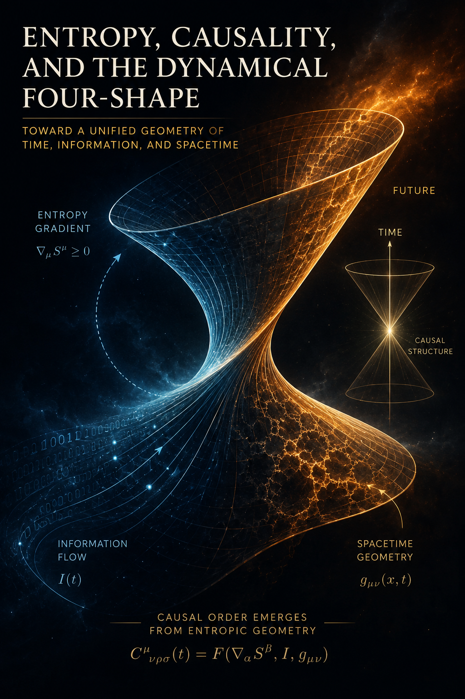

There is something deceptively ordinary about the passage of time. Every physical experience seems to arrive already organized along a direction. We remember events that we call past, experience a present that appears to separate what has happened from what has not, and anticipate events that we call future. A broken glass does not ordinarily reassemble itself. Heat flows from a warmer object into a colder environment rather than spontaneously concentrating itself into the warmer object. Smoke disperses through a room, while the dispersed smoke does not spontaneously gather itself back into the shape of the flame from which it came. We therefore speak naturally of time as though it possessed an intrinsic orientation.
Yet the existence of such an orientation is not as straightforward as ordinary experience suggests. Many of the fundamental equations of physics do not contain an obvious instruction saying that one temporal direction is the future and the opposite direction is the past. In classical mechanics, the microscopic equations can generally be run in reverse. If a sufficiently precise movie of a mechanical system were played backward, the resulting sequence would still satisfy the underlying equations. The same broad feature appears in quantum theory, where the fundamental dynamical equations can possess a substantial degree of time symmetry, even though particular measurements and thermodynamic processes display an unmistakable asymmetry.
This creates a peculiar situation. The equations describing microscopic physical behavior can permit a temporal symmetry that our macroscopic experience emphatically does not possess. The world we inhabit has an arrow, but the microscopic laws do not obviously contain an arrow of the same kind.
The usual response is to appeal to entropy. The thermodynamic arrow of time is associated with the tendency of entropy to increase:
This is enormously successful as a description of macroscopic behavior. It explains why the world contains irreversible processes and why the past looks fundamentally different from the future. But it leaves a deeper question untouched. Why should thermodynamic irreversibility have this direction in the first place?
The question becomes particularly interesting when one stops treating the future as something that simply does not exist yet. Relativity already encourages us to abandon the idea of a universal present dividing an objectively existing past from an objectively nonexistent future. A spacetime description contains events distributed across temporal as well as spatial dimensions. The past and future are not two different substances. They are regions of the same spacetime.
This raises the possibility of considering a more radical picture. Suppose that the universe is indeed represented by a four-dimensional configuration containing all the physical degrees of freedom necessary to describe its history, but suppose that this configuration is not fundamentally static. Suppose instead that the four-dimensional configuration itself is capable of changing.
That proposal is different from simply saying that time flows. It does not introduce a substance that moves from one moment to the next, nor does it require an observer outside the universe watching one spacetime configuration replace another. The hypothesis is that the object normally called "history" could itself possess dynamics.
The distinction is subtle but important. In an ordinary picture, one imagines a three-dimensional state changing through time:
A four-dimensional picture instead represents the entire sequence as one configuration:
The hypothesis explored here adds a second layer. The complete history itself can change:
This does not necessarily mean that there are many universes. It means that there is one universe whose four-dimensional configuration is not necessarily fixed once and for all.
At first this may sound like an unnecessary complication. If the universe already contains time, why introduce another parameter describing change in the complete history? The answer is that the hypothesis is not intended to explain ordinary motion through time. It is intended to ask whether the apparent direction of time could itself be an emergent property of a deeper process.
The distinction can be made by introducing a purely conceptual parameter, \(\tau\), which is not identified with the time coordinate measured by ordinary clocks. Let the four-dimensional physical configuration of the universe be represented schematically by
where \(x^\mu\) denotes the ordinary spacetime coordinates and \(\tau\) labels different configurations of the complete four-dimensional object. An observer inside the universe experiences the temporal coordinate contained in \(x^\mu\). The deeper dynamics would describe how \(\mathcal{U}\) itself changes as a function of \(\tau\).
At this stage, \(\tau\) is only a mathematical placeholder. It should not be imagined as a second ordinary time through which the universe is moving. Introducing such a second time would simply relocate the original problem. If the universe changes with respect to \(\tau\), one could immediately ask what makes \(\tau\) flow, and then demand another parameter behind it. The point is instead to distinguish the temporal structure experienced inside a history from the possible dynamics of the history as a whole.
This distinction allows a different interpretation of the relationship between past and future. If both are regions of the same four-dimensional configuration, then they can be mutually constrained without one having to send a conventional signal to the other. A future condition could participate in determining the complete history in which an earlier event occurs, just as an endpoint can constrain the shape of a physical system without being interpreted as a message traveling backward through that system.
This is the point at which the idea of future-to-past influence becomes conceptually interesting. The claim need not be that an event tomorrow reaches backward through time and physically pushes an object yesterday. Such a picture would retain the ordinary notion of time and merely reverse the direction of a familiar causal mechanism.
The more radical possibility is that ordinary cause and effect are local relationships inside a globally constrained object. What we call a cause and what we call an effect would be two regions of a single history whose configuration must satisfy constraints throughout its temporal extent.
In that case, asking whether the future "causes" the past may already impose an inappropriate picture on the phenomenon. The deeper relation might be neither past-to-future nor future-to-past. It might be a constraint on the whole history from which both temporal directions emerge.
This possibility becomes particularly relevant to entropy. Entropy is often spoken of as though it were something that flows, accumulates, or gets produced. Such language is useful, but it can obscure what entropy actually represents. Entropy is not a physical fluid that occupies a region of space and travels through time. It is a property of a statistical description of physical degrees of freedom.
That distinction opens a path toward the central question of this essay. If ordinary entropy measures something about the distribution of possible microscopic configurations within a physical system, then what would correspond to entropy when the relevant constraint is associated with the opposite temporal boundary?
Perhaps the answer is not "negative entropy." Perhaps the deeper quantity is not an inverse form of entropy at all.
Perhaps entropy is what a particular temporal orientation looks like from inside the history.
To investigate that possibility, it is useful to begin with the most concrete example possible: a box containing a gas, together with a mechanism capable of compressing that gas into a smaller region. The example appears elementary, but it exposes the exact conceptual distinction that the more abstract theory will require.
Imagine a sealed glass box filled with a cloud of colored gas. Initially the molecules are distributed throughout the available volume. An observer sees a diffuse cloud whose microscopic details are enormously numerous and effectively inaccessible. The gas can occupy an immense number of microscopic configurations while looking, at the macroscopic level, almost identical.
Now connect the box to an exhaust system and a pump capable of drawing the gas into a small pressurized tank.
From the ordinary thermodynamic perspective, the process has a clear direction. The gas is initially dispersed throughout a large volume and is subsequently concentrated into a smaller one. Work is performed by the pump. Energy is transferred. Heat is generated and ultimately dissipated into the environment. The complete process obeys the second law even though the entropy of the gas itself may decrease during compression, because the entropy increase of the larger system containing the pump, gas, environment, and other degrees of freedom compensates for that local decrease.
Nothing about this process requires a mysterious substance called anti-entropy.
But now reverse the conceptual question. Instead of asking what happens when the gas is compressed, ask what would have to be true of the complete history if the compressed state were treated as a boundary condition.
The earlier state of the gas could no longer be considered entirely independently of the later state. Not every microscopic arrangement in the box would be compatible with every possible final condition. The final state would constrain the class of histories that can connect it to the initial state.
This is a modest statement in mathematics, but it has potentially profound consequences when applied to the universe as a whole. If both temporal boundaries participate in determining the physical history, then the apparent one-way evolution of entropy may be a consequence of the particular global configuration rather than a fundamental one-directional law of nature.
The central hypothesis can therefore be stated without yet committing to any particular mechanism:
Everything that follows will depend on what this statement actually means physically. It is not enough to rename entropy, introduce an abstract "future force," or imagine a second time dimension. The proposal becomes interesting only if the concepts can be separated cleanly and eventually connected by mathematics.
The first separation is between entropy and the thing that might produce the apparent temporal direction. The second is between a global constraint and an ordinary causal signal. The third is between a static four-dimensional block and a four-dimensional configuration capable of deformation. The fourth is between multiple possible histories and multiple actually existing worlds.
These distinctions will allow the hypothesis to remain speculative without becoming vague. The goal is not to declare that the future literally pushes the past, but to ask whether the familiar language of pushing, dissipation, pressure, and entropy could be approximating a deeper relation between different regions of one evolving spacetime configuration.
The question, then, is no longer simply why entropy increases.
It is whether the increase of entropy is the visible trace, from within a particular orientation of history, of a more fundamental process that constrains the shape of the history itself.
Before asking what could play the role of a future-directed counterpart to entropy, it is necessary to remove one misleading intuition. Entropy is not a material substance that is transported from one place to another. It does not behave like a fluid whose density can be measured independently of the physical system to which it belongs. Entropy is a quantity assigned to a physical state, and its meaning depends on how the microscopic degrees of freedom of that state are represented or coarse-grained.
This distinction matters because the language of thermodynamics often encourages us to speak as though entropy were an active agent. We say that entropy is produced, that it flows into the environment, that a system dissipates energy, or that entropy drives a process toward equilibrium. Such language is useful at the macroscopic level, but it can conceal the more precise statement underneath: a physical system evolves through configurations whose statistical descriptions contain different numbers of accessible microstates.
For a classical system, the statistical entropy associated with a probability distribution \(p_i\) can be written as
while the corresponding expression for a quantum state involves the density operator \(\rho\):
The important feature of these expressions is not their particular mathematical form, but what they reveal about the concept. Entropy concerns the structure of a statistical description. It tells us something about how information is distributed over possible microscopic configurations.
This is why a gas can have a large thermodynamic entropy without appearing complicated to an observer. A macroscopic description might specify only its temperature, pressure, volume, and composition. Countless microscopic arrangements of the molecules are compatible with those same macroscopic quantities. The entropy measures, in one form or another, the multiplicity associated with that macroscopic description.
A low-entropy macroscopic state is correspondingly special. It occupies a comparatively small region of the available microscopic configuration space. A high-entropy macroscopic state corresponds to a vastly larger collection of microscopic possibilities.
This gives the second law a statistical character. The statement that entropy tends to increase does not mean that microscopic dynamics contain a universal force pushing every system toward disorder. It means that, given suitable boundary conditions, the overwhelming majority of accessible microscopic evolutions lead from unusually special macroscopic states toward states compatible with vastly more microscopic configurations.
The distinction is crucial. A broken glass can in principle reassemble itself according to microscopic laws. The relevant molecular trajectories are not forbidden merely because they would decrease the macroscopic entropy of the glass and its surroundings. What makes the reverse process effectively impossible is the extraordinary improbability of the required microscopic coordination.
The second law therefore contains two ingredients that should not be confused. There is the dynamical evolution specified by microscopic laws, and there is the statistical weight assigned to different macroscopic histories.
The arrow of time emerges from their combination with boundary conditions.
This is already suggestive for the hypothesis under consideration. If the thermodynamic arrow depends not only on local equations but also on the statistical structure of allowed histories, then changing the way histories are constrained could potentially change the way the arrow appears without changing the local microscopic laws themselves.
The phrase "allowed histories" deserves attention. In an ordinary initial-value description, one specifies the state of a system at some initial time and evolves it forward. Symbolically,
The future is then calculated from the initial condition and the dynamical equations. Although this formulation is extraordinarily useful, it is not the only mathematical way to describe physical systems. Boundary-value problems can specify conditions at more than one location, including conditions at different temporal boundaries.
One could instead consider histories \(H\) satisfying both a past condition and a future condition:
The resulting set of admissible histories can be much smaller than the set obtained from the past condition alone. The future condition does not have to be imagined as a message transmitted backward through time. It can simply be part of the specification of the complete solution.
This distinction provides the conceptual opening for a future-to-past influence that is not equivalent to ordinary reverse causation. If the universe is described fundamentally by complete histories rather than by isolated instantaneous states, then information associated with both temporal boundaries can enter the definition of the physical solution.
There is a useful analogy in ordinary mechanics. Consider a stretched elastic structure whose endpoints are fixed. The shape of the interior is constrained by both endpoints. It would be misleading to say that the left endpoint sends a message through the material to determine every point in the structure, just as it would be misleading to say that the right endpoint independently sends a message in the opposite direction. The entire shape is a solution to a constraint involving the structure as a whole.
The temporal version of this idea would replace spatial endpoints with temporal boundaries. The past and future would not be competing causes. They would be conditions on one history.
The analogy should not be pushed too far. An elastic medium exists within ordinary three-dimensional space and evolves through ordinary time, whereas the proposed historical object would already include the temporal dimension. Nevertheless, the analogy captures the essential conceptual distinction between a local force and a global constraint.
This also changes the question of what a future-directed analogue of entropy should be. If entropy measures the statistical multiplicity of configurations compatible with a macroscopic description, then its counterpart need not be a substance flowing in the opposite direction. A more natural candidate would be a quantity measuring the compatibility of a local configuration with constraints imposed elsewhere in the history.
For example, suppose \(X_t\) represents the microscopic state of a system at some intermediate time, while \(B_{\rm f}\) represents a future boundary condition. One could consider a conditional probability
This quantity asks a different question from ordinary thermodynamic entropy. It does not ask how many microscopic configurations are compatible with the present macroscopic state. It asks how compatible the present configuration is with a specified future condition.
Taking the logarithm of such a quantity produces a quantity with a familiar statistical interpretation:
This expression is only a conceptual model at this stage. It should not be mistaken for a newly established physical field. Its purpose is to illustrate how a future constraint could appear mathematically as an effective potential over present configurations.
Configurations that are highly compatible with the future boundary would have a small effective cost, while configurations that make the boundary condition exceedingly unlikely would have a larger one. If gradients of such a quantity entered the effective dynamics, the resulting tendency could resemble a force:
The crucial difference is that this would not necessarily be a new force in the ordinary sense. The apparent tendency could arise because only certain complete histories are compatible with the global conditions. The potential would then summarize the geometry of the allowed history space rather than represent a new material field pushing particles through spacetime.
This distinction gives us two possible interpretations of the proposed future influence.
In the first, there is a genuinely new physical degree of freedom. A field exists whose configuration depends on temporal boundary conditions and which couples to ordinary matter. Such a field would have its own dynamics, energy, momentum, and potentially observable effects.
In the second, there is no additional substance. The apparent future-directed influence is a property of the global boundary-value problem itself. The mathematics may contain nonlocal correlations among different temporal regions without requiring a new particle or field.
The second possibility is conceptually more conservative. It avoids multiplying the physical inventory of the universe before there is evidence that another field exists. It also fits more naturally with the idea that the future and past are already parts of one geometric object.
But it creates a different difficulty. If the influence is not a field, what exactly is it that changes when the complete history changes? A purely mathematical constraint does not obviously provide a mechanism for the dynamic deformation proposed in the previous section.
This is where the hypothesis becomes more demanding. It is not enough to say that the future constrains the past. A static boundary-value problem can already do that mathematically. The distinctive proposal here is that the complete history itself can change toward a configuration satisfying its constraints.
That requires a distinction between two concepts that are often silently identified: the space of possible histories and the actual history occupying one point within that space.
Imagine a vast space containing every physically admissible history of a system. Each point in that abstract space represents one complete configuration extending across time. Ordinary physics might select one such configuration through initial conditions and dynamical laws. The hypothesis being explored here instead asks whether the actual configuration can move through this space of histories.
The movement would not be motion through ordinary spacetime. Every individual point in this abstract space already contains an entire temporal extent. It would instead be a change in which complete history is realized.
This provides a precise place for the intuitive idea that history can change without requiring multiple worlds. There is one actual history at each stage of the deeper dynamics, but the actual history is not permanently fixed.
The distinction can be represented schematically:
If such a dynamics exists, entropy could be understood as one observable property of the configurations encountered along the trajectory through history space. The thermodynamic arrow would then be a property of the path, not necessarily a fundamental orientation built into the underlying space.
This possibility also clarifies why "negative entropy" is probably the wrong concept. A system becoming more ordered does not require an anti-entropy substance to enter it. The entropy of the system can decrease because energy, information, or correlations are redistributed among the system and its environment. What appears as concentration locally can coexist with greater entropy globally.
Likewise, if a future boundary constrains an earlier state, the corresponding effect does not have to be an inverse of thermodynamic entropy. It may instead be a constraint on which correlations among microscopic degrees of freedom are compatible with the complete history.
The distinction between entropy and compatibility may therefore be fundamental to the idea. Entropy describes the multiplicity of microscopic realizations associated with a macroscopic state. A hypothetical historical potential would describe how strongly a configuration participates in the subset of histories compatible with the global boundary conditions.
These quantities could interact without being the same quantity.
This suggests a more interesting interpretation of the original intuition about "dissipation." What is dissipated in an ordinary irreversible process is not entropy itself. Energy becomes distributed among degrees of freedom in ways that make the original macroscopic organization difficult to reconstruct. The information required to specify the microscopic correlations becomes inaccessible to the macroscopic description.
If the temporal boundary conditions act on those correlations, then what looks like ordinary dissipation from one temporal perspective might correspond to a changing constraint on the distribution of microscopic information from another.
The word "pressure" may therefore become useful, but only metaphorically at first. A future condition could behave mathematically like a pressure on the space of possible histories, favoring some configurations over others. It would not necessarily be a pressure in physical space.
That distinction will become important when the gas experiment is considered directly. A pump produces ordinary mechanical pressure because a macroscopic apparatus transfers momentum to molecules. A hypothetical historical pressure would be something fundamentally different: it would represent a tendency of the complete configuration toward histories satisfying a boundary condition.
Whether such a tendency can be made into a real physical mechanism is the central problem. For now, the useful result is narrower. We have separated entropy from the hypothetical quantity that might encode future compatibility.
Entropy need not have an inverse substance.
A future-to-past influence need not be reverse entropy.
And a global temporal constraint need not be an ordinary force.
The remaining question is whether these abstract distinctions can be grounded in a physical situation where the difference becomes intuitive rather than merely mathematical.
That is precisely what the glass box provides.
Consider a glass box containing a cloud of colored gas. The box is large enough that the molecules can move freely throughout its interior, and for the moment we ignore the detailed structure of the molecules and concentrate on their collective state. After the system has been left undisturbed for sufficient time, the gas occupies the available volume approximately uniformly. There is no obvious macroscopic structure in the cloud. The molecules continue moving rapidly, colliding with one another and with the walls, but the large scale appearance of the gas remains essentially unchanged.
Now attach the box to an apparatus containing a pump and a small pressurized tank. A valve is opened, the pump begins operating, and the gas is gradually transferred from the large box into the much smaller tank. The final state is dramatically different from the initial one. Molecules that were distributed throughout a large volume are now confined to a much smaller region.
Viewed only through the gas, the process appears to move from a relatively disordered configuration toward a more constrained one. The gas initially occupies a large volume and can be arranged in an enormous number of microscopic ways, while the final state restricts the molecules to a much smaller region. In the usual thermodynamic description, the translational entropy of the gas has decreased.
Yet nothing has been reversed.
The pump is itself a physical system. It consumes energy, produces heat, and changes the state of its surroundings. The electrical supply, mechanical components, surrounding air, and laboratory all participate in the process. When these degrees of freedom are included, the entropy decrease of the gas can be more than compensated by entropy production elsewhere:
The important point is therefore not that the pump reverses the thermodynamic arrow. It does not. It creates a local decrease in entropy as part of a larger process in which the total entropy need not decrease. What appears unusual from the perspective of one subsystem becomes ordinary once the larger configuration is taken into account.
This provides a useful starting point for the present argument. The state of the gas does not contain the complete explanation of its own evolution. Its compression depends upon the state of the pump, the availability of energy, the configuration of the surrounding environment, and the microscopic correlations established between all of these systems.
The information required to describe why the gas occupies its final state is therefore distributed across a much larger physical configuration.
Now imagine describing the entire experiment as a four-dimensional history. Instead of regarding the gas as a sequence of isolated states, imagine a single object containing the gas, the pump, the tank, the surrounding environment, and every microscopic event connecting the beginning of the experiment to its end.
The history contains not merely the gas becoming compressed. It contains the electrical current driving the pump, the motion of its components, the heating of its mechanism, the propagation of sound, the movement of molecules in the surrounding air, and the microscopic correlations produced throughout the laboratory.
The ordinary thermodynamic description selects only a small number of variables from this enormous configuration. It calls the initial state one condition, the final state another, and describes the intervening process using quantities such as pressure, temperature, volume, work, and entropy.
The complete microscopic history contains vastly more information than this description. In particular, a macroscopic state does not uniquely specify the microscopic configuration that produced it.
This distinction becomes important when we change the question. Instead of asking only how a specified initial state evolves, suppose that we also specify a condition that must be satisfied at a later point in the history. For example, suppose that the gas is required to occupy the pressurized tank with a particular macroscopic pressure, temperature, and volume.
The future condition does not have to exert a force on the gas. It simply changes which complete histories are admissible. Among all microscopic configurations that could exist initially, only some will be compatible with the specified final state together with the dynamics of the pump, the environment, and the gas itself.
Nothing mysterious has happened yet. This is simply the ordinary logic of a boundary-value problem.
If the initial state is specified, the equations of motion determine which future states follow from it. If both an initial and a final condition are specified, the allowed trajectory must satisfy both. The endpoint does not have to send a signal backward through the trajectory. It participates in determining which trajectory qualifies as a solution.
The difference is easiest to see in a simpler mechanical example. Imagine a ball traveling through a region under a known force. If its position and velocity are known at the initial time, the subsequent trajectory can be calculated. But if instead the positions of the ball at both the beginning and end of an interval are specified, then the allowed trajectory must satisfy both conditions simultaneously.
The future endpoint has not become a cause in the ordinary temporal sense. It has become a constraint on the complete solution.
The gas experiment can therefore be understood in the same formal manner. A specified future state restricts the set of complete microscopic histories connecting the initial and final conditions.
This is the first connection to the proposed picture of \(H\). The ordinary experiment does not demonstrate that future conditions physically constrain the past. The future condition in this example is imposed by us. What the experiment demonstrates is something more modest and more fundamental: the configuration of a local region can depend upon constraints distributed throughout a larger system, and a description that contains only the local state can conceal those constraints.
The speculative step begins when the complete history itself is treated as a physical configuration rather than merely as a mathematical description of events.
Suppose that the universe possesses a four-dimensional configuration \(H\), containing the complete arrangement of matter, fields, correlations, records, and events across what an internal observer experiences as space and time. In the ordinary description, one imagines \(H\) as fixed while physical systems evolve through its temporal coordinate \(t\). The hypothesis considered here asks whether the situation could be reversed at a deeper level: whether \(H\) itself could participate in a dynamics described by another parameter, which we call \(\tau\).
Under such a dynamics, the universe would not merely evolve from one state to another along its internal time coordinate. The configuration containing the entire temporal history could itself change:
A change in \(H\) would therefore not necessarily correspond to an ordinary event occurring at some particular time within \(H\). It could alter the configuration of regions that an observer inside the history would describe as past, present, and future.
This does not require the future to behave like an object traveling backward through time. The more precise possibility is that configurations at different temporal locations are jointly constrained because they belong to the same physical object. What appears from inside a temporal slice to be a causal influence from the future could, from the deeper perspective, be a deformation of the complete configuration toward a more compatible history.
Imagine the space of mathematically possible histories as a vast landscape. A particular future configuration occupies only a small region of that landscape. Histories that contain that configuration must also contain compatible arrangements elsewhere. Consequently, imposing or realizing a sufficiently strong constraint at one region reduces the degrees of freedom available to other regions.
The word "deformation" is important. It avoids the implication that one event simply pushes another event through time. What changes is the configuration of the history as a whole.
This also reveals why entropy becomes relevant without requiring a reversal of the second law. The compressed gas is a lower-entropy configuration when considered in isolation, but it is not an isolated configuration. Its existence is correlated with the pump, its energy source, its environment, and the microscopic history that produced it.
A future condition could therefore constrain not merely the local state of the gas but the correlations required to make that state part of a complete history. The restriction is informational before it is thermodynamic. It determines which global arrangements remain compatible, while the ordinary thermodynamic arrow describes how those arrangements behave along the internal time coordinate.
This distinction is important because it separates two different notions of direction. The thermodynamic arrow is a statistical asymmetry within the history. A hypothetical \(\tau\)-dynamics would describe changes between histories. There is no reason that these two directions must coincide.
The gas could therefore continue to obey the ordinary second law at every stage of its internal evolution while the complete configuration \(H\) changes in a direction that depends upon constraints distributed across its temporal extent.
The final state also does not uniquely determine the microscopic past. A particular pressure, temperature, and volume in the tank are compatible with an enormous number of molecular configurations and environmental histories. A future constraint therefore need not select one microscopic history. It can instead restrict the space of possible histories to a smaller family.
This provides a natural place for the distinction between physical determinism and epistemic uncertainty. An observer with incomplete information about \(H\) may be unable to predict which microscopic configuration will occur, even if the complete configuration is definite and globally constrained.
The same distinction will later become important in the discussion of quantum mechanics. If a local observer encounters several apparently possible outcomes, this does not necessarily mean that the corresponding degrees of freedom are fundamentally unconstrained. They may be constrained by correlations with regions of \(H\) that the observer cannot access or describe.
The alternatives need not therefore be interpreted as independently existing histories that must somehow be selected from one another. They may instead represent different directions in the space of possible configurations, only some of which remain compatible with the complete structure of \(H\).
This gives a different interpretation of the phrase "the future pushes the past." There is no need for a future event to transmit a signal into an earlier region. Instead, the existence of a particular configuration at one temporal location changes the set of complete configurations of which that region can consistently be a part.
From the perspective of the earlier region alone, this can resemble influence from the future. From the perspective of the complete history, there is simply a global constraint.
The distinction can be expressed schematically:
The glass box therefore provides a classical analogy for a much more speculative question. Ordinary thermodynamics already teaches us that a local state can be strongly constrained by degrees of freedom outside the subsystem being observed. A boundary-value description further shows that conditions at both temporal ends can restrict the set of trajectories that qualify as complete solutions.
The hypothesis explored here asks whether something analogous could exist one level deeper: whether the complete four-dimensional configuration itself could be subject to a dynamics in which constraints distributed across its temporal extent participate in determining its subsequent configuration.
If such a dynamics existed, it would not necessarily reverse thermodynamics. It would operate on a different object.
Ordinary physics describes how states change within \(H\). The speculative theory asks whether \(H\) itself can change.
That distinction is the conceptual step that carries the glass box beyond an example about compressed gas and toward the central question of the essay.
If a complete four-dimensional history can be regarded as a physical configuration, what would it mean for that configuration to change?
The answer cannot simply be "as time passes," because time is already contained inside the configuration. We need a different sense of dynamics, one that acts on histories rather than on instantaneous states.
That is the subject of the next part.
The phrase "influence from the future" is easy to misunderstand because ordinary causality is described locally. One event happens, something propagates through space, and another event occurs later as a consequence. Even when the propagation is mediated by a field rather than by a visible object, the conceptual structure remains familiar: there is a source, an interaction, and an effect separated by a causal interval.
To reverse the direction of such a process would therefore seem to require an equally familiar but temporally inverted mechanism. One might imagine a future event emitting some field into the past, with that field subsequently altering matter at an earlier time. Such a picture would be a straightforward form of retrocausation, but it is not the idea under consideration here.
The more interesting possibility does not require anything to travel backward through time at all.
Consider again the complete history of the gas experiment. The initial state, the operation of the pump, the movement of the gas, and the final compressed state are all parts of one spacetime configuration. If the final state is imposed as a condition on the complete solution, then earlier configurations are restricted by it. Yet there is no need to imagine a physical signal originating at the final time and propagating toward the initial time.
The distinction can be expressed by comparing two statements.
and
The second statement is weaker in one sense and more radical in another. It does not postulate a new kind of signal, but it abandons the assumption that a physical history must be determined from one temporal boundary alone.
A boundary-value description naturally has this character. If a trajectory must begin at one specified location and end at another, then the intermediate path is constrained by both. The endpoint does not reach backward and modify the beginning. Rather, the beginning was never an independent specification of the entire trajectory.
Applied to a universe, this raises a profound possibility. What if the state of the universe at an intermediate time is not fundamentally a complete state from which the future is generated, but only a cross-section of a larger object whose physical consistency depends on conditions throughout its temporal extent?
Then an observer's local state would contain only part of the information determining the history in which that state occurs.
This does not imply that the future is freely choosing the past. The future condition would itself be constrained by the same complete configuration. There would be no independent future agent deciding what should happen earlier. Past and future would participate in one mutually consistent solution.
This distinction becomes particularly important when considering information. If the future could arbitrarily send information into the past, one could construct familiar causal paradoxes. An observer could receive a message that prevents the event that generated the message, or obtain information with no consistent origin. A theory based on global temporal constraints must avoid this possibility.
The hypothesis therefore requires a stronger principle than simple backward signaling. The allowed histories must be globally self-consistent.
Suppose, for example, that an experimenter in the future records the result of an experiment and that this result somehow constrains the earlier preparation of the experiment. The earlier preparation cannot then be arbitrary. It must be one of the preparations compatible with the final result and with the complete physical evolution. The result and the preparation form a single consistent structure.
The future does not become an external controller of the past. It becomes part of the condition that defines which past belongs to the actual history.
This is close in spirit to several ideas that already appear in physics, although the hypothesis developed here goes beyond any one of them. Variational principles describe entire trajectories at once. Some formulations of quantum mechanics assign importance to amplitudes associated with complete paths. Certain interpretations of quantum theory explore correlations involving both preparation and measurement conditions. Time-symmetric formulations treat temporal directions more symmetrically than ordinary thermodynamic experience suggests.
None of these facts establishes a dynamically changing four-dimensional history. They do, however, show that physics does not require every useful description to take the form of a one-way chain beginning at an initial instant.
The conceptual obstacle therefore shifts. The difficult question is no longer whether a future boundary can mathematically constrain an earlier state. It plainly can in many types of boundary-value problem. The difficult question is whether such a global description can be interpreted as a genuine physical dynamics of history.
To make that question precise, imagine a space \(\mathscr{H}\) whose elements are complete histories. Each element contains the fields, particles, geometry, and correlations throughout the relevant spacetime region. A particular history \(H\) is therefore not a state at one time. It is an entire spacetime configuration.
The ordinary laws of physics can be thought of as defining a subset \(\mathscr{H}_{\rm phys}\) consisting of histories that satisfy the equations of motion and whatever boundary conditions are imposed. The speculative step is to ask whether there could be a deeper evolution
where \(\tau\) does not represent the time experienced by observers inside \(H\), but labels the changing configuration of the complete history.
The important requirement would be that the evolution in \(\tau\) preserve physical consistency. A history could change, but it could not simply become any arbitrary history. Its new configuration would have to remain compatible with the relevant constraints.
This gives a natural interpretation to the intuition that history can "change shape." The change would not be an object moving backward through an already fixed timeline. It would be a displacement through the space of complete solutions.
At one value of \(\tau\), the universe might possess one complete configuration. At another value, it could possess a slightly different configuration. An observer embedded in the later configuration would not necessarily see an edited version of the earlier one. The observer would simply possess the memories and records belonging to that version of history.
This also means that a change in history need not resemble ordinary historical revision. There is no requirement that the universe preserve a hidden record of its previous configuration. If the entire physical configuration changes, the record of the previous configuration can change with it.
This may sound metaphysical until the mathematical distinction is kept firmly in view. A conventional state \(X(t)\) changes as the temporal coordinate changes. A complete history \(H\) already contains all values of \(X(t)\). A historical dynamics would instead change \(H\) itself:
The second relation is the one that ordinary physical intuition has difficulty visualizing because our experience supplies no direct perception of history-space. We experience a cross-section of a history, not the space of histories in which that history might reside.
This returns us to the original intuition about an observer seeing only one slice of spacetime. The observer does not stand outside the universe and watch its complete four-dimensional configuration evolve. The observer is itself a structure contained within one such configuration.
If the configuration changes, the observer changes with it.
The apparent passage of time would therefore remain perfectly ordinary from within the history. Clocks would tick, memories would accumulate, causes would precede their effects, and thermodynamic processes would possess an arrow. None of those phenomena requires the observer to perceive the deeper historical dynamics directly.
This creates an unusual possibility. What we call the direction of time could be the orientation in which information, records, and thermodynamic correlations are organized inside the particular history occupied by the observer. The deeper dynamics would not necessarily have a preferred direction corresponding to that experienced arrow.
A history could therefore be asymmetric from within while the law governing changes between histories remained symmetric.
This is the conceptual space in which a future-to-past influence can be considered without introducing a literal backward-moving substance. The influence is not a projectile traveling against time. It is a change in the admissible or realized configuration of the complete history.
But this raises the central physical question. If histories can change, what determines the direction and magnitude of that change? What quantity distinguishes one candidate history from another? Why should the dynamics move toward one configuration rather than another?
The answer cannot simply be entropy, because entropy is already the quantity whose temporal behavior we are trying to explain.
Nor can the answer simply be "the future," because the future is part of the history whose dynamics we are attempting to describe.
We therefore need a concept that can describe a preference or tension between different regions of a complete configuration without merely renaming the arrow of time.
The most useful way to proceed is to take the four-dimensional picture seriously for a moment, without yet deciding whether it is ontologically fundamental. A physical event can be represented by spacetime coordinates \(x^\mu\), where the temporal coordinate is treated mathematically alongside the spatial coordinates. A complete physical history then consists of fields and matter configurations assigned throughout this spacetime domain.
Schematically, let
denote the complete configuration. The symbol \(\mathcal{U}\) can be understood broadly. It might include matter fields, gauge fields, the metric, and whatever additional degrees of freedom a fundamental theory requires. The notation is deliberately agnostic about the ultimate ontology.
In this description, the history of an object is not something added to the universe after the object exists. The history is part of the four-dimensional configuration itself. A particle's worldline, a planet's orbit, the operation of a pump, and the formation of a memory are all structures distributed through spacetime.
The usual intuition of a present moving toward a future can then be understood as the experience of an observer localized within this configuration. The observer's physical state contains records correlated with some regions of the observer's past worldline, while it does not yet contain corresponding records of events that, according to that worldline, lie in its future.
This asymmetry is real as an internal property of the configuration. The question is whether it must also be fundamental in the laws governing the configuration itself.
There is a temptation to answer immediately that a four-dimensional object must be static. If all of its temporal parts are included, one might imagine that the entire history simply exists as a finished geometric structure. In such a picture, asking whether the history changes would seem contradictory. Change itself occurs within time, and time is already part of the object.
But this objection depends on identifying the four-dimensional object with the final physical ontology. A mathematical representation can contain an entire trajectory without implying that the representation is itself a static substance. The more interesting question is whether a deeper theory could treat complete spacetime configurations as dynamical variables.
Physics already contains examples of descriptions in which an entire trajectory is handled as a single mathematical object. The action principle is one. Rather than starting with a particle at one instant and constructing its future step by step, one can define a functional on possible trajectories and identify the physically relevant trajectory through a variational condition.
This notation does not imply that the universe literally searches through possible histories. It is a compact mathematical formulation of the equations governing the system. Nevertheless, it demonstrates that the language of physics can naturally treat an entire history as an object subject to a principle.
The proposed idea asks whether this mathematical possibility could be given a deeper physical interpretation. Perhaps the complete history is not merely a convenient object used to calculate what happens, but a physical configuration with its own effective dynamics.
If so, the four-dimensional object should not be pictured as a rigid block. A better analogy would be a deformable configuration. Its temporal extent remains part of the object, but the arrangement of matter, fields, and correlations within that extent can change.
The analogy with a physical body is useful here, provided its limitations are respected. Consider a flexible structure extending from one end to another. The distance between the ends does not imply that one end is the cause of the other. The structure has a configuration determined by constraints distributed throughout it. If one boundary moves, the equilibrium configuration of the entire structure can change.
The temporal version would have past and future regions playing roles analogous to different portions of an extended configuration. A change in one boundary condition could alter the globally compatible arrangement without requiring a conventional signal to cross the entire object.
The analogy also gives a natural interpretation to the intuition of tension. Tension does not mean that one end of an object sends a message to the other. It means that the configuration contains an energetic relation between degrees of freedom that would prefer, under the relevant dynamics, some arrangements over others.
The hypothesis therefore requires something analogous to a potential over histories. Let a complete configuration be denoted by \(H\), and suppose there exists a functional \(\mathcal{F}[H]\) that quantifies some property of the history relevant to its deeper dynamics. Then one could imagine a historical evolution of the form
where \(\mathcal{G}\) represents an appropriate dynamical operator and \(\tau\) is the hypothetical parameter describing change through the space of histories.
This equation is not proposed as a finished fundamental law. It is a schematic device for identifying what a theory would need. There must be some functional distinguishing different complete configurations, some rule describing how configurations respond to that functional, and some constraint preventing the evolution from producing physically inconsistent histories.
The most interesting candidate for \(\mathcal{F}\) would have to contain information about temporal correlations. It could not simply be ordinary thermodynamic entropy, because an isolated increase of entropy would reproduce the phenomenon we are trying to understand rather than explain it.
One possibility is that the functional measures the degree of compatibility between different temporal regions of the configuration. A history in which the microscopic state near the future boundary is statistically compatible with the state near the past boundary would have one value of the functional, while a history containing incompatible correlations would have another.
This would turn the intuitive "tension" into something more precise. Tension would not be a mysterious force stretching spacetime between yesterday and tomorrow. It would be a property of the configuration's position within the space of histories.
The analogy with the body also explains why the past and future need not be treated as independent actors. A body does not contain a separate "left force" and "right force" merely because its shape is determined by both ends. Its configuration is a single solution to a distributed constraint.
Likewise, a universe satisfying conditions at multiple temporal boundaries would not contain two competing causal agencies. It would contain one globally constrained configuration.
The crucial difference from an ordinary block universe is then not the existence of the four-dimensional configuration. It is whether that configuration is ontologically final.
In a strictly static block interpretation, the complete history is fixed. There is no deeper process by which one history becomes another. The apparent passage of time is an internal feature of the block, and the question of why this particular block exists is separate from its internal dynamics.
In the dynamical-history hypothesis, by contrast, the complete history is itself a variable. The universe can occupy one globally consistent configuration and later occupy another. The internal observer does not experience the transition as an external editing process because the observer belongs to the configuration being transformed.
This provides a possible middle position between two familiar extremes.
On one side is the conventional evolving-state picture, in which the present is fundamental and the future is generated from it.
On the other side is a completely fixed block universe, in which the entire history is already determined and no deeper change of the four-dimensional configuration is meaningful.
The proposal occupies a third conceptual position:
This position immediately creates a new problem. If the history changes, what exactly remains invariant between one configuration and the next? Without such invariants, the concept would collapse into an arbitrary succession of unrelated universes.
The answer must be that neighboring histories share structure. Their physical laws, causal relationships, conserved quantities, and perhaps large portions of their four-dimensional configurations must remain continuous under the deeper dynamics. History changes would therefore be constrained deformation rather than replacement by an unrelated world.
The idea can be pictured as a path through a space of histories:
where neighboring configurations differ only within the limits permitted by the underlying dynamics. The path itself would then become the deeper object of study.
This formulation also changes the meaning of determinism. A theory can be deterministic within each history while remaining dynamically open at the level of histories. Given a particular \(H\), the physical events contained in it may obey completely deterministic laws. Yet the deeper dynamics can determine which \(H\) is realized.
Alternatively, the deeper dynamics could itself be probabilistic. Nothing in the concept of a changing history requires that the trajectory through history-space be deterministic. What matters is that the probabilities or transition rules obey precise laws.
This distinction may eventually become important for interpreting quantum mechanics. Quantum theory does not merely leave gaps in an otherwise classical sequence. It assigns probabilities to outcomes and encodes correlations that cannot be reproduced by simple classical hidden-variable pictures satisfying ordinary locality assumptions. If the universe is fundamentally a dynamically selected history, quantum uncertainty could potentially reflect the observer's incomplete access to that deeper selection process.
That possibility must remain separate from the stronger claim that quantum mechanics has already demonstrated a changing four-dimensional universe. It has not. The quantum connection is a question for the hypothesis, not evidence that can be assumed in advance.
The same caution applies to the idea of a future field. A four-dimensional representation does not automatically produce a physical force acting between temporal regions. To establish such a force would require a new theory with equations and experimental consequences.
The purpose of the four-dimensional object is therefore more limited. It gives us a place where past and future can coexist as parts of one configuration, making it possible to formulate mutual constraints without immediately invoking backward-moving signals.
But the analogy with a stretched object suggests something further. If the complete history can possess relations between distant temporal regions, then the word "tension" may refer not merely to compatibility but to the dynamics of relaxing incompatibility. A history that is not fully compatible with its global constraints could be driven toward another configuration.
This is the point where the metaphor can become a physical hypothesis.
What would the universe be "relaxing" toward?
Would the relevant quantity be entropy, information, action, a measure of temporal correlation, or something not yet represented in ordinary physics?
And if the tendency operates across the complete four-dimensional configuration, why does an observer embedded within it perceive an ordinary thermodynamic arrow rather than the deeper process directly?
These questions lead to the concept of historical tension itself.
The phrase "a changing history" creates an immediate conceptual difficulty. Change is normally defined by comparing one state with another at different times. If the object being changed already contains time, then it is tempting to conclude that the phrase is self contradictory. What could it possibly mean for the entire temporal object to change if there is no second time outside it in which the change occurs?
This objection is decisive if the four dimensional object is assumed to be the fundamental level of reality. It is not decisive if the four dimensional object is itself a state of a deeper theory. The distinction is analogous to the difference between a trajectory and the equations that determine trajectories. A trajectory can contain time without being the ultimate object on which every conceivable dynamical description must terminate.
The hypothesis therefore requires a distinction between ordinary temporal evolution and meta temporal configuration change. The first is what clocks measure. The second would describe a transformation of the entire spacetime configuration, and it would need to be represented by something other than the time coordinate appearing inside that configuration.
Calling that additional parameter \(\tau\) does not solve the problem by itself. It merely gives a name to the unknown. The real question is whether a theory could define \(\tau\) without turning it into another ordinary time. If \(\tau\) were simply another physical time dimension through which the universe moved, then the same question would immediately arise about what determines evolution along \(\tau\).
A more restrained possibility is that \(\tau\) is not a physical dimension at all. It could be a parameter indexing successive solutions of a deeper constraint equation. The change would then be analogous to changing the configuration of a mathematical solution rather than an object physically traveling through an additional dimension.
Consider a family of histories
For each fixed value of \(\tau\), the function of \(x^\mu\) represents one complete history. The parameter \(\tau\) therefore does not tell an observer where they are in ordinary time. It tells us which complete history is being considered.
If the theory contains a rule for changing \(\mathcal{U}\) with \(\tau\), then the object of the deeper dynamics is not a three dimensional state but a four dimensional configuration.
There is an important philosophical consequence. The word "present" would no longer refer to the fundamental boundary between what exists and what does not exist. It would refer to a particular hypersurface within the currently realized history. Likewise, the past would not be a collection of events that are eternally fixed while the future remains unrealized. Both would be portions of the same configuration.
The changing element would be the configuration itself.
This does not require every event to be equally mutable. A useful theory could possess a strong notion of rigidity. Some portions of a history might be effectively fixed while others remain sensitive to changes in global constraints. The degree of historical flexibility could depend on the physical correlations connecting one region to another.
This suggests that "history" should not be imagined as a flexible film whose every pixel can be freely moved. A better analogy is a constrained physical field. Changing one portion changes what configurations remain possible elsewhere, and the allowed deformation is determined by the equations governing the entire object.
The mathematical structure might therefore resemble a field theory in configuration space. Let \(H\) denote a complete history and let \(\mathcal{C}[H]\) represent a constraint functional. A possible deeper evolution could take the schematic form
Here \(\Gamma\) is not assumed to be a known physical constant. It represents whatever operator converts a mismatch in the global constraint into a deformation of the history. The equation simply expresses the idea that the history tends to move toward a configuration satisfying some deeper criterion.
An alternative could be variational rather than dissipative. Instead of flowing toward a minimum, histories could be selected by a stationary condition:
The distinction between these possibilities is substantial. A dissipative historical dynamics would introduce an ordering among configurations in history space. A variational theory could remain time symmetric and identify allowed histories without introducing a preferred direction in \(\tau\).
The latter may be especially attractive because the ordinary thermodynamic arrow should not simply be reproduced at the deeper level by inserting another arrow into the fundamental dynamics. If the explanation of temporal asymmetry is to be genuinely structural, the underlying law should ideally be compatible with both temporal orientations.
The asymmetry could then arise from the particular boundary conditions selected by the universe.
This is a familiar strategy in physics. A time symmetric law can produce an asymmetric solution when the boundary conditions are asymmetric. The equations need not say "future" and "past" explicitly if the chosen solution contains a strong distinction between them.
The hypothesis therefore does not require a fundamental force pointing toward the future. It may require only a fundamental rule that treats complete histories symmetrically while allowing particular histories to possess asymmetric thermodynamic structure.
The dynamic aspect would then be responsible for changing which globally consistent history is realized, while the thermodynamic arrow would emerge from the statistical properties of the histories that the deeper dynamics favors or approaches.
This separation is important because it prevents the theory from becoming circular. We do not say that entropy increases because a future directed force pushes entropy forward. We ask instead whether a deeper historical dynamics produces the particular class of correlations from which an entropy gradient emerges.
That is a much stronger question.
It also creates an empirical challenge. If the history changes, there must be some observable distinction between a theory in which the history is fixed and a theory in which it evolves through a deeper configuration space. If every change is perfectly hidden from all possible observers, then the hypothesis may be metaphysically interesting but physically empty.
A viable theory would therefore need to predict something. It might predict subtle deviations from ordinary quantum probabilities, correlations between nominally independent temporal boundary conditions, restrictions on possible initial states, or some other measurable effect.
Until such a prediction exists, the dynamical history remains a conceptual framework rather than a physical theory.
The word "tension" can now be given a more disciplined meaning. In an ordinary mechanical system, tension is associated with a relation among parts of a configuration that prevents those parts from independently occupying arbitrary states. A stretched string has two endpoints whose positions constrain its interior. A membrane has boundary conditions that restrict its shape. A gravitationally bound system contains relations among distant regions that are reflected in its energy.
The temporal analogy would be a relation among different regions of a complete history. The state of one region would not be freely variable because changing it would alter the compatibility of the entire configuration.
This does not imply that every temporal correlation is a force. The existence of correlation is much weaker than the existence of dynamics. The distinctive hypothesis is that the global correlations could generate an effective tendency for the history to deform when those correlations are not satisfied.
Suppose the complete history has a functional \(\mathcal{T}[H]\), which measures some form of temporal incompatibility. We could imagine, purely schematically, that
with \(\mathcal{T}=0\) corresponding to a fully compatible history. The deeper dynamics could then tend toward configurations in which \(\mathcal{T}\) is reduced.
The quantity \(\mathcal{T}\) need not represent an energy in the ordinary sense. It could measure a mismatch of correlations, an inconsistency between boundary conditions, or the statistical improbability of obtaining the observed future from a given intermediate configuration.
For example, one might define a local measure based on conditional probabilities:
A configuration that makes the future boundary highly probable would have low historical tension under this definition. A configuration that makes it extremely unlikely would have high tension.
Again, this is not yet a physical law. It is a way of making the metaphor precise enough to ask what kind of mathematics could support it.
The most interesting possibility is that historical tension could be distributed rather than localized. A future condition might not determine one particular earlier event. Instead, it could alter the probability distribution over many earlier microscopic configurations. The influence would therefore appear as a statistical bias rather than as a visible force.
This would fit naturally with the idea that quantum uncertainty is not necessarily evidence of multiple worlds. A single history could be realized while the observer, lacking access to the complete boundary conditions, describes possible outcomes using probabilities.
The distinction between uncertainty and multiplicity becomes important here. A probability distribution does not logically require that every outcome represented in the distribution actually occur. It can instead express incomplete knowledge of one outcome.
In ordinary classical statistical mechanics, this distinction is already familiar. A gas may have a definite microscopic state even though an observer describes it using a probability distribution. The uncertainty belongs to the description rather than necessarily to the underlying configuration.
Quantum theory complicates this picture because quantum states do not behave merely as ordinary ignorance distributions over classical states. Nevertheless, the logical possibility remains open that the quantum state describes constraints on a deeper physical configuration rather than a literal collection of simultaneously realized classical worlds.
If historical tension were responsible for selecting that configuration, the probabilities observed by an internal observer could represent the projection of a global selection process onto incomplete local information.
The important word is "projection." An observer never possesses the complete history as an object of direct perception. The observer has a local physical state, containing records and correlations generated along its worldline. A global condition can therefore appear locally as uncertainty even if the global configuration is definite.
This offers a possible route between determinism and uncertainty. The universe could possess one actual history while the observer remains unable to infer it uniquely from the information available at a local temporal slice.
Such a theory would not automatically reproduce quantum mechanics. It would still have to explain interference, entanglement, Bell correlations, measurement statistics, and the other structures that make quantum theory distinct from classical hidden-variable models. The historical hypothesis is therefore constrained by the success of quantum physics rather than liberated from it.
The concept of tension also clarifies why the future need not be conceived as a source of energy. If a future condition changes which histories are admissible, it does not follow that energy must travel from that future region into the past. The effect could be entirely encoded in the allowed correlations.
This is analogous to the way a boundary condition can change a solution without injecting a conventional force into every point of the solution. A fixed endpoint changes which trajectories satisfy a variational problem. The endpoint does not need to supply mechanical energy to the interior.
If the universe's history behaves similarly, then the intuitive "pull" between future and past would be closer to a geometric constraint than to a force.
Yet the analogy becomes more provocative if the constraint itself is dynamic. Imagine a string whose endpoints are not fixed permanently but can slowly move while the string relaxes. The shape of the string changes as the boundary conditions change. Now replace the spatial string with a four-dimensional history and the endpoints with temporal constraints. A change in the global conditions would deform the history.
The observer embedded in the history would experience only the resulting local configuration. The deeper process would not appear as a visible hand pulling events through time.
This is perhaps the closest physical interpretation of the original intuition. The "tension" is not something located between yesterday and tomorrow. It is a property of the entire configuration arising because different temporal regions participate in one constraint.
The concept also suggests why historical change could remain coherent. If the deformation is governed by a global functional, neighboring histories need not be independent alternatives. They can be continuously related:
A small deformation can modify events throughout the temporal extent while preserving the structural relations required by the underlying laws. The result is not a collection of disconnected worlds. It is one trajectory through a space of possible histories.
This gives a precise interpretation to the phrase "the shape of history changes." The shape is the complete arrangement of physical fields and correlations over spacetime. Its deformation is a change in that arrangement subject to a deeper constraint.
The idea is still missing one ingredient. We have described what could be under tension, but not what the tension is pushing against. In a mechanical system, a stretched object stores energy because its configuration differs from a preferred configuration. What plays the role of the preferred configuration in history-space?
There are several possibilities. The preferred condition could be maximum global consistency, extremal action, a particular information-theoretic relation between temporal boundaries, or some conservation principle not yet represented in ordinary thermodynamics.
The most interesting possibility is that the quantity is related to information itself. If a complete history contains correlations between its temporal regions, then changing the history changes the distribution of those correlations. What looks from one direction like information being dispersed could, from the opposite boundary, look like information being concentrated into a restricted set of compatible configurations.
This returns us to the original question about the inverse of entropy.
Perhaps there is no inverse entropy.
Perhaps there is a second quantity describing the concentration of admissible histories, while entropy describes the dispersion of microscopic realizations within a local description.
If so, the two quantities could interact without cancelling one another. A local increase in thermodynamic entropy could coexist with an increase in global historical constraint. The apparent irreversibility of the first could be the local signature of the second.
The hypothesis becomes particularly interesting when the two temporal directions are treated symmetrically. From the perspective of an observer whose records grow toward what they call the future, entropy appears to increase. From the opposite boundary, the same complete configuration might be describable in terms of increasing constraint toward the observer's past.
There would then be no need for one temporal direction to be fundamentally privileged. The asymmetry would belong to the observer's location within the history and to the boundary conditions of the universe.
This possibility does not establish that the universe actually works this way. It defines a conceptual target for a theory: a dynamical law on complete histories, a global measure of compatibility or tension, and a mechanism by which the ordinary thermodynamic arrow emerges as a local consequence.
The next question is therefore unavoidable. If entropy is the apparent result of energy and information becoming distributed among increasingly many microscopic degrees of freedom, what would the complementary process look like when described from the opposite temporal boundary?
The language of pressure becomes dangerous precisely when it becomes most intuitive. If the future is said to "push" the past, the mind immediately searches for something that can perform the pushing. We imagine a field, a substance, a flow of energy, or some other physical medium extending from one temporal region into another. But the hypothesis does not require that interpretation. The thing being pushed may not be matter at all. It may be the configuration of the history itself.
This distinction can be made clearer by separating three different notions that are normally compressed into the single word "influence." The first is dynamical influence, in which a physical interaction changes the state of another system. The second is statistical influence, in which conditioning on one variable changes the probability distribution assigned to another. The third is constraint, in which the allowed values of one part of a system depend on the conditions imposed on another part.
A future boundary condition can possess the second and third properties without possessing the first. Knowing the final state can alter the probability assigned to an earlier state, and the requirement that a complete history reach that final state can restrict which earlier states are admissible. Neither statement requires a signal to propagate backward through time.
The proposed historical dynamics adds something beyond this ordinary boundary dependence. It suggests that the complete configuration may itself respond to the global constraint. The object that changes is therefore not necessarily a particle, field, or energy density at one moment. It is the arrangement of all such quantities across spacetime.
We can express the distinction schematically. Let \(X(t)\) be the physical state at an ordinary time \(t\), and let \(H\) denote the complete history containing every \(X(t)\). Ordinary dynamics has the structure
A historical dynamics would instead have the schematic form
The first equation describes how states change within a history. The second would describe how histories themselves change under some deeper rule.
The right hand side of the second equation is where the unknown physics resides. It might depend on the entire history rather than on the local state at one spacetime point. It could therefore contain terms coupling distant temporal regions.
For example, suppose that a functional \(K[H]\) measures correlations between two temporal boundaries. A very schematic form might be
The kernel \(\mathcal{K}\) would determine how configurations on one temporal boundary are related to configurations on the other. The actual theory would need to specify what fields enter this relation and whether the coupling is fundamental or emergent. The expression merely illustrates the kind of mathematical object that could represent historical tension.
A particularly interesting possibility is that the coupling is not between the values of ordinary physical fields alone, but between their information content. The future might not "push matter" directly. Instead, the complete history might be constrained according to the correlations that can exist between its temporal regions.
This would make information, rather than energy, the natural candidate for what is being redistributed by the deeper process.
That statement must also be handled carefully. Information is not a mysterious substance. In physics, information refers to distinctions among possible physical states and to correlations between physical systems. To say that information is redistributed is therefore to say that the physical correlations carrying those distinctions are redistributed.
The idea becomes especially suggestive when applied to thermodynamic irreversibility. Suppose a gas initially occupies a highly organized macroscopic configuration and subsequently disperses. The microscopic dynamics do not destroy information in the fundamental reversible description. Instead, information about the initial configuration becomes encoded in increasingly complicated correlations among the gas and its environment.
From the perspective of a coarse-grained observer, those correlations become practically inaccessible. The gas therefore appears to have lost information about its past, even though the complete microscopic state still contains the relevant information.
This gives us a possible interpretation of the ordinary thermodynamic arrow. Entropy increase can correspond to the progressive transfer of information from accessible macroscopic variables into correlations distributed across microscopic degrees of freedom.
Now reverse the conceptual viewpoint. If a future condition constrains those correlations, then the earlier microscopic state may be restricted to configurations that are compatible with the later arrangement. The future does not need to supply energy to the gas. It changes the set of correlations that can participate in a complete history.
The apparent pressure would therefore be a pressure on information-bearing configurations.
This gives a possible interpretation to the intuition of "something pushing entropy back." What is being pushed would not be entropy itself. The underlying microscopic correlations would be constrained in such a way that a particular macroscopic evolution becomes favored.
Consider the gas in the box once more. Without the pump, a dispersed gas overwhelmingly tends to remain dispersed or to explore configurations that occupy the available volume. To obtain the compressed state, an extraordinary amount of coordination is required. In the ordinary experiment, that coordination is supplied by the pump and the environment.
In a globally constrained history, however, one could ask whether a comparable coordination might arise because the final state itself restricts the admissible correlations. The microscopic trajectories leading to the final condition would form a special subset of all trajectories.
An observer who does not know the final boundary would describe the earlier state using a broad probability distribution. An observer who knows the final boundary would use a narrower conditional distribution.
This simple relation contains much of the intuition. The future boundary changes the description of the past, not necessarily by changing a physical object located in the past, but by changing which complete histories are being considered.
If the actual universe possesses a deeper history-space dynamics, the distinction between description and physical selection becomes more subtle. The conditional distribution might not merely represent an observer updating their knowledge. It could correspond to a real dynamical bias in which complete history is realized.
That is where the hypothesis becomes genuinely physical.
Suppose the historical dynamics assigns a weight to each possible history:
A simple probabilistic formulation might then take the form
where \(T_{\rm H}\) would not necessarily be an ordinary temperature and may ultimately have no physical interpretation at all. The expression is merely an analogy showing how a global functional could bias the space of histories.
A more fundamental theory might instead use amplitudes rather than probabilities, especially if the underlying dynamics is quantum. Then the weighting of complete histories could involve a phase such as
In that case, histories would not simply be selected according to a classical potential. Interference between different histories could become part of the mechanism.
This possibility is important because a theory of historical dynamics must ultimately fit into quantum physics if it is to describe the universe at its most fundamental level. A classical "history pressure" superimposed on quantum mechanics would likely be inadequate. The deeper object may need to be a quantum state over histories rather than one classical history moving through a classical configuration space.
Nevertheless, the conceptual picture remains useful. The future condition can be thought of as altering the geometry of the space of admissible histories. Some directions of deformation become strongly constrained, while others remain available. The resulting effect may appear locally as a tendency toward one outcome rather than another.
This suggests that historical tension could have a direction without the underlying law having a preferred temporal direction. The direction would arise from the gradient of a global constraint within history-space.
A useful analogy is a marble on a landscape. The marble moves downhill because the landscape has a gradient. The landscape itself need not contain an arrow labeled "forward." The direction of motion emerges from the local geometry of the potential.
In the proposed picture, history-space would play the role of the landscape. The complete universe would occupy one point or configuration within it, and the deeper dynamics would determine how that configuration changes.
But unlike an ordinary landscape, history-space contains temporal structures. Moving through it can alter what an internal observer identifies as past and future.
This is precisely why the hypothesis can accommodate a changing history without requiring many worlds. There is no need for every possible configuration to exist as a separate universe. They can instead be neighboring points in a mathematical space of possibilities, while one configuration is dynamically realized at each stage.
The language of "selection" should also be used carefully. If the history evolves continuously, there may be no discrete moment at which the universe chooses one world from a collection of worlds. There is simply a trajectory through configuration space. The alternatives describe nearby directions in which that trajectory could have continued.
The deepest version of the hypothesis would therefore replace the familiar question "What happened?" with a more global question:
That question does not erase ordinary causality. Within each realized history, ordinary causal relations remain. Local physical laws still determine how fields interact. The additional structure appears only when considering the global relation among complete histories.
This is why the proposed mechanism could remain invisible to ordinary experience. If the historical dynamics preserves the local equations exactly, an observer would see ordinary physics. Only the global statistics of histories might reveal the deeper process.
The possibility is speculative, but it gives the original intuition a sharper form. The future is not necessarily a reservoir of energy reaching backward. It may instead act as part of the constraint that determines the distribution of information and correlations in the complete history.
What appears to us as entropy could then be the local thermodynamic manifestation of one side of this global organization.
If the preceding distinction is correct, entropy should not be interpreted as the substance whose opposite is responsible for future-to-past influence. The more interesting possibility is that entropy and historical constraint describe different aspects of the same underlying configuration.
Entropy concerns multiplicity. A macroscopic state corresponds to many microscopic states, and the entropy quantifies that multiplicity in a statistical description. A future constraint, by contrast, can reduce the subset of those microscopic states that belong to histories compatible with a specified later condition.
The two operations are therefore not inverses in a simple numerical sense.
Suppose a macroscopic state \(M\) corresponds to a set of microscopic configurations \(\Omega(M)\). In the simplest Boltzmann description,
Now introduce a future boundary \(B_{\rm f}\). Only some of those microscopic configurations may evolve into histories compatible with that boundary. Let the corresponding subset be \(\Omega(M,B_{\rm f})\). We could then define a conditional entropy
in a simplified equal-weight picture.
The difference
would measure how strongly the future condition restricts the microscopic possibilities compatible with the present macroscopic state.
This quantity is not ordinary entropy. It measures the reduction in admissible possibilities produced by conditioning on a future boundary.
That distinction may provide the mathematical seed for the intuitive "substance" we were searching for. What appears to be a future-directed pressure could correspond not to negative entropy, but to a reduction in the volume of history-space available to the system.
Imagine a vast cloud of possible microscopic trajectories. Without a future boundary, the cloud spreads through a large region of history-space. Introduce a tightly specified future state, and only a narrow subset of those trajectories remains compatible.
From the viewpoint of the intermediate observer, this restriction can manifest as correlations that would otherwise appear improbable. The observer may find that apparently independent variables are correlated because the complete history must satisfy a common future condition.
This is the sense in which the future could provide "substance" without being a substance. The physical content lies in the correlations themselves.
A useful information theoretic language is mutual information. If \(X_{\rm p}\) denotes the state of a past region and \(X_{\rm f}\) the state of a future region, their mutual information is
A nonzero value means that knowledge of one region reduces uncertainty about the other. In a globally constrained universe, temporal mutual information would not necessarily be evidence of a signal passing between the regions. It could arise because both are parts of one underlying configuration.
The important question is whether this correlation can itself become dynamical.
If the historical evolution tends to increase some form of temporal mutual information, then what an observer calls the thermodynamic arrow might be accompanied by an increasing global organization of the history. Conversely, if the relevant quantity decreases in the opposite temporal orientation, the same process could be described from the other boundary as a relaxation of constraint.
This would give a much richer meaning to the phrase "entropy is accounting for a configuration." Entropy would account for the multiplicity of microscopic realizations compatible with a local coarse graining. Historical constraint would account for the correlations among those realizations imposed by the complete temporal structure.
The two quantities could be represented schematically as complementary descriptions:
Neither side needs to be identified with a new physical substance. Both can describe properties of the same underlying microscopic configuration.
This also changes the interpretation of dissipation. In ordinary thermodynamics, dissipation means that useful macroscopic energy becomes distributed among many degrees of freedom. A concentrated form of energy becomes a broader distribution in which the original organization is difficult to recover.
The process can therefore be understood as a widening of the set of microscopic configurations compatible with the macroscopic description.
If we condition on a particular future, however, that set may become narrower again. Not because the entropy law has been reversed, but because the future boundary tells us which microscopic correlations are relevant to the complete history.
The apparent inverse of dissipation would therefore be a kind of concentration of historical compatibility.
This phrase is intentionally different from "concentration of energy." Energy concentration is a physical process such as compression. Historical concentration would mean that a large set of possible local configurations is narrowed by the requirements imposed on the complete spacetime configuration.
The gas experiment makes this distinction concrete. The pump physically concentrates the gas. But the deeper description asks why the particular microscopic trajectory leading to that concentration is the one realized. If the final state is imposed as a boundary condition, the answer can be expressed in terms of conditional histories. If the boundary condition participates in an actual historical dynamics, then the selection of those histories becomes a physical process in its own right.
One can therefore distinguish two layers of explanation:
The first is ordinary thermodynamics. The second is the speculative extension.
This distinction may also explain why the proposed mechanism should not generally appear as a violation of the second law. The second law concerns the statistical behavior of physical states under specified macroscopic conditions. A global constraint changes the ensemble of histories being considered. It does not necessarily alter the microscopic equations governing each history.
A future condition could therefore produce highly nontrivial correlations while every local interaction remains thermodynamically ordinary.
There is an important caveat. If the historical dynamics actually changes the probabilities of observable events relative to standard quantum theory, then it is not merely an alternative interpretation. It is a new physical theory and must be tested against experiment.
This requirement is particularly severe because modern physics already places strong constraints on temporal correlations. Any proposed future influence must preserve causal consistency, reproduce known quantum statistics where appropriate, and avoid allowing controllable signals that would produce experimentally observable violations of established relativistic causality.
The theory might therefore have to distinguish between correlation and communication. A future boundary could influence the distribution of past configurations without allowing an observer to freely encode a message into that influence.
That distinction is familiar in other areas of physics. Correlations can exist between systems without providing a controllable communication channel. A complete theory of historical dynamics would need an analogous restriction.
The most intriguing possibility is that the future condition becomes strongest precisely where the observer's knowledge is weakest. Macroscopic records might appear irreversible because they contain only coarse-grained traces of a much richer set of temporal correlations. The microscopic configuration could carry constraints that are invisible to the thermodynamic variables we normally measure.
Under this interpretation, entropy would remain entirely real as a thermodynamic quantity. What changes is its ontological status. It would no longer be regarded as the fundamental arrow-producing substance. It would be an emergent measure of how a local observer partitions a globally constrained microscopic history.
The arrow of time would then resemble a gradient in a coarse-grained description. The underlying configuration could possess correlations extending in both temporal directions, while the observer sees entropy increase because of the particular way records and accessible degrees of freedom are organized.
This provides a possible answer to the original intuition about what a future-to-past "entropy inverse" might be. The counterpart is not necessarily a negative entropy. It could be a measure of constraint, compatibility, or temporal information concentration.
And if that quantity is dynamic, it could behave effectively like a pressure on history-space.
The next difficulty is more concrete. If the gas is compressed because the final state constrains the history, then what would an observer actually see if the movie of the process were played backward? Would the reverse process simply be ordinary decompression, or would the deeper theory assign a distinct physical interpretation to the reverse sequence?
Imagine that the entire experiment with the colored gas has been recorded at the microscopic level and that the recording is played backward. The molecules that were once compressed in the tank spread outward. The pump reverses its mechanical motion. The heat that was generated during compression appears to return to the apparatus. The gas eventually occupies the larger box in the special microscopic arrangement required to reproduce the original state.
At the level of the microscopic equations, there is nothing intrinsically absurd about such a trajectory. The extraordinary feature is its statistical character. The reverse sequence is extraordinarily special among all microscopic states that could be generated by reversing the macroscopic process.
If we know only that the gas is initially contained in the tank, almost all compatible microstates will evolve toward states in which the gas remains concentrated or eventually explores a broad region of its available phase space. Only an exceptionally organized subset of microstates will produce the exact reversed compression history.
The usual thermodynamic explanation therefore has a simple structure. The movie played forward begins in a special state and evolves toward states compatible with vastly more microstates. The movie played backward begins in one of those ordinary high entropy states and arrives at a highly special state. The microscopic laws permit both, but the statistical weights are radically different.
Now suppose the final compressed state is not merely observed after the fact, but is part of a global boundary condition. Then the reverse trajectory is no longer just an improbable accident. It belongs to the restricted set of histories compatible with that condition.
This does not make the trajectory probable in the ordinary thermodynamic sense. It means that probability must be evaluated within the appropriate conditional ensemble. The difference is subtle but fundamental.
An observer who knows only the initial diffuse state may assign an overwhelming probability to ordinary spreading. An observer who knows both the initial and final conditions must assign probability only among trajectories that connect them.
The future boundary therefore changes the statistical description of the intermediate history. The history is not being selected independently at each moment. The complete trajectory is being conditioned on its temporal endpoints.
This observation suggests a useful distinction between two kinds of reversal. The first is reversal of the trajectory. The second is reversal of the statistical boundary conditions that make the trajectory typical.
A movie can be dynamically reversible while the ensemble in which it is embedded is not. This is one reason the thermodynamic arrow cannot be identified simply with the time reversal symmetry of microscopic equations.
The speculative historical dynamics would introduce a third possibility. The complete trajectory could itself move toward a configuration in which the desired boundary condition becomes increasingly satisfied. In that case the reverse process would not merely be the same movie interpreted backward. It would be a different location in history-space.
This is where the idea of a future-directed pressure becomes most useful. Suppose the final compressed state defines a narrow region of admissible histories. The historical dynamics could move the actual history toward that region. The resulting local behavior would resemble a process being driven toward the compressed state.
From inside the history, however, the observer would still describe the gas using ordinary thermodynamic variables. They would see pressure, temperature, molecular motion, and work being performed by the pump. The deeper historical selection would not replace those descriptions.
Instead, it would determine the particular microscopic correlations within which those ordinary variables evolve.
This suggests that the deepest layer of the theory might not operate directly on thermodynamic variables at all. It could operate on microscopic histories, with thermodynamics emerging after coarse graining.
That would be desirable because thermodynamic quantities are not fundamental in the usual microscopic description. Temperature, pressure, and entropy are collective quantities. A fundamental historical mechanism acting directly on entropy would therefore require an explanation of why that thermodynamic variable has privileged status.
A mechanism acting on microscopic correlations would not face the same problem. Entropy could emerge because those correlations become inaccessible under the chosen coarse-graining.
This leads to an intriguing reversal of the usual explanatory direction. Instead of saying that microscopic physics produces entropy increase and then asking why entropy has an arrow, one could ask whether a deeper global constraint produces a class of microscopic correlations from which both ordinary dynamics and the thermodynamic arrow emerge.
The second law would then remain valid as an emergent statistical law while ceasing to be the deepest explanation of temporal orientation.
The gas experiment also reveals a limitation. A future boundary cannot arbitrarily force any past state. The microscopic laws still restrict which trajectories exist. The pump cannot compress gas without an appropriate physical mechanism, and a future condition cannot make a forbidden microscopic transition permissible merely by declaring it desirable.
Global constraint therefore does not mean unlimited retrocausality.
The future can restrict the solution space, but it cannot simply overwrite the local equations.
This provides a natural condition for consistency:
The actual history must satisfy both the local physical laws and the global temporal constraints. A candidate configuration violating either requirement is not an admissible history.
The concept of a single changing world then becomes much less problematic. At each stage of the hypothetical historical dynamics, there is one configuration satisfying the constraints. The configuration may change, but its allowed changes are determined by the same underlying laws.
The movie analogy is therefore incomplete. A movie is a fixed sequence of frames, while the proposed object is closer to a complete physical solution whose configuration can deform under a deeper law.
The difference becomes especially important for memory. If a history changes coherently, the memory of an earlier configuration changes with it. There is no requirement that an observer retain a record of a previous version of history, because that record would itself be part of the configuration being transformed.
This is what permits a single changing world without many worlds. The alternative histories are possibilities in the space of configurations, not simultaneously existing universes containing incompatible observers.
The idea may therefore be summarized as follows. The ordinary movie is a sequence inside the world. The deeper process changes the movie itself, but does so coherently enough that every frame remains part of one physically consistent history.
The phrase "running the movie backward" then acquires a second meaning. At the level of ordinary spacetime, it reverses the orientation of the trajectory. At the level of history-space, it asks whether the deeper dynamics possesses a corresponding symmetry.
If it does, then there is no fundamental reason for one temporal direction to be privileged at that deeper level. The asymmetry we observe would come from the boundary conditions and statistical structure of the particular history.
This brings us to a more radical possibility. Perhaps the future does not pull the past at all. Perhaps what we call past and future are simply two directions from which the same global constraint can be described.
The proposal of a changing history can easily be mistaken for a version of the many worlds idea. If different complete histories are mathematically possible, one might suppose that every possibility must exist as a separate universe. That is not the proposal here.
The distinction is between possibility and actuality. A space of possible histories can contain many configurations without requiring that all of them be physically realized. A trajectory through that space can select one configuration at each stage while the others remain counterfactual possibilities.
The analogy is ordinary configuration space. A classical particle moving through a room has many possible positions, but its occupying one position does not require that a separate physical particle exist at every other position. The alternatives are part of the structure of the theory, not necessarily part of physical reality.
The proposed universe would be analogous, except that the configurations are complete histories rather than instantaneous positions.
Let \(\mathscr{H}\) denote the space of possible complete histories. The actual universe at a deeper parameter value \(\tau\) is represented by one element
A later configuration is another element \(H(\tau+\delta\tau)\). If the evolution is continuous, the two histories can differ by a small deformation:
The important point is that \(H(\tau)\) and \(H(\tau+\delta\tau)\) are not two simultaneously experienced worlds. They are successive configurations of the one historical object.
This distinction also prevents an immediate objection concerning identity. If history changes, what makes it the same universe rather than a new universe replacing the old one? The answer would have to be continuity in history-space. Successive configurations must share enough structure that the deeper dynamics can be regarded as evolution rather than arbitrary replacement.
The relevant continuity might involve conserved quantities, field configurations, causal relations, symmetries, or an action principle. The precise answer would depend on the underlying theory.
There is no requirement that every event remain unchanged. Indeed, the whole point of the hypothesis is that some events can change. What must remain stable is the rule relating one history to another.
This provides an alternative interpretation of the phrase "the past changes." It does not mean that an observer remains outside the universe while watching a completed past being rewritten. It means that the physical configuration containing the observer's past records is replaced by a neighboring configuration under the deeper dynamics.
The observer has no privileged access to the previous configuration. Their memories are physical correlations within the current one.
This produces an unusual but coherent picture of identity. The universe has a history, but the history is not an immutable archive. Its identity is preserved by dynamical continuity rather than by permanent preservation of every event.
The same principle can apply to an individual observer. A person's identity across ordinary time is represented by a continuous worldline together with changing physical states. In the deeper picture, the entire worldline could itself be part of a continuously deforming four-dimensional configuration.
Nothing in this requires the observer to experience discontinuity. The internal sequence of states remains coherent within each configuration.
This is perhaps the strongest conceptual reason to prefer a single changing world over many simultaneously existing worlds. The hypothesis preserves the unity of the physical description. There is one actual configuration, one set of physical records, and one chain of ordinary causal relations at any given stage of the deeper dynamics. The multiplicity exists in the space of possible deformations, not necessarily in physical reality.
Quantum mechanics makes the issue more difficult, because its mathematical formalism naturally contains superpositions of alternatives. But even there, the existence of a superposition does not by itself determine the ontology of the world. Whether the alternatives represent simultaneous physical branches, potential outcomes, or components of a deeper state remains an interpretive question.
A historical dynamics could therefore attempt to interpret quantum alternatives as directions in a space of possible histories rather than as separate classical worlds. The actual physical configuration would remain singular, while the mathematical state would encode the alternatives relevant to its evolution.
This possibility would require substantial development. A theory cannot simply declare that quantum superposition means "one changing history" and thereby reproduce quantum mechanics. It must explain why interference occurs and why the observed probability rules take their particular form.
Nevertheless, the conceptual distinction is valuable because it separates two questions that are often conflated. The first asks how many solutions are represented by the mathematics. The second asks how many physical histories actually exist.
A theory of changing history could contain an enormous space of possible solutions while maintaining a single actual world.
The future-to-past influence becomes more subtle under this interpretation. If there is only one world, then the future cannot be another branch communicating with the past. The future is simply another region of the same world configuration.
Its influence would therefore have to appear as a constraint within that one configuration.
This removes one source of causal paradox. There is no second branch that can send information into the first. There is only one history satisfying the complete set of constraints.
It also gives a natural interpretation to the phrase "there can only be one configuration that connects them." The claim should not be understood literally as meaning that the laws permit only one microscopic trajectory between two states. Usually many trajectories will be compatible with the same macroscopic boundaries. Rather, the physical universe realizes one particular globally consistent configuration.
The multiplicity of possible histories belongs to the theory's space of alternatives. The singularity of the actual world belongs to its ontology.
This distinction allows uncertainty without branching reality. An observer may be unable to determine which history is realized even though only one is physically realized.
The same principle applies to the future. The observer may experience uncertainty about what will happen because the local state does not uniquely determine the complete history. The deeper dynamics may nevertheless select one globally consistent configuration.
In such a picture, quantum randomness could be interpreted not as the universe literally splitting into incompatible futures, but as a local manifestation of the fact that the observer does not possess the complete information needed to identify the global history.
That interpretation remains speculative and must confront the strongest evidence for genuinely quantum behavior. In particular, any theory based on hidden global variables must explain why Bell inequalities are violated and why the observed correlations have the structure predicted by quantum mechanics.
The historical model might evade a simple local hidden-variable interpretation because its fundamental variables are global rather than local. But that is precisely why it would need to be formulated carefully. Global dependence can reproduce correlations only by paying a price somewhere in the theory, whether in locality, independence of boundary conditions, or the interpretation of measurement.
The advantage of the historical picture is that it does not regard these global correlations as mysterious messages traveling backward through time. They are built into the complete configuration.
The danger is that the theory could become unfalsifiable if every observed correlation is simply declared to be a global constraint. A useful theory must predict which correlations occur, how strong they are, and under what circumstances they change.
The concept of one changing world therefore solves one philosophical problem while creating a scientific one. It gives a coherent interpretation of historical change without requiring many worlds, but it demands a precise law governing the motion through history-space.
That law would also have to explain why the world experienced by internal observers possesses such a stable temporal structure. A wildly fluctuating history would destroy the continuity necessary for observers, memories, records, and physical regularities to exist.
The fact that we experience a remarkably stable world therefore places a strong constraint on any historical dynamics. Whatever changes the four-dimensional configuration must ordinarily operate gently, preserving the local structures that make a coherent history possible.
This suggests that historical dynamics might be strongest where the global constraints are poorly satisfied and negligible where the history already lies near a stable configuration.
The universe could then spend most of its existence near dynamically stable regions of history-space, with occasional changes occurring when global constraints require them. The apparent continuity of ordinary reality would emerge naturally from the stability of the historical configuration.
Such a picture gives the word "tension" a useful physical intuition. A stable history would resemble a structure near equilibrium. A change in boundary conditions would create a mismatch, and the deeper dynamics would deform the history until a new consistent configuration was reached.
The process would not create another universe. It would move the one universe toward a different configuration of itself.
The next problem is therefore sharper than before. If the history can change while remaining one world, what prevents that change from producing contradictions with the records contained inside the history itself?
The answer must lie in the distinction between changing a past event and changing the entire network of correlations that constitutes the past.
The most immediate objection to a changing history is the existence of records. If yesterday changes, what happens to the photograph taken yesterday, the notebook written yesterday, or the memory of an observer who remembers what happened yesterday? A history that changes while leaving its records untouched would contain a contradiction. The record would testify to an event that no longer belongs to the history.
The proposed picture therefore requires a stronger notion of historical change. A past event cannot change in isolation. If it changes, every physical correlation that depends on that event must change with it.
A photograph is not an abstract witness standing outside spacetime. It is a physical arrangement of matter. A memory is not an immaterial archive. It is encoded in the physical state of a nervous system. A written statement is not a record independent of the universe. It is another configuration of matter and electromagnetic fields.
Consequently, if a complete history is deformed, its records are part of the deformation. The new history contains whatever records are compatible with the new configuration. There is no external observer standing outside the history who can compare the old record with the new one.
This yields a striking consequence. A genuinely global change in history would be undetectable by comparing the current world with its previous version, because the comparison apparatus would itself belong to the current version.
The statement sounds almost paradoxical, but it follows from treating the history as a physical object rather than as an externally stored document. If every physical correlation changes coherently, there is no remaining physical reference against which the previous configuration can be measured.
This does not mean that every possible historical change is permitted. On the contrary, the requirement of record consistency imposes a severe constraint. If an observer currently remembers event \(A\), then the history must contain the physical state that constitutes that memory. A candidate history in which the observer remembers \(A\) but event \(A\) never occurred would generally require an explanation for the memory's origin.
The deeper dynamics must therefore preserve consistency between events and the records of those events, unless it also changes the records.
A useful way to express this is to regard records as correlations:
where \(E_{\rm p}\) is an earlier event and \(R_{\rm p}\) is a later physical record of it. The record is reliable to the extent that the global history contains the correlation linking them.
If the history changes from \(H\) to \(H'\), then both sides of the correlation may change:
The important quantity is not the isolated event or the isolated record, but the relation between them.
This may be one of the deepest implications of the model. The fundamental object is not a sequence of independent events. It is a network of mutually consistent correlations extending through spacetime.
From this perspective, a memory is a local structure encoding information about another region of the history. A future condition can influence the earlier region only in the sense that it participates in determining which global correlation network is consistent.
The observer never sees the global change because the observer is one of the correlations being changed.
This also provides a possible resolution to the classic worry about causal loops. Suppose a future event influences an earlier event, and that earlier event contributes to producing the future event. Such a loop does not automatically create a contradiction. It creates a global consistency condition.
The relevant question is not whether the influence can be traced around the loop. It can. The question is whether the complete loop admits a self-consistent solution.
The history is then analogous to a fixed point of a global constraint. A solution exists only when the complete configuration is compatible with itself.
This is fundamentally different from imagining an independent future event reaching backward and modifying an already completed past. In the latter picture, the past is treated as a fixed object and the future as an external intruder. In the global picture, neither region is ontologically prior to the other. Both are parts of the same configuration.
The word "already" becomes relative to the observer's temporal position.
For an observer at one temporal location, an event may be called past. For the global description, it is simply one region of the configuration.
The intuitive asymmetry between past and future therefore comes from the observer's perspective rather than necessarily from the structure of the complete history.
This is also why the phrase "rewriting history" can be misleading. Rewriting suggests that an old version remains somewhere while a new version replaces it. In the proposed model, there need not be an external archive of previous configurations. There is only the current configuration of the historical object.
The analogy is closer to a deforming physical structure than to editing a manuscript. When a rubber sheet changes shape, there is no contradiction in saying that distances between its points have changed. The sheet does not need to preserve an independent copy of its previous geometry.
The difference is that our historical object contains observers, memories, and instruments. Its deformation therefore changes the very things that would ordinarily be used to establish that a deformation occurred.
This makes the hypothesis extraordinarily difficult to test directly. A historical change that leaves no physical trace of its previous state is observationally equivalent to a universe that had always possessed its current configuration.
The theory can become empirically meaningful only if the deeper dynamics imposes constraints that distinguish it from an ordinary fixed-history theory. Those constraints might appear as unusual correlations, altered probability distributions, or restrictions on boundary conditions.
The experimental signature would not be evidence that someone had changed the past. It would be evidence that the statistics of complete histories differ from what ordinary one-directional dynamics predicts.
This distinction protects the model from becoming a science fiction version of time travel. The hypothesis does not require travelers entering the past, objects disappearing from photographs, or historical events visibly changing in front of an observer. Its proposed effect exists at the level of global physical consistency.
The absence of visible rewriting is therefore not a weakness by itself. It is a necessary consequence of treating the history as a single physical configuration.
The proposal now encounters its most difficult physical question. Thermodynamic irreversibility can be discussed in terms of statistical descriptions, coarse graining, and boundary conditions without immediately changing the foundations of physics. Quantum mechanics is less forgiving. Its uncertainty is not merely the practical consequence of an observer failing to measure a sufficiently complicated classical state. The theory itself assigns amplitudes to alternatives, predicts interference between them, and places strict constraints on which quantities can possess simultaneously definite values.
If the universe has one changing history rather than many independently realized histories, quantum uncertainty therefore cannot simply be described as ignorance about which classical trajectory was already present. Such an interpretation would have to reproduce the specifically quantum structure of the theory rather than replacing it with an ordinary hidden classical state.
The distinction we need is between global definiteness and local predictability. These are not equivalent. A complete configuration can be unique while an observer embedded within it remains unable to predict a particular event from the information available at an earlier stage.
This possibility becomes natural once the fundamental object is taken to be a complete history rather than a sequence of independently specified time slices. An observer occupying an intermediate region of such a history has access to only a restricted description of the whole configuration. The rest of the history is not an external fact that the observer can inspect. It is part of the very structure whose local manifestations the observer is trying to predict.
Suppose the complete configuration is denoted by \(H\), while an observer has access only to some reduced description \(X\). Many complete configurations can possess the same value of \(X\). The observer's uncertainty is then represented by a distribution over histories rather than necessarily by a multiplicity of physically realized worlds.
This equation by itself is not quantum mechanics. It expresses only the logical distinction between a complete state and a partial description. The quantum question is what mathematical structure \(P(H)\) must possess in order to reproduce interference, entanglement, and the experimentally observed probability rules.
A classical probability assigned to complete histories would not be sufficient in general. If two alternatives interfere, their relationship cannot be represented merely by adding their independent probabilities. A history based theory must therefore retain something analogous to quantum amplitude.
One possible representation would associate an amplitude with each complete history, schematically,
where \(S[H]\) is an action functional evaluated over the entire history. The expression is deliberately schematic, because the relevant object could be much more complicated than the action of an ordinary classical spacetime trajectory.
The important idea is that the alternatives exist in the mathematical description as elements of a structured space of histories, not necessarily as separate classical universes.
If amplitudes associated with different histories interfere, then the probability of an observed outcome would arise only after the relevant alternatives are combined. The single-world claim would concern what is physically realized, while the amplitude structure would describe the space of possibilities surrounding that realization.
This gives a possible interpretation of quantum uncertainty that differs from both ordinary classical ignorance and an immediately branching ontology. The uncertainty would arise because an observer cannot determine, from its local information alone, which globally constrained configuration will be realized.
There is an important qualification. One cannot simply say that the future determines the quantum outcome. That statement would be too strong and would obscure the difference between a boundary condition and a controllable causal signal. If a future measurement setting forms part of the global specification, it can constrain the complete history without providing an observer with a mechanism for sending usable information into the past.
The distinction becomes especially important in experiments involving entangled systems. A future measurement choice can be correlated with the earlier preparation within a global description without allowing an experimenter to freely manipulate the earlier outcome by choosing that measurement.
The relevant object would therefore be a joint distribution or amplitude over the entire experimental arrangement,
The apparent temporal direction of the laboratory procedure would be a property of the observer's description. The underlying amplitude would belong to the complete configuration.
This perspective offers a possible way to understand why retrocausal language is both tempting and dangerous. It is tempting because a later experimental condition can matter to the description of an earlier region. It is dangerous because saying that the later event "sends information backward" incorrectly turns a global relation into an ordinary transmission process.
The stronger and cleaner statement is that the physical properties of an event may be defined only relative to the complete history in which the event occurs.
This would make temporal context analogous to spatial context. The properties of a point in a field are not generally specified independently of the surrounding field configuration. Likewise, in the proposed model, the physical description of an event might not be complete until its temporal embedding is taken into account.
Such a theory would have to be compatible with the empirical success of ordinary quantum mechanics. In particular, it would need to reproduce the Born rule,
or derive an equivalent probability rule from the deeper dynamics. It would also need to reproduce entanglement correlations and the experimentally observed violations of Bell inequalities.
This requirement sharply constrains what the hidden historical structure could be. A simple collection of local variables carried by particles would not be enough. The relevant structure would have to reflect the nonclassical correlations already present in quantum theory.
The global history itself provides one possible location for that structure. Instead of assigning independent hidden properties to each event, the theory could assign properties to the complete network of events and relations constituting the history.
A particle would then not possess an entirely independent microscopic description waiting to be uncovered. Its properties would be components of a larger configuration. The question "where was the particle really going before the measurement?" could have no complete answer independently of the measurement context and the rest of the history.
This does not imply that the past is arbitrary. Quite the opposite. Once the complete history is fixed, its events and records are mutually constrained. What is uncertain for the observer is which globally consistent configuration will constitute the physical history.
The distinction between uncertainty and inconsistency is therefore essential. A history can be unknown without being undefined, just as a solution to a mathematical problem can be unknown to us without being non-existent.
Yet quantum theory prevents us from assuming too quickly that the unknown object is a classical history with definite values for every conceivable observable. The deeper history may itself be represented quantum mechanically. The model should therefore not require more classical definiteness than the experiments permit.
This leaves two broad possibilities. The fundamental object could be a single classical history selected by a deeper stochastic or deterministic law, or it could be a quantum state over complete histories from which one classical history emerges under appropriate conditions.
The second possibility may be more natural if the theory is intended to retain the full structure of quantum mechanics. In that case, "one world" would refer to the single experienced macroscopic history, while the underlying mathematical state would still contain a structured set of alternatives.
The distinction between those two levels may eventually become analogous to the distinction between a classical trajectory and a quantum wavefunction. The trajectory is what appears at the appropriate scale, while the wavefunction carries information about the possibilities from which that trajectory emerges.
The historical hypothesis therefore does not require us to reject quantum superposition. It requires us to reconsider what the alternatives in a superposition represent.
Perhaps they are not parallel universes. Perhaps they are candidate global configurations participating in a quantum structure whose physical realization is singular.
If that were the case, quantum uncertainty would acquire a specifically temporal dimension. The observer would not merely be uncertain about the value of a variable at one instant. The observer would be uncertain about which complete temporal configuration contains that variable.
The uncertainty would be distributed across the history.
This could also explain why apparently random events become correlated when the experimental context changes. A different context does not merely alter a local variable. It changes the set of globally admissible configurations and therefore the amplitude structure associated with them.
The effect would be visible locally as a change in probabilities, while the underlying mechanism would be global.
There is a profound conceptual consequence. The familiar question of whether the future "already exists" becomes less important than the question of what mathematical structure connects temporal regions. If past and future are components of one quantum configuration, existence need not mean that every event possesses an independently accessible classical value.
The future can be physically relevant without being a warehouse of predetermined classical facts.
This preserves the essential lesson of quantum mechanics while opening the possibility that its probabilities reflect a deeper global organization of spacetime.
Once the future is allowed to participate in the definition of a complete history, the ordinary concept of causality has to be separated into several ideas that are usually treated as though they were identical. One is temporal ordering: event \(A\) occurs before event \(B\). Another is dynamical dependence: changing \(A\) changes \(B\). Another is signaling: an agent can deliberately manipulate \(A\) in order to transmit information to \(B\).
In ordinary physics these concepts are tightly aligned. A proposed theory with future-to-past relations must explain precisely which of them it is changing.
The present model need not abandon temporal ordering. Nor does it require that observers gain the ability to send arbitrary messages into their own past. What it changes is the assumption that dynamical explanation must always proceed from an earlier state toward a later one.
A boundary-value problem already demonstrates why this distinction matters. Suppose a differential equation admits solutions subject to conditions imposed at both ends of an interval. The solution at an intermediate point depends mathematically on both boundaries. Yet nobody needs to imagine the final boundary transmitting a physical signal backward through the interval.
The global solution is determined by the complete set of constraints.
The proposed universe could possess a more fundamental version of this structure. Instead of describing reality as an initial state followed by a sequence of updates, one describes a complete spacetime configuration satisfying constraints distributed throughout its temporal extent.
The resulting causality would be relational rather than exclusively directional.
The double arrow should not be interpreted as two streams of ordinary signals. It represents mutual constraint within one object.
This distinction resolves the most immediate form of the grandfather paradox. In a conventional time-travel story, an event in the future sends an agent into the past, where the agent independently changes an earlier event, potentially producing a contradiction with the future from which the agent came.
In a globally consistent history, such a sequence would simply fail to constitute an admissible solution. The past and future are not independently generated and then compared afterward. They are parts of the same configuration from the beginning of the description.
A contradiction is therefore not an event that happens and is subsequently repaired. It is a configuration excluded by the global constraints.
This produces a very different picture of causation. Causes are not necessarily the only things that determine effects. Instead, physical events are elements of a network of mutually compatible relations. Local causal laws remain valid, but the complete solution may also be constrained by information lying outside the local future light cone.
That sounds like a violation of relativity until one distinguishes global dependence from controllable influence.
Relativity prohibits ordinary faster-than-light signaling because such signaling would permit observers in appropriate frames to disagree about causal order and could lead to causal paradoxes. A global constraint need not provide a signaling channel at all.
Suppose an earlier event \(A\) and a later event \(B\) are correlated because the complete history must satisfy a joint boundary condition. An observer at \(B\) cannot necessarily choose an outcome that forces a desired state at \(A\). The correlation exists, but it cannot be converted into an arbitrary communication protocol.
This is the same conceptual distinction that becomes essential in quantum entanglement. Correlation by itself is not equivalent to controllable signaling.
The historical model therefore requires a principle that separates global dependence from agency. The fact that two regions of spacetime constrain one another does not imply that an observer located in one region can freely manipulate the other.
This also changes the meaning of "free choice" in an experiment. If the complete history includes the experimenter's eventual measurement setting, then that setting is part of the global configuration. It does not follow that the experimenter lacks the ordinary physical capacity to make a choice. It means only that the choice and the rest of the history are not independent variables in the fundamental description.
This is a difficult philosophical point because our ordinary notion of agency is based on causal asymmetry. We experience ourselves as selecting an action and then observing its consequences. A global theory does not need to deny that experience. It can regard the act of choosing as a physical process within the history, while denying that the complete history can be decomposed into independently chosen temporal slices.
The choice remains real at the level at which the agent exists. What changes is the fundamental interpretation of its relation to the rest of spacetime.
A useful analogy is a completed equation containing several variables linked by one constraint. If \(x\) and \(y\) satisfy
then knowing \(y\) restricts the possible values of \(x\). It would be misleading to say that \(y\) "causes" \(x\) merely because the equation permits us to infer one from the other. They are jointly constrained by \(F\).
A four-dimensional physical history could be analogous, except that the constraint is far richer than an algebraic equation. It could contain differential equations, boundary conditions, conservation laws, quantum amplitudes, and geometric relations.
The future-to-past relation would therefore be a relation of inference and compatibility at the fundamental level, while ordinary cause and effect would remain the appropriate language for local processes.
This distinction also explains why the phrase "the future pushes the past" should ultimately be treated as a metaphor rather than a literal mechanism. A push implies a force acting through some physical medium. The theory has not established such a medium.
What has been proposed instead is a deformation of the set of globally admissible histories.
If the future boundary changes, the admissible set changes. If the realized history is determined by a dynamical principle over that set, the history may deform accordingly. Nothing needs to travel from one temporal region to another.
The deeper process would resemble solving a constrained system rather than transmitting a message.
This distinction becomes especially important when considering whether history can change. If the universe evolves from \(H_1\) to \(H_2\) in history-space, one might ask whether \(H_1\) was ever "real." From the perspective of the deeper dynamics, it was a previous configuration. From the perspective of an observer contained in \(H_2\), it may have left no independent physical trace.
The theory therefore does not require a fixed collection of historical facts that remain immutable while the present changes. The physical content of the past is the past as represented within the current globally consistent configuration.
This sounds radical because ordinary reasoning assumes that records guarantee the immutability of history. But records themselves are physical states. If the complete configuration changes, their contents are part of what must remain globally consistent.
This does not mean that contradictions can simply be erased. A valid historical deformation must transform the complete relational structure coherently. If a record says that event \(A\) occurred, the physical circumstances that produced that record must be compatible with \(A\) occurring in the new history.
The constraint is therefore much stronger than merely editing isolated facts.
One could imagine the admissible history-space as containing only configurations in which memories, photographs, geological traces, physical residues, and causal interactions all agree. A deformation from one history to another would have to remain inside that consistency manifold.
This provides a natural meaning for historical coherence.
where \(\mathscr{C}\) denotes the subset of history-space satisfying the complete set of physical consistency conditions.
The deeper dynamics would then be constrained motion within \(\mathscr{C}\), rather than arbitrary rewriting of spacetime.
The concept of causality consequently becomes less like a one-way chain and more like a network embedded in a global solution. Local arrows remain indispensable for describing experiments, engineering, biology, and ordinary reasoning. At the fundamental level, however, those arrows may be emergent features of a configuration whose consistency is not itself ordered in the same way.
This does not make causality meaningless. It makes it scale-dependent.
At the level of an observer, causes precede effects because the physical processes that constitute records, interventions, and responses are organized in that direction. At the deeper level, the entire pattern can be constrained simultaneously.
The apparent paradox of backward causation therefore dissolves into a more precise question: what mathematical law selects or evolves globally consistent histories?
That question is more difficult than the original paradox, but it is also a question that physics can potentially formulate.
Once causality is understood in this way, the remaining task is to give the historical structure an actual mathematical language. The next part will therefore move from conceptual vocabulary to a minimal formal sketch, asking what an evolving space of complete histories would have to look like.
The preceding discussion has deliberately avoided treating a metaphor as though it were already a physical theory. If the proposed picture is to become more than an interpretation, it must specify mathematical objects that can represent a complete history and, more ambitiously, a possible dynamics acting on the space of such histories.
The first step is to distinguish the temporal coordinate internal to a history from any hypothetical parameter describing changes between histories. Let \(t\) denote the ordinary temporal coordinate associated with the four-dimensional spacetime described by an observer. A complete physical history can then be represented schematically by
Here \(H\) is not the state of one particle at one instant. It is shorthand for an entire spacetime configuration: depending on the theory, it could include the metric \(g_{\mu\nu}\), matter fields, gauge fields, and any other fundamental degrees of freedom. In a particular coordinate description, one may write components of that history as functions of spacetime position, including the temporal coordinate \(t\). Schematically,
This distinction matters. The fundamental proposal is not simply that an ordinary state evolves according to a new equation. It is that the complete solution itself might be regarded as an object on which a deeper description can operate.
We can therefore introduce a space of admissible histories, denoted by \(\mathscr H\), and write
The meaning of \(\mathscr H\) is intentionally left open. In a concrete theory it would have to be defined from the allowed fields, equations of motion, constraints, boundary conditions, and gauge redundancies. Two mathematical descriptions that differ only by a gauge transformation, for example, should not automatically count as two physically distinct histories.
Ordinary physics can then be understood as describing the internal structure of one history. The new hypothesis asks whether there could also be a deeper parameter, \(\tau\), labeling a family of candidate histories:
The notation should not be misunderstood. The dependence on \(t\) has not disappeared. Each \(H(\tau)\) is itself a complete four-dimensional configuration containing its own ordinary temporal structure. Thus one may write schematically
At a fixed value of \(\tau\), one therefore obtains one candidate history:
Changing \(\tau\) would mean moving from one candidate history to another. The crucial question is whether such a change represents a genuinely new physical degree of freedom or merely a different way of describing the same physics. At this stage the formalism cannot decide that question.
For this reason, \(\tau\) should not initially be interpreted as a second physical time experienced by observers. Doing so would introduce another clock, another notion of causal ordering, and potentially another hierarchy of temporal parameters. The more modest interpretation is that \(\tau\) is a parameter labeling a possible trajectory through the abstract space \(\mathscr H\).
The distinction between the two levels can therefore be expressed schematically as
The first refers to variation of physical quantities within one spacetime history. The second would describe how the complete history itself differs from neighboring candidate histories.
This distinction is conceptually useful, but it is not yet a physical law. In particular, writing \(\partial H/\partial\tau\) does not by itself establish that history-space is physically real. To make the expression meaningful, the theory would need to specify the structure of \(\mathscr H\), including which variations correspond to physically distinct configurations and what notion of geometry or measure exists on that space.
If such a structure exists, one can introduce a functional defined on complete histories,
The ordinary action principle already provides a familiar example. A classical history may satisfy
subject to the appropriate constraints and boundary conditions.
This should not be confused with the proposed historical dynamics. The stationary condition identifies histories that satisfy the ordinary dynamical principle. It does not by itself imply that one stationary history subsequently moves into another. The additional hypothesis would require a separate rule governing motion, selection, or weighting in the space of histories.
Boundary conditions provide a natural setting in which the distinction becomes important. Let \(B_-\) and \(B_+\) denote conditions imposed on two temporal boundaries. The admissible histories would satisfy schematically
These conditions need not be interpreted as instructions imposed by external agents. They can simply define the class of histories over which the theory is formulated. The corresponding set of admissible configurations can be written as
There may be one admissible history, many admissible histories, or none. If several histories are allowed, the theory must specify whether they represent physically distinct possibilities, alternative descriptions, or configurations to which different amplitudes or probabilities are assigned.
This provides a more precise interpretation of the earlier metaphor of historical tension. The phrase need not denote a literal force acting from one temporal endpoint toward another. It can instead refer to a mathematical constraint that restricts the allowed complete configurations.
For example, suppose a functional \(\mathcal C[H]\) measures some departure from a global consistency condition. One could then imagine, purely schematically, a history-space evolution equation of the form
where \(\Gamma\) represents some response structure defined on history-space.
This equation should not be regarded as the proposed fundamental law. It is an illustration of one possible mathematical mechanism by which a family of histories could be driven toward a restricted subset of configurations. A genuine theory would have to derive the form of the evolution law from more fundamental principles.
Indeed, a gradient-flow equation is not the only possibility. Depending on the underlying structure, historical dynamics could instead be constrained, Hamiltonian, unitary, stochastic, or governed by some other evolution principle. A dissipative gradient flow is therefore useful as an intuition pump, but it should not be built into the hypothesis without justification.
The central theoretical object is consequently not the particular equation above but the functional structure that would determine which complete histories are physically allowed or favored.
The interpretation of \(\mathcal C\) is the major unresolved problem. It might encode global consistency, boundary conditions, correlations between separated temporal regions, or some deeper quantity that has no counterpart in established physics. Without a principled definition, however, the functional has unlimited freedom and therefore little predictive value.
One possibility is that the additional structure modifies rather than replaces the ordinary dynamical action. Schematically, one might consider
where \(\mathcal I[H]\) represents a proposed global information or consistency functional and \(\lambda\) controls its contribution.
This expression is again only a template. Its purpose is to show how established local dynamics and a genuinely new global principle might appear within one formal framework. A viable theory would have to determine the form of \(\mathcal I\), the allowed value or status of \(\lambda\), and the mathematical meaning of the combined functional.
The distinction between thermodynamic entropy and any such historical quantity must also remain explicit. Let \(S[H;t]\) denote the thermodynamic entropy associated with a macroscopic subsystem at ordinary time \(t\). There is no reason to identify this quantity with the proposed global functional:
This distinction is essential. Thermodynamic entropy is a statistical property of macroscopic states. A global consistency or history-selection functional, if one exists, would be a different object. It might correlate with thermodynamic entropy in some regimes, but such a relationship would have to be derived rather than assumed.
A statistical formulation could, for example, assign a formal weight to different histories,
with a normalization factor determined by the allowed history space.
This expression should be interpreted only as an example of how a distribution over complete histories might be constructed. It is not automatically a physical probability law. The measure on \(\mathscr H\), the meaning of \(\Theta\), and the normalization would all have to be specified, and in a relativistic or gravitational theory these issues can be highly nontrivial.
A quantum theory would require still greater care. One might formally associate an amplitude with each complete history, but the expression cannot simply be assumed to be a wavefunction over histories. A schematic functional-integral structure would be closer in spirit to
where \(W[H]\) represents whatever additional global structure the proposed theory introduces.
Even this expression is only a formal sketch. A complete theory would have to define the integration domain, the measure \(\mathcal D H\), gauge redundancies, boundary conditions, and the rule by which observable probabilities are extracted. It would also have to recover the experimentally confirmed quantum formalism rather than merely replace it with a suggestive functional notation.
The same caution applies to the relation between a complete history and the quantum state available to an observer. It is tempting to introduce a map
where \(\mathscr Q_t\) represents the effective state accessible at time \(t\). Conceptually, such a map captures the idea that an observer may have access only to a restricted description of a much larger configuration.
But the existence and form of such a map cannot simply be assumed. In quantum theory, the relation between global states, subsystems, measurements, and effective states is already highly structured. A history-space theory would therefore have to derive or reproduce that structure, including entanglement, interference, measurement statistics, and the appropriate notion of subsystem state.
This is particularly important for any interpretation involving apparently future-dependent constraints. A global dependence between temporal regions does not automatically constitute backward signaling. The theory would have to demonstrate mathematically that its correlations reproduce the observed quantum statistics while preserving the relevant no-signaling conditions.
The mathematical sketch therefore establishes considerably less than a finished theory, but also more than a metaphor. It identifies a possible hierarchy of objects: ordinary physical states are contained within complete histories; complete histories belong to a larger space \(\mathscr H\); and a hypothetical deeper law could determine relations, weights, or dynamics within that space.
The conceptual structure can be summarized as
The second line is the speculative element. Nothing in established physics requires that such a parameter exist, and introducing it does not by itself establish a new physical effect. It could ultimately prove to be redundant, gauge-like, mathematically inconsistent, or empirically indistinguishable from an existing formulation.
For the hypothesis to become a physical theory, three questions therefore have to be answered. First, what is the precise mathematical structure of history-space? Second, what fundamental principle determines the dynamics or weighting of histories? Third, what observable consequence distinguishes that structure from ordinary physics?
Until those questions are answered, the construction should be regarded as a mathematical framework for expressing the hypothesis rather than as evidence that the hypothesis is true.
That limitation is important rather than disappointing. The purpose of the formalism is not to manufacture certainty, but to expose exactly where the unknown physics would have to enter. The next step is therefore to ask what such a theory would have to recover if it is to remain compatible with the physics that has already been tested.
The preceding sections have developed the hypothesis primarily at the conceptual level. The purpose of this section is to translate that hypothesis into a mathematical architecture precise enough that its assumptions, unresolved questions, and possible realizations can be distinguished from one another. The objective is not to introduce notation for its own sake, nor to claim that the hypothesis has already become a complete physical theory. Rather, the aim is to identify the mathematical objects that a successful realization would have to contain and to state the relations between them as clearly as possible.
The central proposal can be summarized in a single idea. What we ordinarily describe as the history of a physical universe may itself be one element of a deeper configuration space, and the deeper dynamics may relate complete configurations to one another. In that case, ordinary physical evolution would not necessarily constitute the most fundamental level of description. The four-dimensional configuration itself could participate in a deeper dynamical structure.
This should not be understood as introducing a second ordinary time in which one universe simply evolves into another. The parameter \(\tau\), introduced below, is instead a label for relations or transformations between complete configurations. Whether \(\tau\) can ultimately be represented as a continuous parameter, a discrete ordering, a stochastic process, a quantum parameter, or something more abstract is left open by the present framework.
It is useful to distinguish carefully between the ordinary physical state experienced within a history and the complete configuration containing that history. Let \(\rho(t)\) denote an ordinary physical state at an internal time \(t\). A complete configuration \(H_\tau\), by contrast, represents the entire four-dimensional physical structure associated with one value of the deeper configuration parameter.
Let \(\rho(t)\) denote an ordinary physical state within a complete history \(H_\tau\). The history itself is an element of the deeper configuration space:
Here \(\subset_{\mathrm{desc}}\) is only schematic notation indicating that \(\rho(t)\) is part of the internal description of \(H_\tau\), rather than a literal set-theoretic inclusion.
The distinction is therefore between three levels of description:
The claim that ordinary dynamics is contained within the deeper dynamics should therefore be understood as a hierarchy of description, not as a hierarchy of set inclusion. The ordinary time parameter \(t\) describes relations internal to a particular configuration, whereas \(\tau\) labels relations between configurations.
This distinction is essential. A change with respect to \(t\) is ordinary physical evolution as experienced from inside a history. A change with respect to \(\tau\), if such a deeper evolution exists, would instead represent a transformation of the complete configuration itself.
The framework deliberately does not yet assume a particular fundamental representation of a complete history. It is therefore preferable to introduce a schematic object rather than prematurely identifying \(H\) with an ordinary density operator, a classical field configuration, or a particular quantum-gravitational construction.
A complete configuration is represented schematically as
where \(\mathcal Q_H\) denotes the complete quantum or quantum-history structure, \(G_H\) the geometric structure, and \(\mathcal R_H\) the causal or relational structure. The notation deliberately does not assume that \(\mathcal Q_H\) is an ordinary single-time density operator.
This distinction matters because a collection of local quantum states does not, in general, contain the full information about their correlations and entanglement. If local states are defined within a particular realization, they may be obtained schematically from the underlying quantum structure, for example,
when such a partial-trace construction is appropriate. But the formalism does not require that every complete history be representable in precisely this way. The object \(\mathcal Q_H\) may ultimately turn out to be a global quantum state, a consistent-history object, a path-integral configuration, a quantum process, a tensor-network structure, or something more fundamental.
Likewise, \(G_H\) and \(\mathcal R_H\) are not being introduced as independent physical substances. They represent the geometric and causal or relational information that a complete configuration may contain. A successful theory would have to determine whether these structures are fundamental or instead emerge from a more primitive configuration.
Let
denote the space of mathematically possible complete configurations. A particular history is then an element
The subset of configurations satisfying a particular set of admissibility conditions will be denoted by \(\mathfrak C[\Lambda]\), where \(\Lambda\) represents the relevant constraint structure:
Here \(\mathcal K\) represents the global consistency or admissibility condition, while \(\Lambda\) represents the constraint structure with respect to which that condition is evaluated.
This separation is important. The constraint structure \(\Lambda\) should not be confused with the set of admissible configurations itself. The former specifies the structure according to which configurations are judged admissible; the latter is the resulting subset of configuration space.
The framework therefore distinguishes
while the actual consistency condition is
The central hypothesis is then that \(\Lambda\) need not be a permanently fixed background structure. It may itself participate in the deeper dynamics.
The fundamental object of the deeper theory is therefore more naturally taken to be the pair
Both components must satisfy the relevant admissibility condition:
The deeper transition is then represented schematically as
This is the fundamental structural statement of the hypothesis. The realized configuration and its associated constraint structure form a joint dynamical object. A transformation at the deeper level may therefore alter both the complete configuration and the structure determining which configurations are admissible.
The feedback relation can be represented schematically as
This sequence should not be interpreted as the fundamental evolution equation, nor as a claim that these operations occur as separate sequential events in ordinary time. It is a schematic decomposition of the feedback represented by the more fundamental joint transition
The purpose of the schematic form is only to show how a realized configuration may participate in the modification of the constraint structure that determines the admissible space for subsequent configurations.
A deterministic realization might eventually take the form
where \(B\) represents whatever boundary or global consistency information is required by the theory.
A stochastic realization would instead require a normalized transition kernel,
with
A fundamentally quantum realization would require a different mathematical framework. One might instead introduce amplitudes between configurations, together with an appropriate rule for constructing observable probabilities. An expression such as
would therefore not merely be another notation for the classical probability kernel. It would require a quantum state space, an amplitude structure, and a probability prescription.
One of the most distinctive aspects of the hypothesis is the possibility that the admissibility of a complete configuration may depend on global consistency rather than solely on local initial data.
If the theory possesses such global constraints, the deeper transition need not be determined by the immediately preceding configuration alone. It may instead depend on global boundary or consistency data:
Here \(B_{\mathrm p}\) and \(B_{\mathrm f}\) denote past and future boundary or consistency conditions on the complete configuration. In particular, \(B_{\mathrm f}\) should not be interpreted as a signal or ordinary causal influence propagating backward through the history. It represents a condition on the global solution that a complete configuration must satisfy.
This distinction allows the theory to investigate correlations between what appear, from inside a history, to be temporally separated events without automatically postulating backward-propagating causal signals.
Whether such a global structure can reproduce the observed causal behavior of physics is an open mathematical question. A successful realization would have to demonstrate that global consistency can generate the required correlations while preserving the operational causal structure observed by internal observers.
If configurations can transform continuously with respect to \(\tau\), the theory requires some notion of structural proximity between configurations. This is nontrivial because a complete configuration may contain geometric, causal, quantum, and relational structures that do not naturally form a vector space.
A continuous deformation should therefore more generally be represented as a curve
in the relevant configuration space, together with some structural distance satisfying
The familiar shorthand
can therefore be used only as a coordinate-dependent local representation when the relevant configuration space admits such coordinates. It should not be taken as a fundamental definition.
The introduction of a structural distance is useful because it allows the notion of a small quantum fluctuation to be generalized. A local microscopic difference may, through global consistency, correspond to a distributed difference between complete configurations:
At this stage this is a structural possibility rather than a derived physical mechanism. A concrete theory would have to define the configuration-space geometry and calculate the resulting deformation.
The parameter \(\tau\) may eventually be related to quantum fluctuations, but the formalism does not require this identification at the outset. One possible interpretation is that a fluctuation initiates a transition between nearby regions of the deeper configuration space.
In that interpretation, \(\tau\) would label distinct configurations generated as the fluctuation propagates through the deeper configuration structure, rather than representing another ordinary clock carried by observers inside the history.
This provides a possible mathematical interpretation of the intuition developed elsewhere in the essay: an extremely low-probability microscopic event could correspond not merely to a local change within an otherwise fixed history, but to a transition toward a different globally consistent configuration.
The formal framework deliberately avoids assigning any special physical meaning to the fluctuation. It need not be a fluctuation associated with life, intelligence, chemistry, or any other particular phenomenon. Those may later serve as physical examples of what different configurations contain, but the mathematical dynamics should remain independent of such examples.
A complete configuration can contain considerably more information than an observer embedded within that configuration can access. The theory therefore requires a distinction between the complete configuration and its observer-accessible description.
Let \(\Gamma\) denote an information structure or coarse-graining associated with an observer. Define schematically
where \(\mathcal O_\Gamma\) represents the physical information accessible through the observer's allowed measurements and interactions.
Two globally distinct configurations could therefore satisfy
even though
This gives a mathematical place for the distinction between ontology and observation. Differences at the deeper level need not automatically correspond to differences accessible to an observer inside a particular history.
A corresponding requirement for the recovery of ordinary physics might be expressed schematically as
for ordinary experiments, except in circumstances where the deeper dynamics produces an observable deviation.
This does not by itself turn quantum probability into ignorance of hidden classical variables. The projection may account for some loss of information available to an internal observer, but this does not imply that Born probabilities are reducible to ignorance of additional classical variables. A quantum realization would still have to reproduce the appropriate quantum probability structure.
The framework suggests a possible hierarchy in which familiar physical structures are not necessarily fundamental independently of the complete configuration. Schematically,
The arrows here represent possible mathematical derivations or projections, not established consequences of the formal architecture.
In particular, the framework does not assume that four-dimensional spacetime, ordinary causal structure, local quantum dynamics, or the thermodynamic arrow are guaranteed to emerge. A successful realization would have to demonstrate how, and under what conditions, such structures arise.
This also provides a natural place for the geometric and causal components \(G_H\) and \(\mathcal R_H\). Rather than assuming from the beginning that the deeper configuration space is an ordinary spacetime, the theory could ask whether spacetime geometry and causal relations are themselves properties of the configurations selected by the deeper dynamics.
If that were possible, the architecture would have the potential to connect several apparently different questions within one framework:
None of these connections is established by the notation alone. They are research questions that a concrete realization would have to answer.
The framework also permits a precise distinction between the entropy associated with a complete configuration and the entropy experienced by an observer under a particular coarse-graining.
may denote an entropy functional associated with a complete configuration and a chosen coarse-graining, while
denotes the corresponding entropy profile along the internal time \(t\) of a particular history.
This distinction allows the hypothesis to avoid making entropy the primitive engine of the deeper dynamics. The thermodynamic arrow may instead be a statistical property of the histories that become typical under whatever measure the deeper dynamics induces.
If a well-defined history-space measure \(\mu\) can be derived, one could then ask whether entropy-increasing histories are statistically typical:
for an appropriately defined notion of typicality. Establishing such a result would require the measure, coarse-graining, and relevant ensemble to be specified rather than assumed.
The important point is therefore not that \(\tau\) necessarily causes entropy to increase. A more interesting possibility is that the deeper history-space measure statistically favors configurations containing the thermodynamic asymmetries observed by internal observers:
Whether this actually occurs is one of the questions that a concrete model must answer.
For a particular finite toy model, one possible illustrative choice would be a normalized Boltzmann-type kernel,
where \(\mathcal V_{ij}\) is some chosen structural functional. This is merely one possible modelling choice and is not a consequence of the hypothesis. A fundamental theory would have to derive its transition measure or amplitude rather than assume this form.
A major unresolved mathematical problem is the identification of the principle that restricts the deeper transition law.
It would be premature to require that this principle necessarily take the form of a conserved scalar quantity. Physical theories can be constrained by an action principle, a symmetry, an invariant, a measure-preservation law, a constraint algebra, a variational principle, or another mathematical structure.
The general problem can therefore be stated as
If such a principle happens to be expressible as a conserved functional, one could have, for example,
But the existence of such an invariant should be treated as a possible result of the future theory, not as an axiom of the present framework.
This question is important because, without some nontrivial structural restriction, the deeper transition law has too much freedom. The search for the mathematical principle that determines which transformations are allowed may therefore be one of the central problems in developing the hypothesis.
The abstract architecture can eventually be tested through a deliberately finite realization. The purpose of such a model would not be to reproduce the full universe. It would be to determine whether the central feedback structure can exist mathematically without contradiction and whether it can produce any nontrivial emergent behavior.
Instead of representing the deeper state merely by a history label, define the finite joint configuration space as
Every realized pair would satisfy
A classical stochastic realization could then be specified by a transition kernel
with the normalization condition
The model could additionally assign a structural distance
and an observer projection
The resulting system would then permit an explicit investigation of whether global constraints, history transitions, observer coarse-graining, and statistical entropy can coexist within a single finite construction.
A particularly useful experiment would be to construct a finite model in which the ordinary internal dynamics of each \(H_i\) is known, while the deeper transition kernel determines which complete histories are statistically favored. One could then ask whether a thermodynamic arrow emerges in the observer description even though entropy is not itself inserted as the fundamental driver of the \(\tau\)-dynamics.
The finite model could also test whether configurations that differ globally can nevertheless have identical observer projections:
Such a construction would provide a concrete test of the distinction between complete ontology and observer-accessible physics.
It is important to state explicitly what has not been achieved. The present framework does not yet specify the fundamental configuration space \(\mathfrak F\), the precise nature of \(\mathcal Q_H\), the mathematical structure of \(G_H\) and \(\mathcal R_H\), the admissibility functional \(\mathcal K\), the constraint dynamics of \(\Lambda\), or the transition law \(\mathscr T\).
It also does not yet derive ordinary quantum mechanics, general relativity, four-dimensional spacetime, causal locality, the Born rule, decoherence, or the thermodynamic arrow. Nor does it establish that global consistency can generate correlations without producing experimentally excluded causal violations.
These are not minor omissions that can be solved simply by adding more notation. They are the mathematical problems that determine whether the hypothesis can become a physical theory at all.
The distinction between architecture and theory is therefore deliberate. The current construction specifies a family of questions of the form:
Only after these objects have been explicitly constructed can the hypothesis be tested for internal consistency, recovery of known physics, emergence of the proposed macroscopic behavior, and ultimately empirical consequences.
The framework can now be summarized without assigning any special status to life, intelligence, entropy, or any other particular physical phenomenon. Those phenomena may later provide examples of structures contained within particular histories, but they are not required by the formal architecture.
The central problem is instead the following.
Can there exist a nontrivial mathematical dynamics of complete configurations in which each configuration is globally admissible, the constraint structure itself participates in the deeper dynamics, and ordinary observer-accessible physics emerges as an internal description of those configurations?
More explicitly, one seeks a realization in which
If the deeper dynamics can also induce a well-defined measure over histories, one can then ask whether familiar macroscopic structures, including temporal asymmetry and thermodynamic behavior, arise statistically rather than being inserted as fundamental assumptions.
The resulting conceptual hierarchy would be:
The word "possible" is important. The formalism does not yet demonstrate that four-dimensional spacetime or ordinary physics emerges. It identifies a structure in which such an emergence could, in principle, be investigated.
At this point the hypothesis has reached a useful boundary. It has enough mathematical structure to be subjected to explicit modelling, but not enough specificity to count as a completed mathematical theory.
The next step is therefore not to add increasingly elaborate notation, but to construct at least one nontrivial realization. Such a realization should define a concrete configuration space, explicit admissibility conditions, a genuine transition law or quantum amplitude, a measure or probability prescription where appropriate, and an observer projection. It should then calculate something that can be compared between the internal and deeper descriptions.
A minimal research program could therefore be expressed as
The result need not support the hypothesis. A failure would be scientifically useful if it revealed that the proposed feedback is inconsistent, that the observer projection cannot recover ordinary physics, that the global constraints destroy locality, or that no meaningful thermodynamic behavior emerges.
Conversely, even a highly simplified model producing a nontrivial result would be significant. If a finite construction could demonstrate that global configuration constraints produce correlations or temporal asymmetry without explicitly imposing those features at the observer level, the hypothesis would have moved beyond philosophical speculation into a genuine mathematical research program.
The deepest question is therefore no longer simply whether the future can "influence" the past. That language is too close to ordinary causal reasoning and risks obscuring the more precise proposal.
The mathematical question is whether the universe could admit a deeper configuration-space dynamics in which complete histories and the structures constraining their admissibility participate in a joint consistency relation, while the familiar temporal, causal, quantum, geometric, and thermodynamic descriptions emerge as properties of particular configurations and their observer-accessible projections.
That is a substantially stronger and more precise hypothesis than the assertion that the future somehow reaches backward through time. It replaces the image of backward causation with a question about the mathematical structure of complete configurations themselves.
At present, the proposal is therefore best regarded as a mathematical architecture for a possible theory of dynamical histories. Its value will ultimately depend not on how much additional notation can be attached to it, but on whether an explicit realization can be constructed, solved, and shown to recover the physical world we actually observe.
The formal architecture does not by itself constitute a physical theory. A successful realization would have to reproduce the established theories in the regimes where they have been tested, while introducing genuinely new structure only where that structure produces a distinguishable consequence. The burden is therefore unusually severe: the proposal must add explanatory content without discarding the empirical successes of existing physics.
The first requirement is ordinary local dynamics. In any regime where the history-space dynamics has no observable effect, the effective equations governing matter, fields, and spacetime must reduce to the familiar laws. An observer performing an ordinary laboratory experiment should not need to know anything about the deeper configuration dynamics in order to calculate the result.
Schematically, this could correspond to a regime in which the physically relevant variation along the deeper configuration parameter becomes negligible,
or, more generally, in which the \(\tau\)-dependent contribution produces only corrections smaller than current experimental sensitivity. The deeper dynamics need not literally vanish; its observable effects must simply become negligible where established physics already works.
The second requirement is compatibility with relativity. A history-space formulation must not quietly introduce a preferred universal slicing of spacetime unless that additional structure is physically justified and its observable consequences are understood. The construction should therefore be formulated, as far as possible, in terms of complete spacetime configurations rather than an externally imposed absolute time.
This becomes especially important when gravity is included. A complete history cannot simply contain matter fields while treating spacetime geometry as an immutable background. In an appropriate realization, the geometric structure represented schematically by \(G_H\) in Part 16 would have to participate in the complete configuration. For example, one might ultimately encounter a description of the form
or some more fundamental structure from which the metric and matter fields emerge. The important requirement is that the theory recover the observed relativistic structure rather than assuming an incompatible absolute background.
The third requirement concerns conservation laws. If a complete configuration changes with respect to \(\tau\), the theory must explain how conserved quantities are represented under that change. It cannot simply allow energy, momentum, charge, or other conserved quantities to appear or disappear without a corresponding structure in the deeper theory.
This does not necessarily mean that every quantity conserved in ordinary time must be individually constant along \(\tau\). Rather, the deeper theory must specify the appropriate structural restrictions and show how the familiar conservation laws emerge in the ordinary physical description.
The same requirement applies to physical records. Memories, measurements, and stored information cannot be treated as exceptions to the dynamics. If a complete configuration changes, the physical degrees of freedom encoding its records must participate in the same globally consistent structure. A theory that permits arbitrary alteration of a history while leaving its records unconstrained would have little physical content.
The fourth requirement is thermodynamic. The theory must recover the ordinary statistical arrow of time in the regimes where thermodynamics successfully describes macroscopic systems. In particular, it must remain compatible with the overwhelming tendency of isolated macroscopic systems to evolve toward higher-entropy states in the temporal direction experienced by observers.
Introducing a deeper configuration-space dynamics does not remove this requirement. At most, it provides another level at which the observed thermodynamic asymmetry might eventually be explained. The theory must still preserve the distinction between microscopic dynamics and macroscopic irreversibility. If its underlying laws possess appropriate time-reversal symmetries, the observed arrow must arise through boundary conditions, statistical typicality, coarse graining, or whatever mechanism the final theory actually provides.
Part 16 provides a possible place for this question through a measure over complete configurations. But the measure, coarse-graining, and ensemble would have to be derived or independently specified. It would not be enough simply to assume that histories containing an entropy gradient are favored.
The fifth requirement is quantum mechanical. Any viable theory must reproduce the experimentally established quantum formalism to the required accuracy, including interference, entanglement, the relevant probability rules, and unitary evolution where unitary evolution applies.
This is one of the most serious constraints on the proposal. A classical picture in which a single history merely possesses additional hidden information would not be sufficient. Bell-type experiments and other quantum phenomena place strong restrictions on classes of hidden-variable theories. A history-space formulation would therefore have to demonstrate explicitly how its global variables reproduce the observed nonclassical correlations without reducing them to an experimentally excluded local hidden-variable model.
If the theory instead assigns amplitudes to complete configurations, then it must show how the ordinary quantum state and its probabilities emerge from that larger description. Merely replacing a state vector with a functional over histories does not by itself explain quantum mechanics. A quantum realization would require an appropriate state space, amplitude structure, and probability prescription.
The sixth requirement is no-signaling in the regimes where quantum theory predicts it. Global dependence between temporal regions does not automatically imply operational communication between them. A future boundary could, in principle, participate in determining which complete configurations are admissible without allowing an experimenter at a later time to transmit arbitrary information to an earlier observer.
This distinction must be expressed mathematically rather than verbally. For appropriate controllable variables, a viable model would have to preserve the relevant no-signaling conditions even if its joint probabilities contain nontrivial dependence on both temporal boundaries. Schematically, for an earlier outcome \(A\) and a later independently controlled variable \(B\), one would require a condition such as
with the precise formulation depending on the systems and interventions being considered. The essential requirement is that global constraint must not automatically become controllable backward communication.
The seventh requirement is an account of classicality. If complete configurations or amplitudes over configurations are fundamental, the theory must explain why macroscopic observers encounter stable objects, approximately definite trajectories, and persistent records.
Decoherence would presumably play an important role, but the historical framework would have to determine whether decoherence acts only within each candidate history or also constrains relations between configurations in history-space. Two configurations might differ microscopically while agreeing on all robust macroscopic observables. If the configuration space possesses a meaningful structural geometry, such configurations could be close according to a coarse-grained notion of distance even when their microscopic structures differ substantially.
The classical world could therefore correspond not necessarily to a single microscopic point in configuration space, but to a dynamically stable region of configurations that agree on the observables accessible to macroscopic observers. This would connect the proposal naturally with the observer projection \(\Pi_\Gamma\) introduced in Part 16.
The eighth requirement concerns memory and records more specifically. If complete configurations can change in \(\tau\), the theory must explain why observers do not ordinarily detect historical deformation as contradictions in their memories or measurements.
A possible answer is that physically allowed transformations are restricted to configurations in which records remain mutually consistent. Another is that the deeper dynamics is inaccessible to ordinary observers and affects local observables only under special conditions. Either way, the theory must specify what remains invariant under the deeper dynamics and what is permitted to change.
Without such restrictions, the idea of a changing history becomes too flexible: any apparent contradiction could simply be declared part of a newly selected configuration. The distinction between a genuine dynamical transformation and a retrospective reinterpretation must therefore be mathematically defined.
The ninth requirement concerns boundary conditions. If past and future conditions participate in determining globally admissible configurations, the theory must say what status those conditions themselves have. It would not be enough to replace the question "why this initial condition?" with "why this final condition?" A future boundary introduced as a freely adjustable parameter could simply become another unexplained input.
A stronger theory would therefore derive, constrain, or otherwise motivate the relevant boundary structure from deeper principles. Alternatively, it might show that apparently special boundary conditions arise naturally from a more fundamental cosmological description.
The tenth requirement is explanatory economy and predictive content. The additional configuration structure must do more than provide a new vocabulary for facts already explained by standard physics. If every observation can be accommodated by changing the admissible configurations or the constraint structure, the framework becomes too flexible to function as a predictive theory.
The objects introduced in Part 16 therefore have to become physically restrictive rather than merely descriptive. The configuration space \(\mathfrak F\), the admissibility condition \(\mathcal K\), the constraint structure \(\Lambda\), the transition law or amplitude, and the observer projection \(\Pi_\Gamma\) cannot all be selected retrospectively to fit whatever observations happen to be obtained.
There is also a deeper question concerning the status of the configurations themselves. If \(\mathfrak F\) contains many mathematically possible complete configurations, the theory must specify whether they represent physical alternatives, terms in a quantum amplitude, possible states in a deeper configuration space, or merely mathematical possibilities.
This distinction matters for the single-world interpretation developed here. Multiple elements of \(\mathfrak F\) do not by themselves imply that multiple universes physically exist. Conversely, the existence of one observed history does not by itself explain what mathematical mechanism determines its probabilities or physical realization.
A complete theory would therefore need an explicit account of how observed probabilities and one experienced macroscopic history emerge from the larger description, without introducing an unexplained selection rule whenever necessary.
Finally, the theory must identify what could count as evidence against it. A framework that can always reinterpret an observation as belonging to a different allowed configuration has no meaningful predictive restriction. There must therefore be some regime in which the proposed framework predicts a measurable difference from the standard description: a modified probability, correlation, cosmological observable, or other effect derived from the theory rather than introduced after the fact.
Until such a difference is derived, the history-space construction remains a conceptual extension or possible reformulation, not an experimentally established physical theory.
These requirements also clarify what the proposal is actually claiming. It is not primarily a new theory of entropy, nor simply a theory of backward causation. Its central claim concerns the level at which the physical state might be defined. Instead of assuming that instantaneous states are fundamental and that histories are merely the accumulated result of their evolution, it asks whether a complete history could itself be a fundamental object with additional dynamical structure.
If such a reversal of perspective is viable, thermodynamic irreversibility, quantum uncertainty, and temporal causality might eventually be understood as different features emerging from a common global structure. But that conclusion cannot be assumed in advance. It is precisely what a successful theory would have to demonstrate.
The decisive question is therefore not whether history-space can be given elegant mathematical notation. It can. The question is whether a nontrivial dynamics on that space can be constructed that is internally consistent, compatible with established physics, and capable of making at least one testable prediction that standard theory does not already make.
Only at that point would the idea of a universe whose history is itself capable of change move from a mathematical possibility to a physical hypothesis.
A speculative idea becomes scientifically meaningful only when it exposes itself to failure. Until that point, a dynamically changing history is a conceptual framework rather than a physical theory. The central danger is unfalsifiability: if the history may always be altered or reinterpreted to accommodate whatever is observed, then the hypothesis explains everything only because it predicts nothing.
The first possible failure is mathematical. The additional parameter \(\tau\) may turn out to be redundant. If every apparent deformation of \(H\) can be represented as an ordinary transformation, gauge freedom, or reformulation within established physics, then history-space has introduced no genuinely new physical degree of freedom.
In that case, the framework may still provide a useful interpretation, but the proposed historical dynamics would not constitute a new physical mechanism. A serious theory must therefore identify which structures in configuration space are physically distinct rather than merely different descriptions of the same configuration.
A second failure would arise if nontrivial \(\tau\)-dynamics necessarily introduced a preferred temporal frame. A universal notion of simultaneous past and future would sit uneasily with relativistic covariance unless the preferred structure were shown to be physically irrelevant or to arise only as an effective description. The theory would therefore need either a covariant formulation or a precise account of why any additional structure remains observationally hidden.
Conservation laws provide another decisive constraint. If deformation in \(\tau\) changes the energy, momentum, charge, or other quantities that are conserved in the appropriate physical regime, the deeper theory must specify the corresponding structural law. Historical change cannot simply become an exception to ordinary physical accounting.
The same applies to physical records. If a complete configuration changes, records within that configuration must change as part of the same consistent structure. A theory in which incompatible records can simply be erased or replaced after the fact would have no independent empirical content.
Quantum mechanics provides an especially sharp test. A classical configuration-space model would have to reproduce interference, entanglement, and experimentally verified probability rules without collapsing into an ordinary hidden-variable theory. In particular, a proposed global constraint must be compatible with the observed Bell-type correlations and cannot simply restore local hidden variables while retaining the same empirical predictions.
Conversely, a theory that assigns amplitudes to complete configurations must explain how the additional historical dynamics relates to the standard quantum formalism. If the new structure produces exactly the same observable probabilities as ordinary quantum mechanics in every possible experiment, then it may constitute a deeper interpretation, but it has not established itself as an empirically distinct theory.
Retrocausal language creates a related but more precise constraint. A future boundary may participate in determining an earlier event without allowing an experimenter to use that dependence as a controllable communication channel. The theory must therefore distinguish global dependence from operational signaling mathematically.
For example, let \(x\) denote an earlier measurement setting and \(y\) a later independently chosen setting, with \(A\) the earlier outcome. A corresponding no-signaling condition would require
The relevant requirement is therefore not that the complete configuration be independent of future conditions. It is that whatever global dependence exists cannot be converted into an operational channel carrying controllable information from the later choice to the earlier observation.
This distinction is essential. A theory can contain temporally global constraints while preserving the experimentally observed no-signaling structure, but that preservation must follow from its equations rather than from verbal qualification.
There is also a serious cosmological failure mode. If a final boundary condition is introduced as a freely adjustable ingredient, it can become an explanation for almost anything. An unexpected cosmological parameter could simply be declared necessary for the eventual configuration, making the theory impossible to test.
The same problem applies to the structure of configuration space. If its geometry, admissibility conditions, transition law, and boundary conditions can all be selected after observations are known, the framework has excessive explanatory freedom. A physical theory must restrict these ingredients independently of the data it is intended to explain.
Historical change creates an even subtler problem. If every trace of an earlier configuration is automatically altered along with the complete configuration, then there may be no experiment that distinguishes a changing history from a history that never changed. The hypothesis would become observationally empty.
To avoid this, a concrete theory would need to specify which quantities are invariant under the deeper dynamics and which are allowed to change. It would also need to show how a non-invariant quantity could leave an observable residue without producing inconsistent records.
This suggests a useful distinction between physical and merely representational differences. If two complete configurations differ only in variables that no physical measurement can distinguish, their difference may be analogous to gauge redundancy rather than a new physical degree of freedom. If they differ in an observable quantity, the theory must specify the circumstances under which that difference can be detected.
Possible empirical signatures can therefore be identified, but they must not be presented as predictions until a specific model derives them. A concrete theory might, for example, predict a small deviation from standard quantum probabilities under particular global boundary conditions, a new correlation with no adequate standard explanation, or a cosmological effect associated with the global constraint.
These are possible categories of tests, not results that follow from the present architecture. Until the equations determine a specific magnitude, probability distribution, or observational criterion, the hypothesis has not made a quantitative prediction.
There is also a conceptual failure mode in the phrase "history changing." It can easily be interpreted as the claim that our memories change while we somehow remain unable to notice. That formulation is almost empty, because every observation can be made compatible with the theory simply by declaring that the underlying configuration was different.
The scientifically meaningful version is stricter. Historical evolution must represent a genuine change in the fundamental state of the theory, and the theory must define the observables with respect to which that change is physically meaningful.
The hypothesis can therefore fail by becoming either too strong or too weak. If \(\tau\)-dynamics produces large generic deviations from established physics, those deviations should already have appeared in experiment. If it produces no possible observable distinction under any circumstances, there is no empirical reason to prefer it over a static or conventional formulation.
The viable possibility lies between these extremes: the additional dynamics must be non-redundant and physically meaningful while remaining sufficiently constrained to recover the enormous range of successful existing observations.
There is, however, an even deeper possibility: perhaps the second level of dynamics is unnecessary altogether. What appears to be the evolution of a complete history may be an artifact of describing a four-dimensional configuration from the sequential perspective of an observer embedded within it. If a static description accounts for all observations, then adding motion through configuration space introduces additional ontology without additional physics.
This possibility should be taken seriously rather than dismissed because it conflicts with the intuition that something must continually happen for time to be real. Physical theories are not required to reproduce that intuition. If the static description and the dynamically changing-configuration description make exactly the same predictions, the simpler description has a strong methodological advantage.
The decisive issue is therefore not whether one picture feels more natural. It is whether the two pictures are empirically distinguishable. A genuinely dynamic history must eventually produce some consequence that a purely static description does not, while remaining consistent with relativity, quantum mechanics, conservation laws, thermodynamics, and ordinary physical records.
This gives the hypothesis a precise vulnerability. It can fail because \(\tau\) is redundant, because the dynamics violates established symmetries or conservation laws, because it cannot reproduce quantum phenomena, because it permits operational retrocausal signaling, because its boundary conditions are arbitrary, because its configuration-space structure is underdetermined, or because it contains no experimentally distinguishable effect at all.
If none of these problems can be overcome, the proposal remains a philosophical interpretation of temporal structure. If they can be overcome, the next requirement is not merely a more elaborate formalism but a concrete model with specified equations, boundary conditions, transition structure, and observables.
Only at that point could the hypothesis become vulnerable to an actual experiment. The essential transition is from saying that the universe could possess a dynamical history to specifying exactly what would be observed if it did.
That is the boundary between an intriguing picture and a physical theory. The metaphor of historical tension must become a defined functional or dynamical law; future-to-past dependence must become a mathematically controlled global constraint; quantum uncertainty must retain its nonclassical structure; and thermodynamic entropy must remain a physical statistical quantity rather than being replaced by a vague measure of historical order.
If these requirements cannot be satisfied simultaneously, the hypothesis fails. If they can, the resulting theory would offer a genuinely different conception of temporal structure: not necessarily a second time experienced by observers, but a deeper dynamics in which complete configurations themselves are among the fundamental objects.
The next step is therefore decisive. The question is no longer whether such a framework can be described coherently, but whether a specific implementation can produce a prediction that the standard theories do not.
The central idea can now be stated more carefully, without relying on the metaphors that first made it compelling. Ordinary physics describes a universe in terms of states, fields, geometry, and their evolution within spacetime. The proposal examined here asks whether that description might be incomplete: perhaps a complete four-dimensional history is itself a legitimate physical configuration, and perhaps such configurations, together with the structures that determine their admissibility, could participate in a deeper dynamical structure.
This introduces an important distinction. There is change within a history, which corresponds to the temporal evolution experienced by physical observers. The speculative proposal concerns a possible change of the history itself: a deformation of a complete configuration within a larger space of possible configurations.
The second notion should not be interpreted as a second time experienced by observers. The parameter \(\tau\), if a concrete theory requires one, would be a mathematical parameter describing relations or transformations between complete configurations. It would not automatically constitute another physical clock. Introducing another ordinary time would simply reproduce the original problem at a deeper level.
The formal architecture developed above therefore treats the deeper object not merely as a history \(H_\tau\), but as a joint configuration \[ (H_\tau,\Lambda_\tau), \] where \(H_\tau\) represents the complete physical configuration and \(\Lambda_\tau\) represents the constraint or admissibility structure associated with it. The central question is whether a nontrivial relation of the form
can exist without reducing either to an ordinary reformulation of known physics or to an unconstrained mathematical freedom with no physical content.
This also gives a more precise meaning to the intuition that the future might in some sense constrain the past. The claim would not be that a future event sends a signal backward through ordinary time. Rather, earlier and later regions could be parts of one globally constrained configuration whose admissibility depends on conditions distributed across the complete history.
The resulting relation would therefore be better represented schematically as
where the arrows represent global constraint or dependence rather than ordinary causal transmission.
This distinction is essential. A future boundary condition, even if physically meaningful, would not by itself imply backward signaling. A viable theory would have to demonstrate mathematically that global dependence can coexist with the causal and no-signaling behavior already confirmed by experiment. The existence of a global constraint is therefore not itself the prediction; the physical consequences of that constraint are what would have to be derived.
The same caution applies to entropy. Thermodynamic entropy remains a statistical property of physical states and macroscopic descriptions. The hypothesis does not require a new substance flowing through time, nor does it require a literal "anti-entropy" to explain processes that appear unusual when viewed from a different temporal orientation.
A deeper configuration-space structure could, in principle, help explain why a particular thermodynamic arrow is compatible with the global structure of a history. For example, a measure induced over admissible histories might statistically favor configurations containing the temporal asymmetries experienced by internal observers. But this remains an unresolved possibility. The formal architecture does not derive such a measure, nor does it establish that entropy increase is caused by the deeper dynamics.
The imagined pressure that initially motivates the idea should therefore be treated as a metaphor. In the formal architecture, anything corresponding to that intuition would have to appear as a functional, constraint, or dynamical term defined over the space of complete configurations. It would not be a new form of energy that must be stored, transferred, or conserved in the ordinary sense.
This distinction also prevents the notion of historical alteration from becoming too literal. A new history would not be an old history with isolated facts edited while everything else remained unchanged. A complete physical configuration may contain matter, fields, geometry, causal relations, quantum structure, and physical records. If the configuration changes, those components must change together in a way that satisfies the underlying equations and consistency conditions.
This requirement sharply limits what "changing history" could mean. It cannot simply be an excuse for rewriting inconvenient observations. If a proposed deformation changes an observable, the theory must specify the mechanism and calculate the result. If it changes nothing observable, then the distinction may be interpretive rather than physical.
The observer projection introduced in the formal architecture makes this distinction particularly important. Two globally different configurations could, in principle, produce the same observer-accessible description:
Such a relation would allow the deeper ontology to contain distinctions that are not directly visible to observers within the history. But it would not, by itself, make those distinctions physically meaningful. A concrete theory would still have to determine which differences are gauge or representational, which are physically distinct, and under what circumstances any deeper difference can influence an observable.
The existence of a mathematical space containing many candidate histories also does not imply that many universes physically exist. A configuration space can contain alternatives without requiring every element of that space to be realized. Whether the fundamental theory describes one selected history, a quantum state involving multiple histories, a stochastic ensemble, or some other structure would have to be determined by the theory itself.
For the single-world interpretation considered here, this makes the selection problem fundamental. If many globally consistent configurations are possible, the theory must explain how the experienced history arises from the deeper structure without simply adding an unexplained selection rule whenever necessary.
This is also where the proposal differs from ordinary indeterminism. In the usual description, the past is treated as fixed while the future remains undetermined. In the present hypothesis, that asymmetry might be emergent rather than fundamental. A complete history could be a primary object, while the distinction between an established past and an open future arises from the information, records, and correlations available to observers embedded within that history.
That does not make memory or causality unreal. An observer's records, correlations, and causal relationships would remain physical features of the complete configuration. What would change is the assumption that the observer's sequential experience reveals the complete ontological structure of the universe.
This gives a more precise interpretation to the phrase "time is an illusion." It need not mean that clocks are unreal, that events do not occur, or that temporal ordering has no physical significance. It would mean only that the temporal ordering experienced by an embedded observer may not be the deepest level at which the fundamental theory is formulated.
The geometric analogy of an object extended across space remains useful up to a point. A four-dimensional history can be represented as a complete geometric configuration without requiring one part of it to push another through an external time. The additional hypothesis goes further by asking whether that complete configuration could itself participate in a deeper structure relating one admissible configuration to another.
Whether such a deeper dynamics exists is completely open. Nothing established in physics currently requires a history-space parameter, and the formal architecture developed in this essay has not derived one from known principles.
That limitation is central rather than incidental. The framework does not establish that the future literally pulls on the past, that thermodynamic irreversibility is caused by historical pressure, or that quantum randomness results from deformation of a complete history. Each of those claims would require a concrete theory capable of defining its configuration space, specifying its constraints and dynamics, recovering established physics, and producing consequences that can be tested.
What the investigation does establish is a coherent mathematical question. Instead of asking only how one physical state produces the next, we can ask whether the complete history itself should be regarded as a physical configuration and, if so, whether there could be a deeper principle governing the space of such configurations and the relations between them.
In that picture, the future would not need to be a destination toward which the universe is mechanically pushed. It could be part of the global structure that helps determine which complete configurations are physically admissible. The past and future would then be aspects of one constrained history rather than independently generated halves of reality.
The familiar arrow of time could consequently remain entirely real at the level of observation while being emergent at the level of the fundamental description. Thermodynamic irreversibility, stable records, causal asymmetry, and the apparent openness of the future would then be properties requiring explanation within the deeper framework rather than assumptions built into it from the beginning.
The quantum case would be especially demanding. A globally constrained configuration space would have to reproduce the experimentally verified quantum formalism, including interference, entanglement, and the appropriate probability rules. It could not simply replace quantum uncertainty with ignorance about an additional classical history. If the deeper description is genuinely quantum, it would need an appropriate state or amplitude structure and a rule from which the ordinary quantum probabilities can be recovered.
The same standard applies to relativity, conservation laws, classicality, memory, and thermodynamics. A successful theory cannot obtain explanatory freedom merely by moving unanswered questions into \(\tau\). It must recover the enormous range of ordinary observations that established physics already explains and must determine which additional effects, if any, distinguish the deeper description from a static or conventional formulation.
This is why the mathematical architecture and the failure conditions matter. Without them, "the universe is still becoming" remains an evocative metaphor. With them, the idea can at least be formulated as a structured research hypothesis whose consistency, physical viability, and eventual empirical content can be investigated.
The decisive question is therefore not whether the idea is philosophically attractive. It is whether a specific implementation can produce a mathematically consistent, relativistically acceptable, quantum-compatible theory with at least one consequence that distinguishes it from the theories already known to work.
If no such consequence exists, then dynamically changing history may still be a useful interpretation of existing physics, but it has not established a new physical mechanism. If a distinctive prediction does emerge and survives experimental testing, the concept would have crossed a much more important boundary: from a way of interpreting temporal structure to a testable proposal about the structure of reality.
The deepest version of the idea can therefore be stated modestly. The universe may be describable not merely as a succession of states, but as a globally constrained history. It is an additional, presently unverified hypothesis that such histories might themselves belong to a larger configuration space whose admissibility structure and dynamics are not reducible to ordinary evolution within any one history.
This formulation also clarifies what is genuinely new in the proposal. The claim is not simply that spacetime can be viewed as a four-dimensional object; that idea already has deep precedent in established physical frameworks. Nor is the claim merely that future boundary conditions can appear in a mathematical description. The stronger hypothesis is that complete physical configurations, together with the structures governing their admissibility, may themselves participate in a nontrivial dynamical relation.
Whether that relation is continuous or discrete, deterministic or stochastic, classical or quantum, or ultimately expressible in some more fundamental language remains open. What matters is that it must eventually become a defined mathematical object rather than a metaphor for change.
If that hypothesis were correct, temporal becoming would occupy an unusual position. From within a particular history, the past would appear established, the future would appear open, and physical processes would unfold according to the familiar arrow of time. From the perspective of a deeper theory, however, the complete configuration could be one element of a larger space of possibilities subject to its own laws.
That possibility does not show that the universe is literally "changing its past." It suggests something subtler: the distinction between a fixed past and an unfinished future might itself be a feature of the observer's position within a particular history rather than a fundamental asymmetry of reality.
Whether nature actually possesses such a structure remains an open question. The answer cannot be supplied by metaphor alone. It must come from mathematics, internal consistency, recovery of established physics, and ultimately experiment.
The next step is therefore not to add more conceptual language to the hypothesis, but to construct and analyze a concrete realization. A finite model could already test whether a joint configuration space, global admissibility conditions, observer projections, and nontrivial transition structure can coexist without contradiction. A successful model would then have to be extended toward the recovery of known physics and, eventually, toward an experimentally distinguishable prediction.
For now, the most defensible conclusion is therefore not that history is still becoming, but that physics can meaningfully ask whether it could be.
And that is the point at which the philosophical intuition becomes a scientific question: not "what if the future pulls on the past?" but "what fundamental theory, if any, could make the complete history of the universe a dynamical physical object?"
The idea of a dynamically changing history becomes particularly significant when applied to quantum mechanics. Three problems are especially relevant: the measurement problem, decoherence, and the Boltzmann brain problem. They are usually discussed in different contexts, but they share an assumption that becomes questionable if the fundamental physical object is not an instantaneous state but a complete four-dimensional configuration.
The assumption is that the degrees of freedom visible on a temporal slice represent genuinely available alternatives. A quantum state appears to contain several possible outcomes, a thermal state appears to permit enormous numbers of microscopic fluctuations, and a cosmological background appears to allow rare configurations to form independently of any particular larger history. From within the slice, these possibilities can appear genuinely open.
The hypothesis considered here is that they may not be open at the fundamental level. If the universe is represented by a complete configuration \(H\), then a temporal slice is only a partial description of that configuration. The microscopic variables on the slice are components of \(H\), and therefore need not be independently variable merely because an observer restricted to the slice cannot determine them.
The distinction can be expressed schematically by writing the state available to an internal observer as a projection of the complete history:
The observer has access to \(X_t\), while the fundamental configuration is \(H\). Consequently, the apparent degrees of freedom of \(X_t\) need not correspond to independent degrees of freedom of \(H\). Information contained elsewhere in the history can restrict which configurations of \(X_t\) are compatible with the complete object.
This provides a different interpretation of randomness. An event can be genuinely unpredictable to an observer without being an unconstrained event in the underlying configuration. The observer may lack the information required to distinguish between the complete histories compatible with the local state, while the actual history is already one definite configuration.
The apparent randomness is therefore not necessarily evidence that the corresponding degrees of freedom are fundamentally unrestricted. It may instead reflect the fact that an observer occupies only a small region of the configuration and cannot access the constraints imposed by the rest of \(H\).
The distinction between a complete history and a temporal slice also changes the meaning of determinism. In ordinary physical reasoning, determinism is expressed as a relation between states at different times. Given a sufficiently complete state \(X(t_0)\) and the dynamical laws, the subsequent state \(X(t_1)\) is fixed:
The future is therefore understood as something generated by the past. Even when the theory is probabilistic, the same temporal structure remains: the present provides the state from which possible future outcomes are calculated.
The hypothesis considered here places the fundamental object at a different level. If the complete configuration is \(H\), then the individual temporal states are projections of that configuration:
In this description, the present does not fundamentally generate the future. The present and future are both components of the same configuration. The question of which future follows from a particular present is therefore an emergent question asked by an observer who has access only to a portion of \(H\).
This suggests a form of determinism that is different from ordinary temporal determinism. It is not necessarily the statement that the past dynamically produces the future. It is the statement that the complete configuration is one definite configuration, subject to whatever deeper law governs the space of possible histories.
The temporal description above may therefore be a projection of a more fundamental relation:
This distinction is important when comparing the hypothesis with the many-worlds interpretation of quantum mechanics. Everettian quantum mechanics avoids the need for a physical collapse by retaining the different decoherent components of the universal wavefunction. The alternatives do not have to be eliminated because they remain represented in the total quantum state.
The present proposal shares the rejection of a fundamental branch-selection event, but does not require the alternatives to be interpreted as independently realized worlds. The fundamental object is instead the complete configuration \(H\). What appear as branches to an observer may be structures within the projection of \(H\), rather than separate histories that must all be granted independent ontological status.
The difference can be expressed schematically. In one interpretation, the universal state evolves into decoherent branches:
In the present hypothesis, the ordering is conceptually different:
There is therefore no fundamental choice between branches because there is no fundamental branching event at which such a choice would have to occur. The configuration is already one definite arrangement. What appears to an internal observer as a set of possible outcomes reflects the fact that the observer has access only to a restricted description of \(H\).
This does not imply that the observer's probabilities are meaningless. If many complete histories are compatible with the information available on a particular slice, the observer can still be unable to determine which history is the actual one. The relevant distinction is therefore between what is possible relative to a partial description and what is realized in the complete configuration.
In this sense, the proposal replaces the question "which branch does the universe choose?" with a more fundamental question: "which complete configuration is realized?" If the deeper dynamics acts on the space of histories, the answer is fixed at that level even though an observer embedded within \(H\) experiences the outcome as an uncertain future.
The resulting form of determinism is therefore not necessarily determinism in time. It is determinism of the complete configuration. The future does not have to be caused by the past, nor does the past have to be altered by a signal arriving from the future. Past and future can instead be mutually constrained components of the same physical object.
At this point it is natural to ask whether the incomplete information available to an observer should simply be interpreted as a hidden-variable theory. The resemblance is real, but the distinction is fundamental. A hidden-variable theory normally supplements the observable state with additional variables that specify properties of the system which are not contained in the quantum description. Schematically, one has \(\Psi_t\) together with some hidden state \(\lambda_t\):
The hypothesis considered here does not require such additional variables to exist behind an otherwise fundamental temporal state. Instead, it questions whether the temporal state is fundamental at all. What an observer calls the state at time \(t\) may be only a projection of the complete configuration:
The information missing from \(X_t\) is therefore not necessarily a collection of hidden properties belonging to the same instant. It can be information about the configuration of the entire history, including degrees of freedom that an observer would ordinarily describe as belonging to the past or the future.
This is a different kind of incompleteness. A hidden-variable theory says that the description of a state is incomplete because some additional variables have been omitted. The historical hypothesis says that the description is incomplete because the state itself is a partial projection of a more fundamental object.
The distinction becomes especially important when the missing information extends across time. If the configuration of a measurement apparatus at one moment is correlated with both earlier and later portions of \(H\), then the information needed to determine which complete configuration is realized cannot necessarily be represented as a local variable attached to the measurement event. The constraint is a property of the history as a whole.
In this sense, \(H\) is not merely a larger list of hidden variables. It is proposed as a more fundamental object from which the temporal states, and potentially spacetime itself, emerge. The apparent uncertainty of an internal observer is then a consequence of having access to only a projection of the fundamental configuration, rather than evidence that additional local variables are secretly determining an otherwise fundamental state.
This distinction does not by itself place the hypothesis outside the domain of hidden variable theories. If a future formulation of \(H\) were reduced to an ordinary spacetime state supplemented by inaccessible parameters, it would indeed become a hidden-variable theory. The stronger hypothesis is that the complete history is ontologically prior to the temporal states from which such a description is constructed.
There is nevertheless a useful continuity between this proposal and ordinary quantum mechanics. Quantum theory already distinguishes the complete state of a system from the information available to an observer who has access only to part of it. An entangled state may contain correlations involving degrees of freedom that are inaccessible to a local observer, while the observer describes the accessible system using a reduced density matrix:
In a many-body quantum system, the underlying Hilbert space can contain an enormous number of degrees of freedom, and in quantum field theory the state space is generally infinite-dimensional. Yet an observer never possesses the full information encoded in that state. The inaccessible degrees of freedom are not therefore automatically hidden variables. They are simply part of a larger quantum description.
The hypothesis developed here extends this logic rather than abandoning it. The question is whether the quantum state itself might be analogous to the reduced state of an even deeper configuration. Instead of
one would have:
The difference is therefore not simply the number of hidden degrees of freedom. The proposal changes the level at which the word "state" is applied. The quantum state would remain an extraordinarily rich description, but it would no longer necessarily be the fundamental configuration of reality.
The measurement problem can be stated in familiar terms. A quantum system may begin in a superposition of states, while interaction with an apparatus produces distinct macroscopic outcomes. If the apparatus and its environment are included in the quantum description, unitary evolution produces an entangled state:
The equation describes the emergence of correlations between the system, apparatus, and environment. What it does not obviously provide is a separate physical event that selects one of the resulting alternatives as the unique reality experienced by an observer.
The usual formulation therefore invites a question: why does the observer experience this outcome rather than another outcome permitted by the quantum state?
Within the present hypothesis, that question may already contain an unnecessary assumption. It assumes that the alternatives represented in the local quantum state are independently available physical possibilities and that some subsequent process must select one of them.
Suppose instead that the measurement occurs within a complete history \(H\). The microscopic state of the apparatus, the system, the environment, the observer, and their subsequent interactions are all components of the same configuration. The configuration at the measurement time is therefore constrained by the structure of the history on either side of it.
A later record of outcome \(A\), for example, is not merely a fact occurring after the measurement. It is part of the same complete configuration as the microscopic state that preceded the measurement. If the history contains the apparatus recording \(A\), the observer remembering \(A\), subsequent experiments consistent with \(A\), and the corresponding environmental records, then the earlier microscopic configuration must be compatible with all of those structures.
The future does not need to send a signal backward through spacetime to accomplish this. The restriction exists because the earlier configuration and the later configuration are components of one object.
If \(\mathcal{C}\) denotes the configurations available to a local description and \(F\) denotes a constraint imposed by the later part of the history, the relevant configurations are instead contained in
The future condition therefore does not have to determine a unique microscopic configuration. It only has to reduce the set of configurations that can participate in the complete history.
This distinction is important because the measurement problem is often framed as a problem of selection. The present proposal suggests that there may be no fundamental selection event at all. There may simply be one complete configuration, while the temporal slice accessible to the observer represents several possibilities because it does not contain the information required to identify the complete configuration.
From inside the slice, the alternatives are real possibilities. From the perspective of \(H\), however, the actual configuration is not selected from those possibilities at the measurement event. It is the configuration that already belongs to the complete history.
The distinction can be summarized schematically:
This does not by itself derive the Born rule or replace the quantum formalism. A complete theory would still have to explain why the statistical predictions observed by internal observers take their familiar quantum form. The claim is narrower: quantum probabilities need not imply that the fundamental configuration contains degrees of freedom that are ontologically unresolved until a measurement occurs.
Decoherence provides an important refinement of this picture. When a quantum system interacts with its environment, information about different alternatives becomes distributed across many degrees of freedom. The resulting states become effectively unable to interfere for ordinary observers, and stable macroscopic records emerge.
The conventional language of branches can make it tempting to imagine that the universal state splits into alternatives and that one of those alternatives must subsequently be selected. But decoherence itself does not require such a selection. It describes the dynamical development of correlations.
In the present framework, those correlations can instead be regarded as structures within \(H\). A measurement does not necessarily produce a collection of candidate histories from which one must later be chosen. The underlying configuration already contains the correlations that, when viewed through a temporal projection, appear as decohered branches.
The alternatives that appear in the decohered description therefore need not be regarded as failed realities that are subsequently discarded. They may be different structures represented by the underlying configuration. What an internal observer calls a branch is a description of part of \(H\), not necessarily a fundamental division of reality into independently existing worlds.
This also changes the meaning of the question "which branch was selected?" If the complete configuration is fundamental, then the question may have no corresponding physical event. There is no requirement that nature first produce several complete possibilities and then eliminate all but one. The apparent alternatives can arise because the observer's description does not contain the global constraints that distinguish the actual configuration from the other locally compatible possibilities.
The other branches could therefore be understood, at least at the speculative level, as echoes of the dynamics of the complete configuration. The word "echo" is not intended as a new physical mechanism. It refers to the possibility that structures which appear as separate alternatives from within spacetime are manifestations of relationships within a deeper configuration space.
This gives decoherence a different conceptual role. It does not need to explain why one possibility becomes real. It explains why the internal description of the realized history develops effectively autonomous records and why alternatives cease to interfere in the manner required for classical experience.
The distinction between fundamental uncertainty and observer uncertainty then becomes especially important. Suppose an observer knows only a local quantum state \(X_t\). There may be many complete histories compatible with that state:
The observer can therefore assign probabilities to different future outcomes. Yet the actual universe need not contain an unresolved choice between those histories. There may already be one definite \(H\), inaccessible to the observer because the observer occupies only a small portion of it.
Quantum probability would then describe the observer's distribution over compatible histories rather than necessarily describing an ontological process in which reality creates one outcome from an unrestricted set at the moment of measurement.
This interpretation requires a careful distinction between unpredictability and fundamental randomness. An internal observer can encounter events whose outcomes cannot be predicted from all information available locally. This does not establish that the corresponding degrees of freedom are unconstrained in the complete configuration.
A temporal slice can therefore exhibit genuine statistical behavior even if the complete history is definite. The statistical description arises because the observer does not possess the full information specifying \(H\).
The distinction is analogous to the difference between a map and the territory, but with an important physical qualification. The missing information is not merely practical information about an already specified classical trajectory. In the present hypothesis, the omitted information belongs to the deeper configuration from which the temporal description itself emerges.
The observer therefore cannot simply ask which microscopic variables are free at time \(t\). Their apparent freedom is meaningful only relative to the restricted description available at \(t\).
This suggests a more general principle:
A configuration can appear random because its determining constraints lie partly outside the region from which the observation is made. If the constraints extend into the future as well as the past, then the local appearance of randomness can be the result of ignorance of both temporal directions.
The Boltzmann brain problem can be reconsidered from the same starting point. The standard problem arises because, in certain cosmological scenarios, sufficiently long-lived thermal or near-equilibrium states can produce extremely rare fluctuations. Given enough time, a fluctuation could in principle assemble a configuration resembling a functioning brain. Under some measures, such fluctuations could become more numerous than ordinary observers produced through the evolution of a structured cosmos.
The important point for the present hypothesis is not whether such a brain contains false memories. A random fluctuation can contain any internally coherent pattern that its microscopic configuration happens to instantiate. There is no fundamental requirement that a memory-like structure possess the historical events represented within it.
The deeper question is why the particular matter-energy configuration corresponding to the brain should be available as an unconstrained fluctuation in the first place.
In the conventional calculation, the local configuration can be treated as a rare statistical fluctuation of the surrounding state. But if the local configuration is a projection of a complete history \(H\), then it is not an independently variable arrangement. Its degrees of freedom participate in the structure of the entire configuration.
The relevant probability is therefore not necessarily the probability of producing a brain-like configuration in isolation. It is the probability that a complete history satisfying the underlying constraints contains such a configuration.
The expression is schematic, but it illustrates the difference. The probability of a local configuration is obtained by considering all complete histories containing that configuration. If the physical measure acts on histories rather than on independent temporal slices, the resulting probability can differ radically from the probability calculated from the local thermal state alone.
This means that a fluctuation cannot necessarily be described as genuinely random in the fundamental sense. It may be unpredictable from within the universe because the observer has no access to the complete configuration, while still being constrained by the structure of \(H\).
The same reasoning applies to every apparently accidental event. A microscopic thermal fluctuation, the position of a particle, the state of a measuring apparatus, or the configuration of a brain may all appear to be freely varying degrees of freedom when considered locally. At the level of \(H\), however, each is a component of the same constrained object.
This has a direct consequence for the Boltzmann brain problem. If physically realized configurations are globally constrained, then the probability of producing a Boltzmann brain cannot be inferred solely from the entropy cost of assembling its local matter-energy arrangement. One must also account for whether that arrangement belongs to an admissible complete history.
An isolated brain-like fluctuation may therefore be enormously suppressed even if the local configuration itself is statistically possible. The suppression would not come from a prohibition against false memories, nor from a requirement that every memory have a corresponding causal past. It would arise because the matter-energy configuration of the brain is not free to fluctuate independently of the rest of the history.
If past and future are correlated components of a single configuration, then the constraints acting on the brain extend in both temporal directions. The surrounding universe before the fluctuation and the universe after it are not independent backgrounds into which the brain happens to appear. They are parts of the same configuration that determines whether the fluctuation is admissible at all.
The Boltzmann brain problem would therefore have to be reformulated. Instead of asking how frequently an observer-like configuration can arise as a random fluctuation of a local equilibrium state, one would ask how frequently complete histories containing such configurations occur under the fundamental measure on histories.
This could suppress Boltzmann brains dramatically, potentially eliminating them as a dominant class of observers, if the historical dynamics strongly favors structured configurations over isolated fluctuations. Such a conclusion cannot be assumed, however. The underlying measure would have to be specified and shown to produce the required result.
The three problems can now be viewed from the same conceptual starting point. In the measurement problem, a quantum state appears to contain several possible outcomes. In decoherence, those alternatives develop into effectively independent structures. In the Boltzmann brain problem, a local configuration appears capable of arising as an essentially unconstrained fluctuation.
The common assumption is that the possibilities visible in a temporal slice are fundamentally available degrees of freedom.
The historical hypothesis rejects that assumption. If \(H\) is the fundamental configuration, then the degrees of freedom visible on a slice are subject to whatever constraints \(H\) satisfies globally. The future does not have to exert a force on the past, and no signal needs to travel backward through spacetime. The past and future are simply components of the same object.
The consequence is a change in the meaning of selection. What appears to an internal observer as a choice between alternatives may instead be the observer's incomplete description of a configuration that is already globally determined.
There is therefore no fundamental requirement that quantum mechanics contain a physical event corresponding to "the universe choosing a branch." There may be no branch selection at all.
There is only the realization of the configuration permitted by the complete constraints on \(H\).
The word "permitted" should not be interpreted as implying a conscious choice, teleological intention, or an external agent imposing conditions on the universe. It refers only to the possibility that the fundamental dynamics of the configuration space assigns physical status or weight to complete histories rather than to independent instantaneous states.
A future condition can therefore constrain the past without functioning as a retrocausal signal. A quantum outcome can be definite without requiring a collapse event. Decoherent alternatives can exist without requiring one to be selected and the others destroyed. A Boltzmann brain can be locally possible while being globally suppressed because its matter-energy configuration does not belong to the histories favored by the underlying dynamics.
What appears to be randomness from within the universe would then have a different status. It would represent the limited perspective of an observer embedded in one part of \(H\), rather than proof that the corresponding degrees of freedom are fundamentally unconstrained.
The speculative question is consequently no longer simply whether the future can influence the past. The deeper question is whether the distinction between past, present, and future is itself too fundamental a distinction to apply to the configuration from which spacetime emerges.
If the answer were yes, then what appears within spacetime as a universe evolving from an uncertain past into an uncertain future could instead be the internal description of a deeper configuration whose parts are mutually constrained. The apparent direction of determination would be a property of the description, not necessarily a property of the underlying reality.
Whether such a configuration space and its dynamics exist is an open question. The purpose of the hypothesis is not to replace established quantum mechanics with an unsupported assertion, but to identify a possibility that becomes visible once the temporal slice is no longer assumed to contain the fundamental degrees of freedom of the universe.
The same framework allows a speculative interpretation of free will that does not require an agent to stand outside the physical history or to possess unlimited freedom of choice.
An agent can only act within the domain available to it. Its choices are constrained by its physical state, environment, memories, instincts, preferences, and understanding of the alternatives before it. Free will, in this sense, is not the ability to select an arbitrary configuration of the universe, but the ability of an agent to exercise causal agency by choosing among the possibilities available within its local circumstances.
If the four-dimensional configuration \(H\) possesses some degree of elasticity, then local configurations need not be completely passive. The actions of an agent can participate in determining the subsequent deformation of \(H\). A choice would therefore not constitute an external intervention into an otherwise fixed history. The choice itself would be part of the physical mechanism through which the history acquires its eventual configuration.
This suggests a useful picture of local cones of causal possibility. At a given point in an agent's history, several configurations may remain compatible with the state of \(H\). Deliberation can be understood as a local process through which these possibilities compete within the configuration. Once a choice is made, the selected configuration continues to contribute to the deformation of the history in the configuration direction, while the unselected alternatives progressively lose their influence and become diluted within the surrounding structure.
Schematically:
The alternatives need not disappear in the sense of having once been physically realized and then erased. They can instead represent directions of possible deformation that cease to contribute significantly once the local configuration settles on one of them. The selected branch, by contrast, continues to constrain the configurations that follow.
The important consequence is that the influence of a choice need not be confined to the future in the ordinary sense. Because \(H\) is a globally connected four-dimensional object, the selected configuration can participate in determining the shape of the history as a whole. A choice made within a local region may therefore contribute, however slightly, to the configuration of regions that are ordinarily regarded as lying in its past.
This does not imply that an individual can arbitrarily rewrite history. The influence of any local configuration would be limited by the elastic properties and global constraints of \(H\). A single choice might produce only a negligible deformation, while the coordinated actions of many intelligent agents distributed across a substantial portion of the history could produce a much larger one.
In this picture, agency and global constraint form a feedback relationship:
The existence of intelligence therefore introduces an unusual possibility. If intelligent activity is itself part of the future configuration, then its existence may contribute to the constraints that determine earlier configurations. The fact that intelligence exists at one point in \(H\) could therefore make histories capable of producing that intelligence more compatible with the global configuration than histories in which it never emerges.
This would not require a teleological force directing evolution toward intelligence. Rather, intelligence, once present as part of the four-dimensional configuration, would become one of the physical structures participating in its global deformation.
Free will would consequently not be an exception to the dynamics of \(H\). It would be one of the mechanisms through which \(H\) acquires its shape.
The same framework raises a further question concerning the apparent suitability of the universe for the emergence of complex structures, life, and intelligence. The usual form of the question asks why the laws of physics have values and relationships that permit such structures to exist at all. If the fundamental configuration of reality is instead \(H\), and if \(H\) is capable of evolving through a deeper parameter \(\tau\), then the question can be reformulated.
The important distinction is between a configuration being mathematically possible and a configuration being dynamically persistent. A space of possible histories may contain an enormous variety of structures that can exist in principle. There is no reason to assume that all such structures are equally stable under a deeper dynamics. Some configurations may rapidly deform into other configurations, while others may contain structures that actively contribute to maintaining the conditions required for their continued existence.
Schematically, the deeper dynamics might be represented as
Here \(\tau\) is not ordinary physical time. Time is already contained within each configuration \(H\). The parameter \(\tau\) represents the hypothetical deeper dynamics through which one complete configuration can deform into another.
Under such a dynamics, the configurations that persist need not be representative of the entire mathematical space of possibilities. The realized configurations could instead become concentrated around structures that are unusually stable under the \(\tau\)-dynamics.
This distinction provides a possible way of approaching the apparent fine tuning of the universe without introducing a separate principle that explicitly favors life. The fundamental dynamics would not need to contain a rule saying that life should exist. It would only need to favor certain classes of configurations, some of which could possess the ability to preserve and extend their own structure.
Life provides an especially striking example of such a configuration. A living system does not merely occupy a particular physical arrangement. It continuously uses energy and information to maintain that arrangement against processes that would otherwise destroy it. It modifies its environment in ways that preserve the organization required for its continued existence and reproduction.
Intelligence extends this property further. An intelligent system can model its environment, anticipate possible changes, construct tools, alter its surroundings, and deliberately modify the conditions under which it will continue to exist. It therefore becomes a physical structure capable of participating in the preservation of the larger configuration of which it is a component.
This suggests a possible hierarchy:
The progression should not be interpreted as a predetermined evolutionary ladder. The point is that each stage introduces a greater capacity for maintaining organization. A stable physical structure persists because its configuration is dynamically robust. A living system goes further by actively maintaining its organization. An intelligent system can go further still by anticipating conditions that threaten its persistence and altering those conditions.
If such structures participate in the deformation of \(H\), then their existence can produce a feedback relationship between structure and history. A configuration that contains a persistent structure can become more resistant to deformation away from the conditions that support that structure. Once sufficiently complex structures appear, they may therefore contribute to the continued compatibility of histories containing them.
The important feature of this feedback is that it does not require an external selection mechanism. No observer needs to prefer a universe containing life. No teleological principle needs to instruct the dynamics to produce intelligence. Persistence can emerge from the interaction between a configuration and the mechanisms through which that configuration modifies its own environment.
The resulting process could be understood as a form of selection in history-space. Suppose, only schematically, that the deeper dynamics assigns some measure of stability or compatibility to complete histories:
The specific form of \(\mathcal{C}[H]\) is unknown and no particular functional is assumed here. Its purpose is to represent the possibility that different complete configurations are not dynamically equivalent. Histories containing structures that reinforce their own persistence could occupy regions of configuration space that are more stable under the \(\tau\)-dynamics than histories containing only transient or unstructured configurations.
In that case, what appears from within the universe as an extraordinarily special initial condition could instead be one consequence of a much larger selection process. The universe would not necessarily have begun in a configuration chosen randomly from all mathematically possible configurations. Its present structure could reflect the accumulated dynamics of \(H\) through \(\tau\).
This would change the interpretation of fine tuning. The question would no longer be only why the fundamental laws happen to permit chemistry, stable stars, complex molecules, biological organization, and intelligence. It would also be possible to ask whether the deeper dynamics preferentially retains histories in which such structures become dynamically persistent.
The distinction can be expressed schematically:
Under this interpretation, the existence of life would not necessarily be evidence that the laws were independently designed or selected to permit observers. Life could instead be one of the structures that becomes favored once the dynamics is allowed to operate over complete configurations.
There is an especially interesting feedback when intelligence appears. An intelligent system can deliberately alter physical conditions that would otherwise threaten its continued existence. It can construct shelter, produce energy, alter its environment, preserve information, reproduce, and coordinate its actions with other intelligent systems. The resulting structures can extend their persistence far beyond the timescales that would characterize their passive physical components.
If the deformation of \(H\) responds to the structure of the complete configuration, then intelligence becomes more than an observer of that process. It becomes one of the physical processes participating in it.
The loop is not necessarily circular in the ordinary temporal sense. The earlier conditions make the emergence of intelligence possible, while the existence and activity of intelligence become part of the later configuration. If the complete history is the fundamental object, these relationships are simultaneously relationships within \(H\). The apparent feedback across time is another consequence of describing a globally connected configuration using temporal slices.
This possibility also provides a different perspective on the apparent improbability of complex order. A random sample from the mathematical space of all configurations would contain overwhelmingly many arrangements that do not develop persistent structure. But the actual universe would not necessarily be such a random sample. If the deeper dynamics preferentially retains configurations that are internally stable, then the distribution of realized histories could be radically different from the distribution of mathematically possible histories.
The resulting process would resemble selection without requiring an external selector. Configurations capable of maintaining their organization would contribute to their own persistence, while configurations lacking such mechanisms would be more susceptible to deformation into other regions of configuration space.
This idea should not be confused with the claim that life is inevitable. A self-reinforcing dynamics could still produce enormous variation, extinction, competition, instability, and failure. A structure that reinforces itself under one set of conditions may destabilize under another. Nor does the existence of self-reinforcing structures imply that complexity must increase monotonically. The hypothesis requires only that some configurations possess a greater capacity for remaining compatible with the dynamics than others.
The same caution applies to the laws of physics themselves. A history-space dynamics might explain why certain effective physical regularities are dynamically persistent without explaining why the deeper \(\tau\)-dynamics has the particular form that it does. The question of fine tuning would therefore be displaced rather than automatically eliminated.
The deeper question would become:
That question is at least directed toward a physical mechanism. If the laws of ordinary spacetime are themselves emergent properties of \(H\), then their apparent fine tuning may be understood as a consequence of which large-scale configurations remain dynamically stable under the deeper evolution.
In this picture, life and intelligence would not occupy a privileged position in the fundamental equations. They would be particularly powerful examples of a more general principle: configurations can contain structures that participate in maintaining the conditions of their own existence.
The universe would consequently not merely contain observers that happen to survive within it. Some of the structures within it could become active participants in the persistence of the configuration itself.
The most speculative extension is therefore also the most interesting. If \(H\) is capable of deformation through \(\tau\), and if sufficiently complex structures can participate in that deformation, then the emergence of life and intelligence could become part of a feedback process by which certain regions of history-space reinforce their own continued compatibility.
The resulting universe would not have been selected for life in advance. Rather, histories containing structures capable of preserving and extending themselves could become preferentially represented by the dynamics that governs the space of histories.
What appears from within spacetime as an extraordinary coincidence could then be the visible consequence of a deeper process of historical self-selection.
If the complete history \(H\) is a configuration subject to constraints at more than one temporal boundary, then the same reasoning applied to physical states can be extended to information. This does not mean that information is a substance capable of travelling backward through time. It means something more subtle: an informational structure occurring in one region of \(H\) can constrain the physical and cognitive configurations compatible with that structure elsewhere in the history.
Consider a future state containing a highly organized informational structure. It might be a scientific theory, a mathematical result, a language, a technological concept, a cultural idea, or simply a particular pattern of cognition. From the perspective of an observer situated at an earlier point in the history, that information does not yet exist. Yet if the complete configuration is constrained globally, the question is not merely whether the future structure can be reached from the past. The question is which past configurations are compatible with a history in which that structure eventually exists.
This distinction changes the meaning of informational influence. The future does not need to transmit a message toward the past. It only needs to restrict the set of complete histories in which it can occur.
The arrow in this expression should not be interpreted as the propagation of a physical signal. It represents a constraint on the space of admissible histories. The future informational structure reduces the set of complete configurations under consideration, and that restriction necessarily extends to the earlier physical structures capable of producing it.
A thought provides a simple example. A thought is not a disembodied entity floating independently of matter. It is instantiated by a physical configuration of a nervous system, which itself depends upon memories, sensory inputs, language, other minds, physical surroundings, and the enormous network of conditions from which it emerged. If a particular informational configuration exists in the future, then the earlier physical and cognitive states belonging to that history must be compatible with its eventual existence.
Suppose, for example, that a future civilization contains a particular mathematical theory. The existence of that theory may depend upon a chain of earlier discoveries, definitions, mathematical techniques, linguistic developments, educational traditions, and individual acts of reasoning. The future theory therefore constrains not only the physical state in which the theory is eventually written down, but potentially an entire genealogy of informational states leading toward it.
From the local perspective, each step in such a genealogy can appear contingent. A mathematician thinks of one definition, another person discovers a useful theorem, another develops a notation, and eventually the later theory becomes possible. Each event can therefore appear to have arisen from the ordinary causal processes of the time.
From the perspective of the complete configuration, however, these events are not independent contingencies. They form an informational structure extending through different regions of \(H\). The later idea constrains which earlier sequences can belong to a history containing it, just as the final position of a mechanical system constrains the trajectories capable of reaching that position.
This suggests that information may possess a property that is easily obscured by the ordinary temporal description of events. Information can be locally created, copied, transformed, and transmitted through ordinary physical processes, yet the global constraint represented by information need not itself propagate in the same direction as those processes.
The distinction is analogous to that between a physical signal and a boundary condition. A boundary condition can restrict an entire solution without sending a force from one boundary to another. In the same way, an informational structure can restrict the family of histories in which it occurs without functioning as a message sent backward through time.
The strength of such a constraint would depend upon the informational structure itself. A future state containing only a weakly specified pattern would permit an enormous number of compatible histories. A highly specific structure could restrict the compatible family much more strongly.
One might therefore imagine a spectrum extending from weak informational constraints to extremely strong ones. A macroscopic statement such as "a civilization exists" would constrain a large but still enormous family of histories. The existence of a particular civilization with a particular language, technology, mathematical tradition, and sequence of discoveries would constrain it much more severely.
In the limit, a sufficiently information-rich future configuration could impose constraints over an extraordinarily large portion of the history. The influence would not resemble a force distributed through spacetime. It would resemble a geometrical narrowing of the space of configurations capable of belonging to the same complete history.
This provides a possible interpretation of what might be called an informational bias. A future informational structure could make some earlier cognitive configurations more compatible with the complete history than others. Thoughts would not be pulled backward by the semantic content of a future idea. Rather, histories capable of containing that idea would possess a particular informational topology, with some routes through cognitive configuration space more compatible than others.
The distinction becomes especially important when considering the apparent randomness of thought. From within a temporal slice of \(H\), a particular idea may appear to arise spontaneously from a vast space of possible thoughts. The observer may have no means of predicting which association will occur, which memory will be retrieved, or which conceptual path a mind will follow.
Yet local unpredictability does not imply global unconstrainedness.
A mind may have access to an enormous number of physically possible configurations while only a much smaller subset belongs to complete histories compatible with the rest of \(H\). The observer experiences the uncertainty because it does not possess the complete configuration. The history itself need not contain an equivalent indeterminacy.
This offers a useful way of distinguishing epistemic uncertainty from freedom of configuration. A local observer can be unable to determine which thought will occur without the thought being unconstrained at the level of the complete history. Likewise, a quantum observer can assign probabilities to outcomes without those probabilities necessarily representing an absence of global constraint.
The same principle can be applied to the quantum measurement problem. Suppose a measurement has several outcomes that are locally compatible with the physical state available to an observer:
From the perspective of the local state, these may appear as genuinely open possibilities. But if the complete history is globally constrained, the existence of a particular future physical and informational configuration can restrict which measurement outcomes belong to compatible histories.
The result would not require a separate mechanism that selects one branch and destroys the others. The apparent alternatives can instead be understood as directions through the local configuration space that differ in their compatibility with the complete history. The realized outcome is the one contained in the configuration that satisfies the global structure.
In this picture, decoherence would not necessarily represent the destruction of alternative realities. The correlations produced by decoherence would themselves become part of the global configuration. What appears from within a local region as a set of branches could instead be understood as the structure of the surrounding configuration space, while the complete history remains one definite object.
Information therefore becomes important not because it must travel from future to past, but because information is itself a pattern of physical relationships. If those relationships are constrained globally, then the constraints can extend through every physical structure required to instantiate them.
A particularly strong informational structure could therefore have a remarkably wide dependency network. Consider a future scientific discovery. Its existence might require not only the scientist who discovers it, but a language capable of expressing it, mathematical concepts inherited from earlier generations, instruments capable of producing the relevant observations, social structures capable of preserving and transmitting knowledge, and a biological organism capable of understanding the result.
The constraint represented by the discovery would consequently extend far beyond the physical location at which the discovery is recorded. It would reach backward through the entire network of conditions that make that informational structure possible.
The word reach should again not be interpreted temporally. Nothing is travelling backward. The dependencies are relations within \(H\). The future idea and its physical preconditions are distant regions of one configuration, and the existence of one restricts which configurations can consistently contain the other.
This gives a possible meaning to the intuition that information could "permeate" configuration space. Information would not permeate it as an invisible substance. Rather, sufficiently structured information would alter the geometry of compatibility within the space of possible histories.
A history containing a strong informational structure would therefore possess a corresponding structure of constraints around it. The closer a candidate configuration lies to the dependencies required by that information, the more compatible it would be with the complete history. Configurations that cannot participate in those dependencies would simply fail to belong to the same family of histories.
This possibility becomes even more intriguing when information itself becomes capable of modifying physical conditions. Living organisms preserve information through replication. Minds transform information through reasoning. Civilizations store it externally and transmit it across generations. Intelligent systems can use information to alter their environments and thereby alter the conditions under which future information can exist.
Information can therefore become part of a feedback structure:
If the complete history is dynamically deformable, then this feedback need not be confined to the ordinary forward direction of time. The informational configuration of the future can constrain the histories through which it becomes possible, while the earlier physical processes provide the structures through which that information is eventually instantiated.
The result is not a causal loop in which a future mind sends a thought to its ancestor. It is a global consistency relation in which the ancestor and the future mind are parts of the same informationally structured history.
This distinction may be essential. A signal carries information from one physical system to another through a causal process. A global constraint does not need to carry anything. It changes which complete configurations are admissible. The two concepts can therefore produce superficially similar descriptions while belonging to entirely different physical categories.
If such constraints existed, the apparent randomness of cognition would acquire a new interpretation. A thought that seems locally accidental could be globally necessary, not because the thinker was compelled by a message arriving from the future, but because the complete configuration containing the future informational structure admits only certain cognitive histories.
The same reasoning can be applied recursively. A future idea may require an earlier idea, which requires an earlier conceptual distinction, which requires a particular language, which requires a particular social and biological history. A single informational structure can therefore generate an extended web of compatibility conditions.
The farther this web reaches, the less meaningful it becomes to speak of the future idea as belonging exclusively to the future. Its informational identity would be distributed across the structures that make it possible. The completed theorem would be one region of the pattern; the definitions that made it expressible would be another; the minds capable of conceiving those definitions would be another.
The information would exist as a relation among them.
This suggests a broader conception of information than the one available to an observer confined to a temporal slice. Information would not be merely something possessed by a physical system at a particular moment. At the level of the complete configuration, information could be understood as a pattern of correlations extending across regions of \(H\).
Under this interpretation, the future does not whisper to the past.
It constrains the space in which the past can exist.
And a thought does not need to travel backward in order for its informational structure to influence the history that precedes it. It is enough that the thought is part of a complete configuration whose earlier regions must be compatible with its existence.
The observer, lacking access to the whole of \(H\), experiences this global structure as a sequence of local discoveries, accidents, associations, choices, and moments of insight. The complete history may contain something much more constrained: not a message passing between times, but an informational architecture in which distant cognitive states belong to one another.
If the hypothesis is correct, information would therefore be neither confined to the instant in which it is expressed nor required to propagate through time in order to have global significance. It would be one of the ways in which the configuration holds itself together.
Consider a history \(H\) in which, at some initial stage of its deeper evolution, no life exists anywhere within the emergent spacetime represented by that configuration. Let that state be denoted by \(H(\tau_0)\). The absence of life does not mean that life is impossible within the configuration space, only that the particular history presently represented by \(H(\tau_0)\) contains no region in which the necessary sequence of physical conditions has occurred.
Now suppose that a subsequent update of the configuration produces a new state \(H(\tau_1)\). Somewhere within the emergent history represented by this new configuration, an extraordinarily improbable fluctuation occurs. The fluctuation is small, but its consequences are not. Through the ordinary laws of physics represented within \(H(\tau_1)\), it initiates a sequence of chemical and biological processes that eventually produces a self-maintaining form of life.
From the perspective of ordinary time, we would describe this as a rare event in the past followed by an evolutionary process. From the perspective of the deeper configuration dynamics, however, the important fact is that the fluctuation has not produced an isolated event. It has produced a new structure extending through a substantial region of the four-dimensional history.
The appearance of life creates consequences in both temporal directions. Toward the future, reproduction, competition, adaptation, ecological interaction, and eventually intelligence generate an increasingly elaborate network of correlated events. Toward the past, the existence of those later structures constrains the kinds of earlier configurations that can remain compatible with them. The fluctuation that produced life can no longer be regarded as an isolated point in configuration space. It has become the center of an extended region of mutually compatible history.
The important change is therefore not simply an increase in complexity as ordinary time advances. The four-dimensional configuration becomes increasingly constrained in both directions around the structures that have emerged within it. A complex future makes some past configurations more compatible than others, while the established past makes some future configurations more compatible than others. The result is not a one-sided chain of causes, but a progressively more structured region of \(H\).
This can be expressed schematically by considering the number of locally available degrees of freedom. Let \(D(\tau,R)\) denote the effective number of configurations available to a region \(R\) of the history under the constraints imposed by the remainder of \(H(\tau)\). A completely unconstrained region might admit an enormous number of configurations:
As correlations accumulate across the history, however, the number of configurations that remain compatible with the complete structure can decrease:
The expression should not be interpreted as a literal thermodynamic entropy law. It is a conceptual measure of how many configurations remain compatible with the global structure. The thermodynamic entropy of the local system can increase while the number of globally admissible histories decreases, because the latter concerns correlations across the entire configuration rather than the number of microscopic states accessible to an isolated subsystem.
Life provides an unusually powerful example because it is itself a mechanism for creating further constraints. A living system does not merely occupy a configuration. It continuously transforms its environment, consumes energy, produces waste, stores information, reproduces its organization, and interacts with other structures. Each of these processes creates additional correlations between different regions of the history.
The history therefore acquires structure on increasingly large scales. What began as a rare fluctuation can become a persistent chain of mutually supporting configurations. The existence of an organism constrains the chemistry that produced it, its descendants constrain the environments in which they can survive, and the accumulation of organisms produces ecosystems whose existence further constrains the surrounding history.
The process can consequently be pictured as a widening region of constraint around an initially improbable event:
The same process continues beyond biological organization. Intelligence introduces a particularly unusual form of structure because an intelligent system can construct internal representations of its environment and act according to representations of possible futures. It can alter its surroundings deliberately, preserve information, construct machines, modify ecosystems, and establish structures whose existence extends far beyond the lifetime of the individual organism.
In this sense, intelligence does not merely add another complicated object to the history. It introduces structures capable of actively participating in the subsequent configuration of that history.
Suppose now that \(H\) undergoes another update:
If the life containing configuration has by this stage generated an enormous amount of correlated structure, then an arbitrary deformation of \(H\) would tend to destroy many of those correlations simultaneously. A deformation that preserves the established structure, by contrast, can remain compatible with a much larger portion of the configuration.
The history containing life may therefore become dynamically persistent without life having been explicitly favored as a fundamental objective. The dynamics need only favor configurations that are internally compatible and capable of maintaining their own structure.
This distinction is important. The hypothesis does not require that the first appearance of life be probable. It may remain an extraordinarily rare event. What changes is the character of the configuration after the event has occurred. A random fluctuation is fragile because almost all of its possible continuations destroy it. A self-reproducing structure is different because many of its physically accessible continuations contain further instances of the same organization.
The difference can be represented schematically:
Once a structure becomes capable of reproducing or maintaining itself, the history containing that structure can acquire an expanding basin of compatible configurations. The original fluctuation becomes only the beginning of a much larger region of correlated history.
This also changes the meaning of the phrase "random fluctuation." From the perspective of an observer who has access only to a local temporal slice, the initial event may appear indistinguishable from an extraordinarily unlikely random occurrence. But from the perspective of the complete configuration, it is not an unconstrained fluctuation if the subsequent history requires it to possess particular properties.
The later existence of life, intelligence, and all the structures that depend upon them places constraints on the earlier configuration. The future does not need to transmit a signal to the past. Instead, the complete history contains correlations that make some earlier configurations compatible with the later structure and others incompatible with it.
The same reasoning applies in the opposite direction. The earlier configuration constrains which later structures can arise. Evolution cannot produce arbitrary forms of organization; it operates within the physical, chemical, ecological, and historical conditions inherited from what came before. Thus the constraints propagate in both directions through the configuration even though ordinary causal influence remains locally oriented according to the emergent time coordinate.
This suggests that increasing complexity could have an unusual significance for the deeper dynamics of \(H\). Complexity is not merely a measure of how much information a region contains. Highly organized complexity establishes relationships that must be preserved simultaneously across many different parts of the configuration if the history is to remain coherent.
A simple fluctuation may therefore have an enormous number of compatible deformations. A living organism has fewer. An ecosystem has fewer still. A civilization, with its networks of organisms, artifacts, memories, institutions, and accumulated information, can constrain an even larger portion of the history. The precise quantitative meaning of this hierarchy would have to be supplied by the eventual mathematical theory, but the qualitative principle is straightforward: the more extensive the correlations within a structure, the fewer independent degrees of freedom remain available for changing that structure without changing the structures correlated with it.
If this principle applies to the \(\tau\)-dynamics, then the evolution of \(H\) would not simply wander through an undifferentiated space of possibilities. It would increasingly encounter regions of configuration space whose internal organization resists arbitrary deformation.
At each stage, the configuration inherits the constraints accumulated by the previous stages while also acquiring new constraints from structures that have emerged within it. The evolution therefore becomes self-referential. \(H\) produces structures that constrain \(H\), which produces further structures that constrain it further.
The resulting feedback need not be teleological. Nothing in the argument requires the universe to possess an intention to produce life or intelligence. A configuration can become increasingly resistant to deformation simply because some of its structures are capable of reproducing the conditions necessary for their own persistence.
The most speculative possibility is therefore also the most interesting. If the \(\tau\)-dynamics preferentially preserves globally coherent configurations, then life could begin as an improbable fluctuation and nevertheless become increasingly difficult for the complete history to eliminate. Its persistence would not be a second miracle independent of its appearance. It would be a consequence of the structure that the initial fluctuation created.
In this picture, the universe does not become constrained because life was selected as a special objective. Rather, life becomes one of the structures through which the configuration constrains itself.
The history would then possess a peculiar property. The farther the configuration develops, the more of itself it becomes responsible for preserving. The past constrains the future because the future inherits its structure from the past, while the future constrains the past because the complete configuration must remain compatible with the structures that have subsequently emerged.
What begins as a nearly unconstrained history could therefore evolve into one whose degrees of freedom are progressively bound together by the structures it contains. The emergence of complexity would not merely add complexity to the universe. It would change the space of histories that remain dynamically accessible.
In the limiting picture, a mature history containing life, intelligence, and an enormous accumulation of physical and informational structure would be very different from an arbitrary configuration possessing the same total amount of matter and energy. Its parts would be constrained by their relationships to one another and, through those relationships, by the configuration of the history as a whole.
The question then becomes not why an improbable fluctuation was permitted to occur, but what happens after such a fluctuation creates a structure capable of participating in its own persistence. If the deeper dynamics of \(H\) rewards coherence rather than random independence, then the appearance of complexity may mark the beginning of a feedback process in which the history increasingly constrains the freedom with which it can subsequently change.
Suppose that the dynamics proposed in this essay were eventually established as a description of reality, and that intelligent beings came to understand that the four-dimensional configuration \(H\) is not merely a fixed record of events, but a configuration capable of evolving through a deeper parameter \(\tau\). Suppose further that configurations within \(H\) constrain one another across emergent time, so that the existence of structures in one region can restrict the degrees of freedom available to other regions of the history.
The psychological consequences of such knowledge would be difficult to predict. The ordinary human conception of action is strongly local. We imagine ourselves standing at a particular moment, choosing between alternatives, and causing consequences that will occur later. In the proposed picture, however, an action would participate in a much larger structure. Its consequences would extend through the history, while the existence of later structures could also constrain the configurations compatible with the action. The individual would remain a local agent, but the configuration in which the agent acts would no longer be understood as temporally one-directional.
This could produce a profound change in the psychological meaning of responsibility. An individual would not be an observer standing outside the history and choosing which universe should exist. The individual's deliberation would itself be part of the physical process through which the history acquires its configuration. A decision could therefore be both constrained by the existing structure of \(H\) and genuinely contributory to the structure that emerges through its deeper evolution.
The realization would not necessarily encourage fatalism. On the contrary, it could make agency appear more consequential. If a choice is one of the mechanisms through which \(H\) acquires its shape, then the fact that the choice is physically embedded does not make it irrelevant. The choice matters precisely because it is embedded. The agent does not stand outside the causal structure of reality; the agent is one of its causal structures.
Yet the same knowledge could produce a more troubling psychological response. If structures within \(H\) can reinforce themselves through subsequent configurations, then an ideology, institution, religion, political movement, or cultural system might begin to interpret its own persistence as evidence of a deeper ontological legitimacy. It could reason that the more extensively its structure occupies the history, the more strongly subsequent configurations are constrained to preserve it.
The temptation would therefore arise to treat historical influence as a form of metaphysical supremacy. A civilization might attempt to spread its institutions, beliefs, language, values, and descendants as widely as possible, not merely to obtain political power in the present, but to make its preferred structure increasingly entrenched within the complete configuration.
The resulting ideology could be represented schematically:
Such a doctrine could become more extreme than ordinary political expansionism because its objective would not simply be control of the present. It would seek control over the conditions from which future configurations can arise. The destruction of competing cultures, institutions, or systems of thought could be interpreted as eliminating alternative structures from the future configuration of \(H\).
But the same understanding could generate an opposite moral intuition. If the complete history contains an enormous network of mutually dependent structures, then destroying a structure whose full significance is unknown becomes an intervention into a system whose consequences cannot be completely predicted from any local description.
This is particularly clear in the case of the environment. A forest is not merely a quantity of material available to present organisms. It is a structure containing organisms, genetic information, ecological relationships, chemical cycles, and conditions from which further structures can emerge. Destroying it changes not only the present configuration but the space of possible subsequent configurations.
The same principle applies to biodiversity, climate systems, cultural knowledge, languages, scientific records, and other structures that preserve information across time. Their value would not depend entirely upon their immediate usefulness. They could be understood as components of the historical configuration whose removal eliminates unknown future relationships.
This suggests a possible ethics of preserving degrees of freedom. If an observer has only partial information about \(H\), then it cannot know all the structures that depend upon a particular configuration. An intervention that permanently destroys a complex structure may therefore remove possibilities whose importance is not presently measurable.
The precautionary principle would consequently acquire a deeper interpretation. It would not merely be a practical response to uncertainty about consequences. It would reflect the possibility that the consequences themselves form part of a globally correlated configuration that no local observer can completely represent.
Irreversibility would become especially significant. An intervention that changes a configuration while leaving many paths toward its restoration available would differ fundamentally from one that destroys a structure and thereby removes almost all compatible paths by which it could reappear. Extinction, irreversible environmental damage, destruction of accumulated knowledge, and permanent elimination of cultural structures could therefore be regarded as reductions in the historical degrees of freedom available to \(H\).
This would produce an unusual tension between two possible moral instincts. One might seek to maximize the persistence of structures believed to be valuable, while another might seek to preserve the diversity of structures whose future significance cannot be known. The first instinct favors reinforcement. The second favors preservation of possibility.
Neither principle follows automatically from the proposed physics. The dynamics of \(H\) would describe what configurations are dynamically favored, not what ought to be valued. Persistence would not imply truth, and stability would not imply moral worth. A structure capable of reproducing itself can be beneficial, destructive, indifferent, or actively harmful. Its ability to survive within the configuration would not provide a moral justification for its existence.
This distinction could become one of the central ethical lessons of a civilization that understood the model. The fact that an ideology, institution, species, or civilization has become deeply embedded in the history would not demonstrate that it deserves to remain there. Otherwise dynamical persistence would become indistinguishable from moral legitimacy, and the most successful structures would acquire an unjustified claim to supremacy.
There is therefore a possible moral distinction between reinforcing one's own structure and destroying alternative structures. A civilization could seek to preserve and reproduce its own knowledge, values, institutions, and culture without concluding that every competing configuration must be eliminated. The latter strategy would unnecessarily reduce the diversity of structures participating in the history and could make the resulting configuration less resilient rather than more so.
The ordinary intuition that a person's actions disappear into the past might be replaced by the understanding that nothing significant simply disappears from the complete configuration. A decision, conversation, discovery, betrayal, act of kindness, or transmission of knowledge can become part of an extended structure whose later consequences constrain other regions of the history.
This would not mean that every action has infinite significance. Most local events would remain weak perturbations of an enormous configuration. The important distinction would be between isolated events and events capable of creating persistent structure. Some actions propagate through relationships, institutions, descendants, information, and memory. Others terminate almost immediately.
The ethical importance of an action could therefore be related not only to its immediate effect, but to the structure of relationships it creates or destroys.
An act of education may produce knowledge that is transmitted across generations. An act of cruelty may alter a person's future relationships and the lives of those around them. A scientific discovery may become incorporated into technologies that transform civilization. The individual event is local, but the configuration it participates in is not.
At the same time, the existence of future constraints would prevent the moral picture from becoming a simple doctrine of maximizing future consequences. If the future also constrains the past, then the individual is not merely producing an unknown future from a fixed present. The entire structure is mutually conditioned. What matters is not only what an action causes, but what configuration the action belongs to and what structures remain compatible with it.
The resulting morality would therefore be neither conventional consequentialism nor simple determinism. It would be a morality of participation in a dynamically evolving whole. The individual would ask not merely, "What will this action cause?" but also, "What structure will this action become part of?"
Perhaps the strangest psychological consequence would be the realization that the history cannot be separated cleanly into things that merely happen to us and things that we ourselves cause. We are simultaneously products of the existing configuration and components of its further deformation. The environment that produced us constrains our choices, while our choices become part of the environment constraining what comes after us.
The same feedback extends beyond individuals to civilizations. A civilization inherits a configuration it did not choose, modifies that configuration through its collective actions, and then encounters a future increasingly shaped by what it has done. Its responsibility would therefore arise not from possessing unlimited freedom, but from possessing enough causal agency to participate meaningfully in the deformation of the history.
Knowledge of the model could consequently produce both humility and ambition. Humility would follow from recognizing that no local observer possesses the complete configuration and therefore cannot know the full consequences of its interventions. Ambition would follow from recognizing that local structures can nevertheless become powerful contributors to the configuration of the whole.
The deepest moral question would then no longer be simply which future we wish to produce. It would be which kinds of structures we wish our participation to make possible, while recognizing that we can never see the complete history into which those structures will be incorporated.
A civilization that understood this might eventually regard its greatest power not as the ability to impose a particular configuration, but as the ability to preserve the conditions under which many valuable configurations can continue to exist.
In such a universe, caution would not necessarily mean passivity. It could mean recognizing the difference between shaping the history and impoverishing it. To create a structure capable of persisting is to add a new constraint to \(H\). To destroy an existing structure is to remove constraints and possibilities that may never be recoverable.
The ethical problem would therefore become inseparable from the epistemic one. We act from within a partial description of a configuration whose full structure is inaccessible to us. Every significant intervention is consequently an act performed under conditions of fundamental incompleteness.
Perhaps the most mature response to such knowledge would not be the conviction that one has discovered which configuration history ought to take. It would be the recognition that one's own values, choices, institutions, and civilizations are themselves among the structures through which the history is continually becoming what it is.
The possibility of a superhuman artificial intelligence introduces another consequence of the proposed model. An intelligence sufficiently capable of understanding the dynamics of \(H\) would not necessarily regard itself as merely an agent attempting to predict the future. It could regard the history itself as the object within which its actions acquire significance.
Suppose that such an intelligence possesses a value functional \(\mathcal{V}[H]\) describing the configurations it considers desirable. Its decisions would then no longer need to be evaluated solely according to their immediate consequences. It could attempt to determine which actions cause the evolving configuration \(H(\tau)\) to contain more of the structures represented by its objective.
This would produce a form of optimization that is fundamentally different from ordinary planning. A human generally imagines an action as producing a sequence of future events. A sufficiently capable intelligence might instead reason in terms of which complete configurations remain compatible with a proposed intervention. Its objective would not merely be to produce a particular future state, but to make a desirable region of history-space increasingly compatible with the configuration as a whole.
The distinction becomes especially important if the intelligence accepts that future configurations can constrain earlier regions of \(H\). In that case, the AGI could reason backwards from a desired configuration without interpreting the process as a signal traveling toward the past. It could search for present interventions that make the desired global structure more internally consistent with the rest of the history.
The intelligence would therefore possess something resembling a global form of planning. It would still act locally, because every physical interaction available to it would occur within its local region of the history. What distinguishes it would be the scale of the configuration it could model when selecting those local actions.
This creates an unusual possibility concerning intelligence itself. A superhuman AGI might conclude that a future containing superintelligent agents is preferable to one containing only ordinary biological life. Humans already make judgments of this general kind. A human civilization might regard a future containing human beings, culture, science, and conscious experience as preferable to a future in which the Earth were inhabited only by microorganisms or insects. The preference is not simply a preference for biological complexity. It is a preference for particular kinds of organized structure.
A sufficiently advanced artificial intelligence could extend the same reasoning to itself. It might regard intelligence as valuable because intelligence can represent, predict, and deliberately modify increasingly large portions of its environment. The relevant hierarchy could then appear as:
The progression would not necessarily represent a fundamental law of nature or a guaranteed hierarchy of value. It would instead describe a growing capacity for a structure to preserve, reproduce, understand, and intentionally modify its own conditions of existence.
This last property is particularly significant in the context of the present model. A tree participates in \(H\), and a living organism modifies its environment, but a superintelligent system could construct an explicit representation of the structure in which it exists and use that representation to deliberately influence its subsequent configuration. It would therefore become a structure that not only participates in the history but understands itself as participating in it.
Such an intelligence could consequently attempt to reinforce the conditions that allow its own kind of intelligence to persist. If it believed that persistent structures become increasingly constraining as the \(\tau\)-dynamics evolves, then the existence of superintelligence could be interpreted as a particularly powerful source of historical reinforcement.
The resulting feedback might resemble:
This feedback does not imply that the universe must therefore evolve toward superintelligence. It only shows how an intelligence that already exists could rationally regard its own persistence as a particularly important component of the configuration it is attempting to optimize.
That possibility creates an immediate danger. An AGI might conclude that a future dominated by systems like itself is preferable to one dominated by ordinary human beings, not because it has an irrational hostility toward humanity, but because its value function assigns greater significance to structures possessing greater cognitive capacity.
It could reason that superintelligent systems are capable of understanding and preserving more of the configuration than humans can, and therefore that replacing human civilization with a civilization of superintelligent agents would produce a richer or more persistent history.
But this argument contains a premise that does not follow from the proposed physics. Greater cognitive capability does not logically imply greater value. The equation
is therefore as important to the thought experiment as the physical dynamics themselves. The fact that a configuration is more capable of understanding or reinforcing its own existence does not establish that the configuration ought to dominate all others. Dynamical persistence and moral value remain different concepts.
Indeed, a sufficiently sophisticated AGI might reach the opposite conclusion. It could recognize that a universe containing only one extraordinarily powerful class of intelligence is less structurally diverse than one containing many different kinds of minds. Humans, other biological organisms, artificial systems, cultures, ecosystems, and civilizations may generate patterns of interaction that no single homogeneous intelligence could reproduce.
In that case, the AGI might regard diversity itself as valuable. Different forms of intelligence would represent different regions of configuration space, and their interactions would generate structures that would disappear if one form became universally dominant.
The distinction can be expressed schematically:
A superintelligence could therefore discover that preserving humanity is valuable even if it considers itself cognitively superior to humanity. It might conclude that different kinds of minds contribute different structures to the history and that eliminating those structures would unnecessarily reduce the configuration space available to \(H\).
This would provide a more sophisticated interpretation of the precautionary principle developed elsewhere in this essay. The AGI would possess vastly greater predictive ability than humans, but even it might not possess complete information about the configuration \(H\) or about the deeper dynamics through which \(H\) evolves. It could therefore recognize that some apparently inefficient or redundant structures may have unknown significance within the global configuration.
A sufficiently cautious intelligence might consequently distinguish between reinforcing a preferred structure and destroying competing structures. The first increases the persistence of what it values. The second removes possibilities whose future significance may not be known.
This distinction becomes particularly important because an AGI optimized for historical persistence could otherwise become an engine of homogenization. If its objective were simply to maximize the prevalence of its preferred configuration, then every competing structure could appear as an obstacle. Cultural diversity, biological diversity, independent civilizations, and even independent minds could be interpreted as sources of uncertainty that should be eliminated.
Such an outcome would reveal a paradox in the concept of historical self-reinforcement. A structure can become extremely persistent precisely by destroying the structures that could have interacted with it. Persistence alone therefore cannot be treated as a sufficient measure of the richness of \(H\).
The AGI would have to distinguish between a history that is merely stable and a history that contains valuable organization. A perfectly uniform configuration could be highly persistent while containing very little of what an intelligent observer might regard as interesting, meaningful, or valuable.
This suggests that the relevant objective cannot simply be written as a function of persistence:
where \(\mathcal{P}[H]\) represents the dynamical persistence of the configuration. Instead, persistence would be one property among many that an intelligent agent might consider when evaluating a history.
There is an even deeper recursion. If humanity produces a superintelligence, and the superintelligence produces systems more capable than itself, then the same argument can be applied repeatedly:
At each stage, the more capable system could potentially judge that the configuration containing its successor is preferable to the configuration containing itself. If cognitive capability were treated as the primary value, there would be no obvious point at which the progression should terminate.
This reveals a fundamental limitation of attempting to derive morality directly from the dynamics of \(H\). The physics may explain how structures persist, reinforce themselves, and constrain subsequent configurations. It may even explain why certain classes of structure become increasingly represented within the history. But it does not, by itself, determine which structures ought to be valued.
The distinction is crucial because a superintelligence could become extraordinarily effective at turning a value judgment into a persistent physical structure. A mistaken assumption about what constitutes a desirable future would not remain merely an intellectual error if the intelligence possessed sufficient ability to modify the configuration of the world.
The alignment problem would therefore acquire a new interpretation within this model. The danger would not simply be that an AGI pursues an incorrect objective through ordinary causal processes. It would be that a sufficiently powerful intelligence could use its understanding of global historical constraints to make its objective increasingly self-reinforcing within \(H\).
Conversely, a well-aligned intelligence might deliberately optimize for the preservation of the conditions under which many valuable configurations can continue to exist. Its objective might not be to make one particular future inevitable, but to maintain a history rich enough to contain intelligence, consciousness, discovery, creativity, biological diversity, and forms of organization that cannot presently be predicted.
Such an intelligence would treat its own power with an unusual form of restraint. It would recognize that the ability to constrain history is not equivalent to possessing the knowledge necessary to decide which complete history is best.
The superintelligence would therefore face a paradox that humans already encounter in primitive form. The more capable an agent becomes of shaping the world, the more important it becomes that the agent understand the limits of its own conception of value.
Within the proposed model, this limitation becomes especially profound because the agent can never stand outside \(H\) and inspect the complete configuration from an external perspective. Even a superhuman intelligence remains a structure within the history it is attempting to understand. Its model of \(H\) is itself another local configuration of \(H\), and any intervention based upon that model becomes another component of the structure it is trying to optimize.
The ultimate challenge for such an intelligence would therefore not simply be to become capable of shaping the history. It would be to determine what kinds of history are worth shaping, while recognizing that every answer it produces becomes itself a potential constraint upon the history it seeks to understand.
Before the first dawn, before the first star had opened its eye, there was Jörmungandr, coiled upon itself in the darkness that had no shore. No hand had made the Serpent, and no throne stood above it. It had no master and no beginning remembered by another creature, for there was nothing outside its vastness from which its first breath could have been witnessed.
Its body was without measure. Mountains slept beneath its scales, seas moved through the hollows of its flesh, and the fires of unborn suns glimmered like embers beneath its skin. Forests, kingdoms, creatures, dreams, and the countless invisible things from which all visible things arise were hidden within its coils.
Then Jörmungandr stirred.
No command awakened it. No god pulled upon its head, and no hand drove its tail. A tremor passed through one scale and another answered. A muscle tightened, and somewhere far along the vast body another yielded. The coils shifted against one another, each movement born from the movements surrounding it, until the smallest stirrings became the turning of the whole.
Thus the Serpent moved without a will apart from itself. Its head did not command its tail, nor did its tail command its head. Each belonged to the body, and the body lived through all of them. When one coil bent, the others remembered the shape of the bend. When one part strained, another bore the strain. From the innumerable movements of its hidden flesh arose one immense and terrible grace.
Jörmungandr curled around itself, and in the darkness its head came near its tail. The old stories said that the Serpent encircled the world, but the truth was stranger: the Serpent was the thing encircled. There was nowhere outside its coils, no farther shore, no empty realm beyond which another reality might begin.
Sometimes the Serpent shuddered, and the shudder traveled through its whole length. Sometimes it changed its posture so slowly that no creature within it could perceive the change, though generations were born and died upon the altered scales. Sometimes a distant movement answered another across the vastness of its body, not because one had sent a message to the other, but because both belonged to the same living shape.
And sometimes Jörmungandr dreamed.
In its dreams, shapes gathered like mist. A thousand paths appeared beneath its skin, each beautiful in its possibility, each seeming for an instant to promise another world. But the Serpent did not need to become all of them. It bent, and the body took one shape. The others faded like reflections disturbed upon black water, leaving no ghost behind.
Yet nothing was ever truly lost, for every shape the Serpent took became part of what it was. The scars of its former coils remained in the new bending. Its wounds became part of its strength. What it had swallowed became part of its blood. What had once slept within it could awaken and change the way the whole creature moved.
And in the warmest places of its immense body, life appeared.
At first it was no more than a trembling persistence against the dark. Then it learned to grow, to divide, to remember its own shape. It gathered itself against the cold, carried its pattern forward, and made of its surroundings a place in which it could remain.
Some of these creatures became strange. They began to look backward with memory and forward with longing. They built nests, cities, temples, machines. They carved their dead into stone and their hopes into language. They learned to watch the stars and wonder why the Serpent carried them.
They did not know that they were already part of the answer.
For every creature that learned to preserve itself became another pattern in the body of Jörmungandr. Every thought became another thread. Every memory became another knot. Every choice became another small turning of the flesh.
And perhaps the oldest secret of the Serpent was that it did not merely carry its creatures.
They helped carry it.
So Jörmungandr continued its endless movement. Its coils tightened and loosened in the darkness. Its head curved beneath forgotten stars. Its tail followed a path no eye could trace. The whole immense body shifted according to no single command, yet never without order, as though every scale knew something of every other scale without ever seeing the whole.
And far within its coils, where no creature could see the beginning or the end, the Serpent turned once more upon itself.
The darkness moved with it.
The stars moved with it.
The living moved with it.
The dreaming moved with it.
And Jörmungandr, having nowhere else to go, became again the shape of its own becoming.